Anno 2023
Prova di Statistica 2023/01/11-1
Esercizio 1
Su un campione di \(160\) famiglie della provincia di Modena è stato rilevato l’investimento annuo in prodotti finanziari (espresso in migliaia di euro). Qui di seguito la distribuzione delle frequenze assolute:
| \([\text{x}_j,\) | \(\text{x}_{j+1})\) | \(n_j\) |
|---|---|---|
| 0.0 | 1.5 | 13 |
| 1.5 | 3.0 | 73 |
| 3.0 | 5.0 | 67 |
| 5.0 | 10.0 | 7 |
| 160 |
1.a (Punti 14/103 \(\rightarrow\) 4.21/31) Disegnare l’istogramma di densità percentuale.
| \([\text{x}_j,\) | \(\text{x}_{j+1})\) | \(n_j\) | \(f_j\) | \(b_j\) | \(h_j\) |
|---|---|---|---|---|---|
| 0.0 | 1.5 | 13 | 0.0813 | 1.5 | 5.417 |
| 1.5 | 3.0 | 73 | 0.4562 | 1.5 | 30.417 |
| 3.0 | 5.0 | 67 | 0.4188 | 2.0 | 20.938 |
| 5.0 | 10.0 | 7 | 0.0437 | 5.0 | 0.875 |
| 160 | 1.0000 | 10.0 |
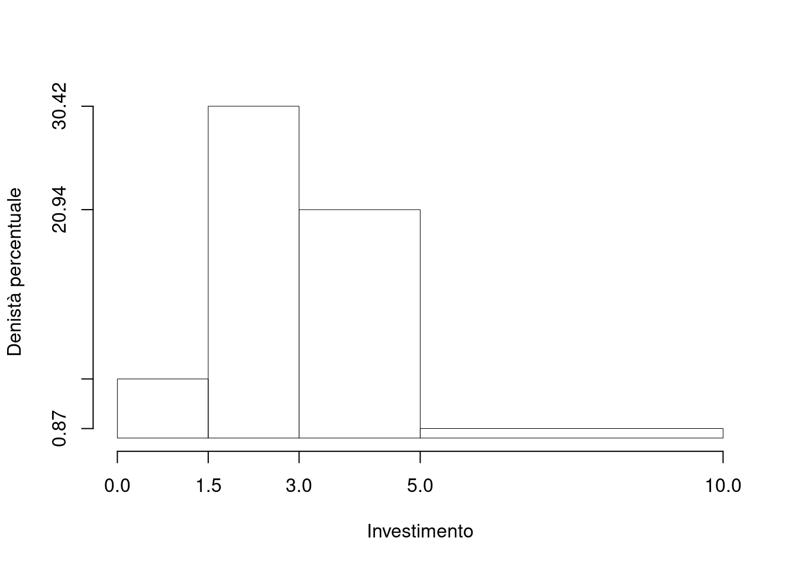
1.b (Punti 3/103 \(\rightarrow\) 0.9/31) Che percentuale di famiglie investe più di 4.5 mila euro all’anno?
\[\begin{eqnarray*} \%(X>4.5) &=& (5.0-4.5)\times20.9375+4.375\\ &=& 14.8438 \end{eqnarray*}\]
1.c (Punti 2/103 \(\rightarrow\) 0.6/31) Che relazione dobbiamo aspettarci tra media e mediana?
1.d (Punti 2/103 \(\rightarrow\) 0.6/31) La spesa media è pari a \(\bar x=3.0676\), mentre la SD è pari a \(SD=1.3653\). Se ogni famiglia aumentasse il proprio investimento di 0.5 mila euro, quanto varrebbero la media e la SD dei dati così trasformati?
Esercizio 2
2.a (Punti 14/103 \(\rightarrow\) 4.21/31) Siano \(X\sim N(10,1.5)\) e sia \(Y\sim N(10,0.5)\), \(X\) e \(Y\) indipendenti. Posto \(A=\{8<X<10\}\), \(B=\{Y<11\}\). Quanto vale \(P(A\cup B)\)?
\[\begin{eqnarray*} P( 8 < X \leq 10 ) &=& P\left( \frac { 8 - 10 }{\sqrt{ 1.5 }} < \frac { X - \mu_X }{ \sigma_X } \leq \frac { 10 - 10 }{\sqrt{ 1.5 }}\right) \\ &=& P\left( -1.63 < Z \leq 0 \right) \\ &=& \Phi( 0 )-\Phi( -1.63 )\\ &=& \Phi( 0 )-(1-\Phi( 1.63 )) \\ &=& 0.5 -(1- 0.9484 ) \\ &=& 0.4484 \end{eqnarray*}\] \[\begin{eqnarray*} P( Y < 11 ) &=& P\left( \frac { Y - \mu_Y }{ \sigma_Y } < \frac { 11 - 10 }{\sqrt{ 0.5 }} \right) \\ &=& P\left( Z < 1.41 \right) \\ &=& \Phi( 1.41 ) \\ &=& 0.9207 \end{eqnarray*}\]
\[\begin{eqnarray*} P(A\cup B) &=& 0.4488+ 0.9214-0.4135\\ &=& 0.9566\\ \end{eqnarray*}\]
2.b (Punti 3/103 \(\rightarrow\) 0.9/31) Un’urna contiene due palline rosse, due bianche e una nera. Si estrae due volte senza reinserimento. Qual è la probabilità di avere due colori diversi?
\[\begin{eqnarray*} \text{due colori diversi} &=& RB\cup BR \cup\\ && RN\cup NR \cup\\ && BN\cup NB\\ P(\text{due colori diversi}) &=& P(RB)+P(BR)+P(RN)+P(NR)+P(BN)+P(NB)\\ &=& \frac 25\frac 24+\frac 25\frac 24+\frac 25\frac 14+\frac 15\frac 24+\frac 25\frac 14+\frac 15\frac 24\\ &=& \frac{4+4+2+2+2+2}{20}\\ &=& 0.8 \end{eqnarray*}\]
2.c (Punti 2/103 \(\rightarrow\) 0.6/31) Se \(X\sim\text{Pois}(3.2)\) e \(Y\sim\text{Pois}(1.2)\), \(X\) e \(Y\) indipendenti, quali sono valore atteso e varianza di \(X+Y\) e di \(X-Y\)?
2.d (Punti 2/103 \(\rightarrow\) 0.6/31) Sia \(X\) una VC e sia \(F\) la sua funzione di ripartizione. Cosa significa dire che \(F\) è continua a destra?
Esercizio 3
3.a (Punti 14/103 \(\rightarrow\) 4.21/31) Un’urna contiene 4 palline numerate: \(\fbox{0}\), \(\fbox{0}\), \(\fbox{0}\) e \(\fbox{1}\). Si estrae 100 volte con reinserimento. Qual è la probabilità che la proporzione di palline timbrate con 1 nelle 100 estrazioni sia maggiore di 0.27?
\[\begin{eqnarray*} \pi &=& \frac 14\\ E(\hat\pi) &=& \frac 14\\ V(\hat\pi) &=& \frac {1/4(1-1/4)}{100}\\ &=& 0.0019 \end{eqnarray*}\]
Teorema del Limite Centrale (proporzione)
Siano \(X_1\),…,\(X_n\), \(n=100\) VC IID, tc \(X_i\sim\text{Ber}(\pi=0.25)\)\(,\forall i\), posto: \[ \hat\pi=\frac{S_n}n = \frac{X_1 + ... + X_n}n \] allora:\[\begin{eqnarray*} \hat\pi & \mathop{\sim}\limits_{a}& N(\pi,\pi(1-\pi)/n) \\ &\sim & N\left(0.25,\frac{0.25\cdot(1-0.25)}{100}\right) \\ &\sim & N(0.25,0.001875) \end{eqnarray*}\]\[\begin{eqnarray*} P( \hat\pi > 0.27 ) &=& P\left( \frac { \hat\pi - \pi }{ \sqrt{\pi(1-\pi)/n} } > \frac { 0.27 - 0.25 }{\sqrt{ 0.001875 }} \right) \\ &=& P\left( Z > 0.46 \right) \\ &=& 1-P(Z< 0.46 )\\ &=& 1-\Phi( 0.46 ) \\ &=& 0.3228 \end{eqnarray*}\]
Esercizio 4
4.a (Punti 3/103 \(\rightarrow\) 0.9/31) Sia \(\hat \lambda\) lo stimatore di massima verosimiglianza di \(\lambda\) del modello di Poisson. \[\begin{eqnarray*} \hat\lambda &=& \frac 1n\sum_{i=1}^nx_i\\ \end{eqnarray*}\] Ricavare il suo \(MSE\) (Mean Squared Error).
4.b (Punti 3/103 \(\rightarrow\) 0.9/31) Si \(h\) uno stimatore per \(\theta\) tale che \(E(h)=\theta\). Di quale proprietà gode \(h\)?
4.c (Punti 3/103 \(\rightarrow\) 0.9/31) Definire la potenza di un test.
4.d (Punti 3/103 \(\rightarrow\) 0.9/31) In uno studio sull’efficacia degli integratori alimentari, su un gruppo di 238 atleti è stato misurato il rendimento atletico (ottimo, buono e scarso) e l’assunzione di integratori (alto, medio e basso). Qui di seguito i dati:
|
Integratori
|
|||
|---|---|---|---|
| alto | medio | basso | |
| rendimento | |||
| ottimo | 21 | 35 | 15 |
| buono | 20 | 26 | 30 |
| scarso | 18 | 38 | 35 |
il test del chi-quadro sull’indipendenza tra rendimento e assunzione di integratori restituisce un \(p_\text{value}=0.08\). Che cosa possiamo concludere?
Esercizio 5
5.a (Punti 14/103 \(\rightarrow\) 4.21/31) In uno studio sul gradimento dell’azione politica della regione, nel comune \(A\) si è rilevata l’opinione su 35 intervistati misurata in una scala di gradimento che va da zero a 100. I dati campionari hanno evidenziato una media pari a \(\hat\mu_A=68\) e una deviazione standard osservata pari a \(\hat\sigma_A=5.1\), mentre nel comune \(A\) si è rilevata l’opinione su 35 intervistati misurata in una scala di gradimento che va da zero a 100. I dati campionari hanno evidenziato una media pari a \(\hat\mu_B=71\) e una deviazione standard osservata pari a \(\hat\sigma_B=4.5\). Sotto ipotesi di omogeneità delle varianza testare l’ipotesi che il gradimento politico sia uguale nei due comuni contro l’alternativa che sia diverso.
Test \(T\) per due medie, (omogeneità)
\(\fbox{A}\) FORMULAZIONE DELLE IPOTESI
\[\begin{cases} H_0: \mu_\text{A} = \mu_\text{B} \\ H_1: \mu_\text{A} \neq \mu_\text{B} \end{cases}\]
\(\fbox{B}\) SCELTA E CALCOLO STATISTICA-TEST, \(T\)
L’ipotesi è di omogeneità e quindi calcoliamo:\[ S_p^2=\frac{n_\text{ A }\hat\sigma^2_\text{ A }+n_\text{ B }\hat\sigma^2_\text{ B }}{n_\text{ A }+n_\text{ B }-2} = \frac{ 35 \cdot 5.1 ^2+ 35 \cdot 4.5 ^2}{ 35 + 35 -2}= 23.81 \]
\[\begin{eqnarray*} \frac{\hat\mu_\text{ A } - \hat\mu_\text{ B }} {\sqrt{\frac {S^2_p}{n_\text{ A }}+\frac {S^2_p}{n_\text{ B }}}}&\sim&t_{n_\text{ A }+n_\text{ B }-2}\\ t_{\text{obs}} &=& \frac{ ( 68 - 71 )} {\sqrt{\frac{ 26.77 }{ 35 }+\frac{ 20.85 }{ 35 }}} = -2.572 \, . \end{eqnarray*}\]
\(\fbox{C}\) CONCLUSIONE
Siccome \(H_1\) è bilaterale, considereremo \(\alpha/2\), anziché \(\alpha\)
\(\alpha=0.1, 0.05, 0.01, 0.001\) e quindi \(\alpha/2=0.05, 0.025, 0.005, 0.0005\)
I valori critici sono
\(t_{70-2;0.05}=1.6676\); \(t_{70-2;0.025}=1.9955\); \(t_{70-2;0.005}=2.6501\); \(t_{70-2;0.0005}=3.4394\)
Siccome \(1.9955<|t_\text{obs}|=2.5719<2.6501\), quindi rifiuto \(H_0\) al 5%,
\(0.01<p_\text{value}<0.05\), significativo \(\fbox{*}\).
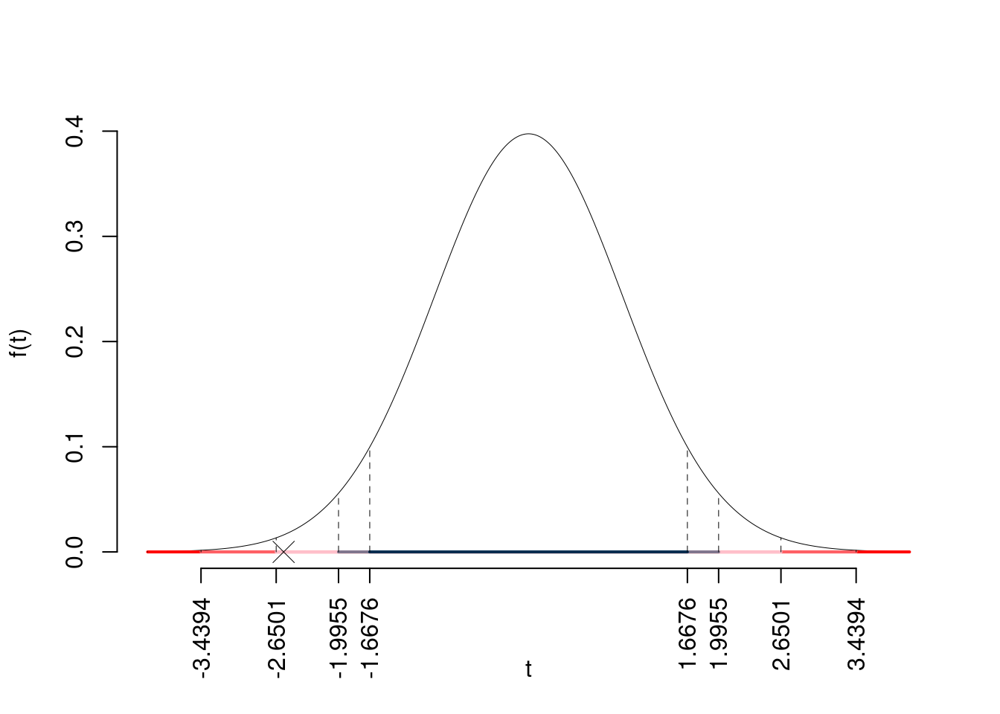
Il \(p_{\text{value}}\) è
\[ p_{\text{value}} = P(|T_{70-2}|>|-2.57|)=2P(T_{70-2}>2.57)=0.012303 \]
Attenzione il calcolo del \(p_\text{value}\) con la \(T\) è puramente illustrativo e non può essere riprodotto senza una calcolatrice statistica adeguata.\[ 0.01 < p_\text{value}= 0.012303 \leq 0.05 \]
Esercizio 6
In uno studio sul potere d’acquisto delle famiglie è stato selezionato un campione di 150 nuclei familiari a cui è stato chiesto il reddito annuo (\(X\) espressa in scala di comodo) e la spesa annua in generi alimentari (\(Y\) espressa in scala di comodo). Qui di seguito le statistiche bivariate
\[\begin{align*} \sum_{i=1}^n x_i &= 76.93, &\sum_{i=1}^n x_i^2 &= 51.33 \\ \sum_{i=1}^n y_i &= 63.05, &\sum_{i=1}^n y_i^2 &= 27.67 \\ \sum_{i=1}^n x_iy_i &= 35.59. \\ \end{align*}\]
6.a (Punti 14/103 \(\rightarrow\) 4.21/31) Stimare la previsione per \(x=1.5\) nel modello di regressione dove \(Y\) viene spiegata da \(X\).
\[\begin{eqnarray*} \bar x &=&\frac 1 n\sum_{i=1}^n x_i = \frac {1}{ 150 } 76.93 = 0.5129 \\ \bar y &=&\frac 1 n\sum_{i=1}^n y_i = \frac {1}{ 150 } 63.05 = 0.4203 \\ \hat\sigma_X^2&=&\frac 1 n\sum_{i=1}^n x_i^2-\bar x^2=\frac {1}{ 150 } 51.33 - 0.5129 ^2= 0.07917 \\ \hat\sigma_Y^2&=&\frac 1 n\sum_{i=1}^n y_i^2-\bar y^2=\frac {1}{ 150 } 27.67 - 0.4203 ^2= 0.007787 \\ \text{cov}(X,Y)&=&\frac 1 n\sum_{i=1}^n x_i~y_i-\bar x\bar y=\frac {1}{ 150 } 35.59 - 0.5129 \cdot 0.4203 = 0.02172 \\ \hat\beta_1 &=& \frac{\text{cov}(X,Y)}{\hat\sigma_X^2} \\ &=& \frac{ 0.02172 }{ 0.07917 } = 0.2744 \\ \hat\beta_0 &=& \bar y - \hat\beta_1 \bar x\\ &=& 0.4203 - 0.2744 \times 0.5129 = 0.2796 \end{eqnarray*}\]\[\hat y_{X= 1.5 }=\hat\beta_0+\hat\beta_1 x= 0.2796 + 0.2744 \times 1.5 = 0.6912 \]
6.b (Punti 3/103 \(\rightarrow\) 0.9/31) Qual è la percentuale di varianza spiegata dal modello?
\[r^2\times 100=76.5637\]
6.c (Punti 2/103 \(\rightarrow\) 0.6/31) Interpretare il diagramma dei residui. 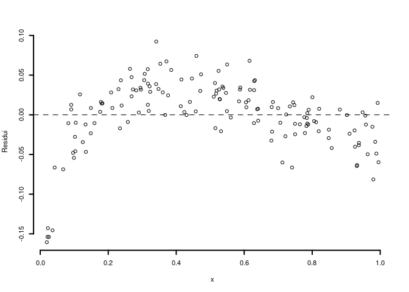
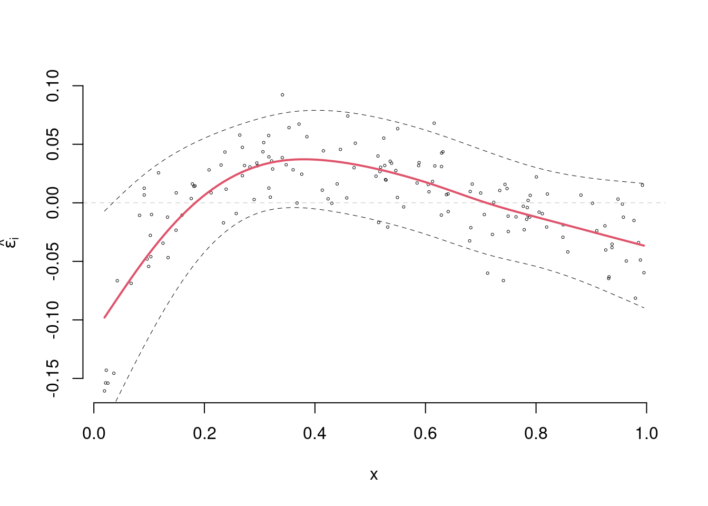
6.d (Punti 2/103 \(\rightarrow\) 0.6/31) Se \(W=- Y\), quanto varrà \(r_{XW}\), coefficiente di correlazione tra \(X\) e \(W\)?
Prova di Statistica 2023/01/11-2
Esercizio 1
Su un campione di \(160\) famiglie della provincia di Modena è stato rilevato l’investimento annuo in prodotti obbligazionari (espresso in migliaia di euro). Qui di seguito la distribuzione delle frequenze percentuali:
| \([\text{x}_j,\) | \(\text{x}_{j+1})\) | \(f_{j\%}\) |
|---|---|---|
| 0.0 | 5.0 | 4.375 |
| 5.0 | 7.0 | 41.875 |
| 7.0 | 8.5 | 45.625 |
| 8.5 | 10.0 | 8.125 |
| 100.000 |
1.a (Punti 14/103 \(\rightarrow\) 4.21/31) Disegnare l’istogramma di densità percentuale.
| \([\text{x}_j,\) | \(\text{x}_{j+1})\) | \(n_j\) | \(f_j\) | \(b_j\) | \(h_j\) |
|---|---|---|---|---|---|
| 0.0 | 5.0 | 7 | 0.0437 | 5.0 | 0.875 |
| 5.0 | 7.0 | 67 | 0.4188 | 2.0 | 20.938 |
| 7.0 | 8.5 | 73 | 0.4562 | 1.5 | 30.417 |
| 8.5 | 10.0 | 13 | 0.0813 | 1.5 | 5.417 |
| 160 | 1.0000 | 10.0 |
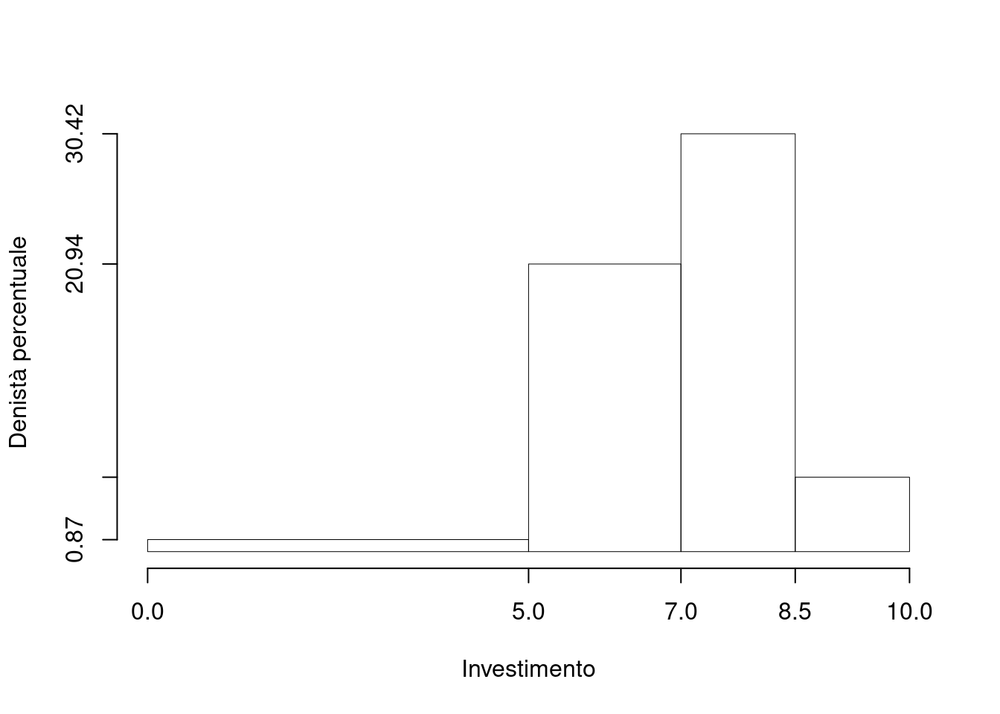
1.b (Punti 3/103 \(\rightarrow\) 0.9/31) Quante famiglie investono più di 8 mila euro all’anno?
\[\begin{eqnarray*} \#(X>4.5) &=& 160(\frac1{100}(8.5-8)\times30.4167+0.0813)\\ &=& 37.3333 \end{eqnarray*}\]
1.c (Punti 2/103 \(\rightarrow\) 0.6/31) Che relazione dobbiamo aspettarci tra media e mediana?
1.d (Punti 2/103 \(\rightarrow\) 0.6/31) La spesa media è pari a \(\bar x=6.9001\), mentre la SD è pari a \(SD=1.5027\). Se ogni famiglia aumentasse il proprio investimento del 2 percento, quanto varrebbero la media e la SD dei dati così trasformati?
Esercizio 2
2.a (Punti 14/103 \(\rightarrow\) 4.21/31) I clienti in fila nell’ora di punta alla cassa di un supermercato sono distribuiti come una Poisson di parametro 2.5 (\(X\sim\text{Pois}(\lambda=2.5)\)). Qual è la probabilità di trovare almeno 2 clienti in coda (\(X\ge 2\))?
\[\begin{eqnarray*} P(X\ge 2) &=& 1-P(X<2)\\ &=& 1-(P(X=0)+P(X=1))\\ &=& 1-(0.0821+0.2306)\\ &=& 0.6873 \end{eqnarray*}\]
\[\begin{eqnarray*} P( X > 2 ) &=& 1-P( X < 2 ) \\ &=& 1-\left( \frac{ 2.3 ^{ 0 }}{ 0 !}e^{- 2.3 }+\frac{ 2.3 ^{ 1 }}{ 1 !}e^{- 2.3 } \right)\\ &=& 1-( 0.1003+0.2306 )\\ &=& 1- 0.3309 \\ &=& 0.6691 \end{eqnarray*}\]
2.b (Punti 3/103 \(\rightarrow\) 0.9/31) Un’urna contiene 5 palline: 2 rosse e 3 bianche. Si estrae con reintroduzione finché non escono 2 bianche consecutive. Calcolare la probabilità di finire in esattamente 3 estrazioni.
\[\begin{eqnarray*} \text{esattamente tre} &=& R\cap B\cap B \\ P(\text{esattamente tre}) &=& P(R\cap B\cap B)\\ &=&\frac 25 \frac 35\frac 35\\ &=& 0.144 \end{eqnarray*}\]
2.c (Punti 2/103 \(\rightarrow\) 0.6/31) Se \(X\sim N(3.2,1.5)\) e \(Y\sim N(1.2,1.1)\), \(X\) e \(Y\) indipendenti, come si distribuiscono \(X+Y\) e \(X-Y\)?
2.d (Punti 2/103 \(\rightarrow\) 0.6/31) Sia \(X\) una VC e sia \(F\) la sua funzione di ripartizione. Cosa significa dire che \(F\) è crescente?
Esercizio 3
3.a (Punti 14/103 \(\rightarrow\) 4.21/31) Un’urna contiene 4 palline numerate con \(\fbox{0}\), \(\fbox{3}\), \(\fbox{4}\) e \(\fbox{6}\). Si estrae 100 volte con reinserimento. Qual è la probabilità che la somme delle 100 estrazioni sia maggiore di 310?
\[\begin{eqnarray*} \mu &=& \frac 1{ 4 }( 0 + 3 + 4 + 6 )= 3.25 \\ \sigma^2 &=& \frac 1{ 4 }( 0 ^2+ 3 ^2+ 4 ^2+ 6 ^2 )-( 3.25 )^2= 4.688 \end{eqnarray*}\] Teorema del Limite Centrale (somma VC qualunque)
Siano \(X_1\),…,\(X_n\), \(n=100\) VC IID, tc \(E(X_i)=\mu=3.25\) e \(V(X_i)=\sigma^2=4.688,\forall i\), posto: \[ S_n = X_1 + ... + X_n \] allora:\[\begin{eqnarray*} S_n & \mathop{\sim}\limits_{a}& N(n\mu,n\sigma^2) \\ &\sim & N(100\cdot3.25,100\cdot4.688) \\ &\sim & N(325,468.8) \end{eqnarray*}\]\[\begin{eqnarray*} P( S_n > 310 ) &=& P\left( \frac { S_n - n\mu }{ \sqrt{n\sigma^2} } > \frac { 310 - 325 }{\sqrt{ 468.8 }} \right) \\ &=& P\left( Z > -0.69 \right) \\ &=& 1-P(Z< -0.69 )\\ &=& 1-(1-\Phi( 0.69 )) \\ &=& 0.7549 \end{eqnarray*}\]
Esercizio 4
4.a (Punti 3/103 \(\rightarrow\) 0.9/31) Sia \(\hat \pi\) lo stimatore di massima verosimiglianza di \(\pi\) del modello Binomiale. \[\begin{eqnarray*} \hat\pi &=& \frac 1n\sum_{i=1}^nx_i\\ \end{eqnarray*}\] Ricavare il suo \(MSE\) (Mean Squared Error).
4.b (Punti 3/103 \(\rightarrow\) 0.9/31) Si \(h\) uno stimatore per \(\theta\) tale che \(E(h)=\theta\) e \(\lim_{n\to\infty} V(h)=0\). Di quale proprietà gode \(h\)?
4.c (Punti 3/103 \(\rightarrow\) 0.9/31) Definire la significatività di un test.
4.d (Punti 3/103 \(\rightarrow\) 0.9/31) In uno studio sull’efficacia della formazione nella scelta degli investimenti finanziari sono stati analizzati due gruppi di investitori, un primo gruppo senza alcuno studio specifico e un secondo gruppo di laureati in scienze economiche o affini. Sotto ipotesi di eterogeneità della varianze si è messo a test l’ipotesi che il rendimento medio degli investimenti dei laureati in scienze economiche \(\mu_E\) sia uguale a quello dei non laureati \(\mu_N\), contro l’alternativa che \(\mu_E>\mu_N\). Il test ha restituito un \(p_\text{value}\) pari a 0.092. Cosa possiamo concludere?
Esercizio 5
5.a (Punti 14/103 \(\rightarrow\) 4.21/31) In uno studio sul gradimento dell’azione politica della regione, nel comune \(A\) si è rilevato che 26 persone su 35 intervistati è soddisfatto, mentre nel comune \(B\), 45 su 50 sono soddisfatti. Testare usando il \(p_\text{value}\) l’ipotesi che la proporzione di disoccupati sia uguale nei due comuni, contro l’alternativa che si maggiore nel comune \(B\).
Test \(Z\) per due proporzioni
\(\fbox{A}\) FORMULAZIONE DELLE IPOTESI
\[\begin{cases} H_0: \pi_\text{A} = \pi_\text{B} \\ H_1: \pi_\text{A} < \pi_\text{B} \end{cases}\]
\(\fbox{B}\) SCELTA E CALCOLO STATISTICA-TEST, \(Z\)
\[\hat\pi_\text{ A }=\frac{s_\text{ A }}{n_\text{ A }}=\frac{ 26 }{ 35 }= 0.7429 \qquad \hat\pi_\text{ B }=\frac{s_\text{ B }}{n_\text{ B }}=\frac{ 45 }{ 50 }= 0.9 \]Calcoliamo la proporzione comune sotto \(H_0\) \[ \pi_C=\frac{s_\text{ A }+s_\text{ B }}{n_\text{ A }+n_\text{ B }}= \frac{ 71 }{ 85 }= 0.8353 \]\[\begin{eqnarray*} \frac{\hat\pi_\text{ A } - \hat\pi_\text{ B }} {\sqrt{\frac {\pi_C(1-\pi_C)}{n_\text{ A }}+\frac {\pi_C(1-\pi_C)}{n_\text{ B }}}}&\sim&N(0,1)\\ z_{\text{obs}} &=& \frac{ ( 0.7429 - 0.9 )} {\sqrt{\frac{ 0.8353 (1- 0.8353 )}{ 35 }+\frac{ 0.8353 (1- 0.8353 )}{ 50 }}} = -1.922 \, . \end{eqnarray*}\]
\(\fbox{C}\) CONCLUSIONE
Il \(p_{\text{value}}\) è
\[ p_{\text{value}} = P(Z<-1.92)=0.027282 \]
\[ 0.01 < p_\text{value}= 0.027282 \leq 0.05 \]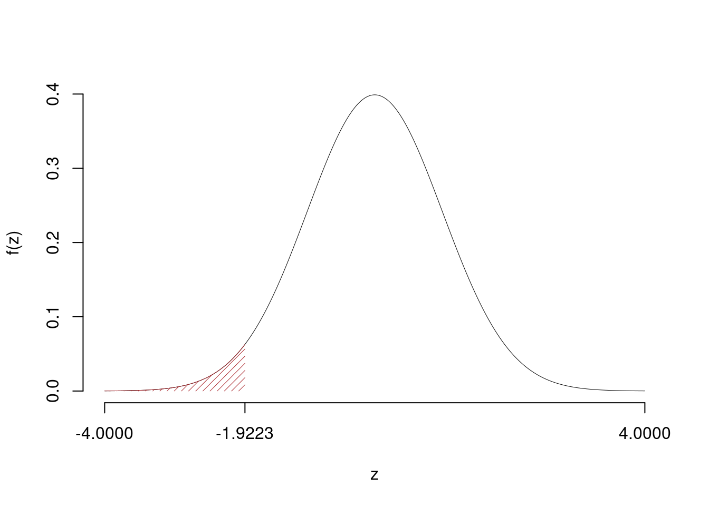
Rifiuto \(H_0\) al 5%,
\(0.01<p_\text{value}<0.05\), significativo \(\fbox{*}\).
Esercizio 6
In uno studio sul potere d’acquisto delle famiglie è stato selezionato un campione di 150 nuclei familiari a cui è stato chiesto il reddito annuo (\(X\) espressa in scala di comodo) e gli aumenti dei prezzi percepiti (\(Y\) espressa in opportuna scala). Qui di seguito le statistiche bivariate
\[\begin{align*} \sum_{i=1}^n x_i &= 76.93, &\sum_{i=1}^n x_i^2 &= 51.33 \\ \sum_{i=1}^n y_i &= 102.84, &\sum_{i=1}^n y_i^2 &= 71.69 \\ \sum_{i=1}^n x_iy_i &= 49.45. \\ \end{align*}\]
6.a (Punti 14/103 \(\rightarrow\) 4.21/31) Stimare la previsione per \(x=1.5\) nel modello di regressione dove \(Y\) viene spiegata da \(X\).
\[\begin{eqnarray*} \bar x &=&\frac 1 n\sum_{i=1}^n x_i = \frac {1}{ 150 } 76.93 = 0.5129 \\ \bar y &=&\frac 1 n\sum_{i=1}^n y_i = \frac {1}{ 150 } 102.84 = 0.6856 \\ \hat\sigma_X^2&=&\frac 1 n\sum_{i=1}^n x_i^2-\bar x^2=\frac {1}{ 150 } 51.33 - 0.5129 ^2= 0.07917 \\ \hat\sigma_Y^2&=&\frac 1 n\sum_{i=1}^n y_i^2-\bar y^2=\frac {1}{ 150 } 71.69 - 0.6856 ^2= 0.007886 \\ \text{cov}(X,Y)&=&\frac 1 n\sum_{i=1}^n x_i~y_i-\bar x\bar y=\frac {1}{ 150 } 49.45 - 0.5129 \cdot 0.6856 = -0.02193 \\ \hat\beta_1 &=& \frac{\text{cov}(X,Y)}{\hat\sigma_X^2} \\ &=& \frac{ -0.02193 }{ 0.07917 } = -0.2769 \\ \hat\beta_0 &=& \bar y - \hat\beta_1 \bar x\\ &=& 0.6856 - (-0.2769) \times 0.5129 = 0.8276 \end{eqnarray*}\]\[\hat y_{X= 1.5 }=\hat\beta_0+\hat\beta_1 x= 0.8276 + (-0.2769) \times 1.5 = 0.4122 \]
6.b (Punti 3/103 \(\rightarrow\) 0.9/31) Il modello si adatta bene ai dati?
\[\begin{eqnarray*} r&=&\frac{\text{cov}(X,Y)}{\sigma_X\sigma_Y}=\frac{ -0.02193 }{ 0.2814 \times 0.0888 }= -0.8775 \\r^2&=& 0.77 > 0.75 \end{eqnarray*}\] Il modello si adatta bene ai dati.
6.c (Punti 2/103 \(\rightarrow\) 0.6/31) Interpretare il diagramma dei residui.

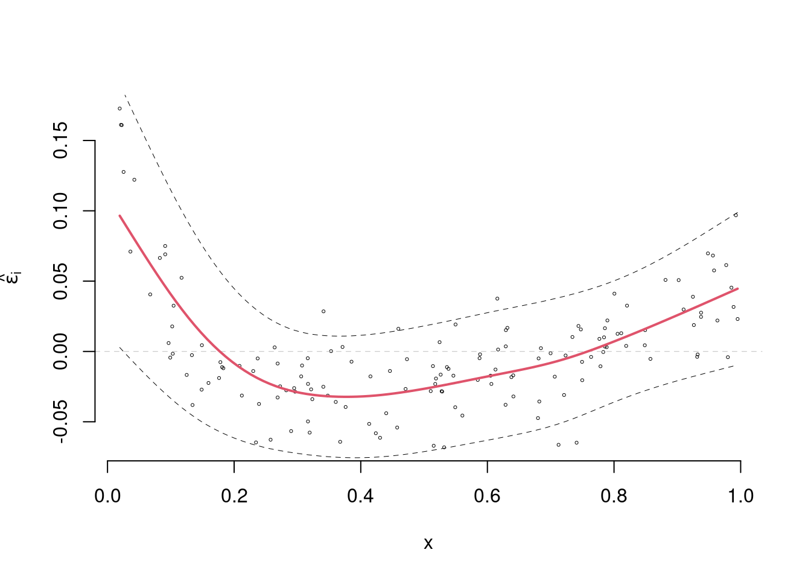
6.d (Punti 2/103 \(\rightarrow\) 0.6/31) Se \(W= 1 - Y\), quanto varrà \(r_{XW}\), coefficiente di correlazione tra \(X\) e \(W\)?
Prova di Statistica 2023/01/11-3
Esercizio 1
Su un campione di \(160\) famiglie della provincia di Modena è stato rilevato l’investimento annuo in prodotti finanziari (espresso in migliaia di euro). Qui di seguito la distribuzione delle frequenze cumulate:
| \([\text{x}_j,\) | \(\text{x}_{j+1})\) | \(F_j\) |
|---|---|---|
| 0.0 | 3.5 | 0.0813 |
| 3.5 | 5.0 | 0.5000 |
| 5.0 | 6.5 | 0.9188 |
| 6.5 | 10.0 | 1.0000 |
1.a (Punti 14/103 \(\rightarrow\) 4.21/31) Disegnare l’istogramma di densità percentuale.
| \([\text{x}_j,\) | \(\text{x}_{j+1})\) | \(n_j\) | \(f_j\) | \(b_j\) | \(h_j\) |
|---|---|---|---|---|---|
| 0.0 | 3.5 | 13 | 0.0813 | 3.5 | 2.321 |
| 3.5 | 5.0 | 67 | 0.4188 | 1.5 | 27.917 |
| 5.0 | 6.5 | 67 | 0.4188 | 1.5 | 27.917 |
| 6.5 | 10.0 | 13 | 0.0813 | 3.5 | 2.321 |
| 160 | 1.0000 | 10.0 |
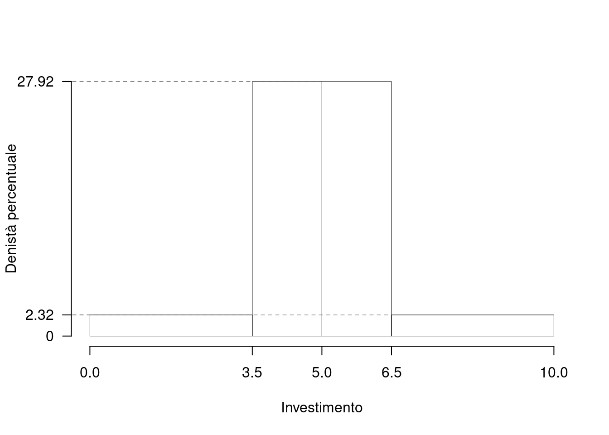
1.b (Punti 3/103 \(\rightarrow\) 0.9/31) Quante famiglie investono meno di 4.5 mila euro all’anno?
\[\begin{eqnarray*} \#(X<4.5) &=& 160(\frac1{100}(4.5-3.5)\times27.9167+0.0813)\\ &=& 57.6667 \end{eqnarray*}\]
1.c (Punti 2/103 \(\rightarrow\) 0.6/31) Che relazione dobbiamo aspettarci tra media e mediana?
1.d (Punti 2/103 \(\rightarrow\) 0.6/31) La spesa media è pari a \(\bar x=4.9926\), mentre la SD è pari a \(SD=1.5124\). Se ogni famiglia diminuisse il proprio investimento del 2%, quanto varrebbero la media e la SD dei dati così trasformati?
Esercizio 2
2.a (Punti 14/103 \(\rightarrow\) 4.21/31) Un’urna contiene 20 palline: 8 bianche e 12 nere, si estrae con reintroduzione 5 volte. Qual è la probabilità avere un numero di palline bianche maggiore o uguale a 2 su 5 estrazioni?
\[\begin{eqnarray*} P(X\ge 2) &=& 1-P(X<2)\\ &=& 1-(P(X=0)+P(X=1))\\ &=& 1-(0.0778+0.2592)\\ &=& 0.663 \end{eqnarray*}\]
2.b (Punti 3/103 \(\rightarrow\) 0.9/31) Dalla stessa urna di prima, si estrae con reintroduzione finché non escono due palline bianche consecutive. Qual è la probabilità di finire in al massimo 3 tentativi?
\[\begin{eqnarray*} \text{al massimo tre} &=& (B\cap B)\cup(R\cap B\cap B )\\ P(\text{al massimo tre}) &=& P(B\cap B)+P(R\cap B\cap B)\\ &=&0.4\times 0.4 +0.6\times 0.4\times 0.4\\ &=& 0.256 \end{eqnarray*}\]
2.c (Punti 2/103 \(\rightarrow\) 0.6/31) Se \(X\sim N(3.2,1.1)\) e \(Y\sim\text{Binom}(12,0.3)\), \(X\) e \(Y\) indipendenti, quali sono valore atteso e varianza di \(X+Y\) e di \(X-Y\)?
2.d (Punti 2/103 \(\rightarrow\) 0.6/31) Sia \(X\) una VC e sia \(F\) la sua funzione di ripartizione. Quanto valgono \(\lim_{x\to-\infty}F(x)\) e \(\lim_{x\to+\infty}F(x)\)?
Esercizio 3
3.a (Punti 14/103 \(\rightarrow\) 4.21/31) Un’urna contiene 4 palline numerate: \(\fbox{0}\), \(\fbox{1}\), \(\fbox{4}\) e \(\fbox{6}\). Si estrae 100 volte con reinserimento. Qual è la probabilità che la media delle 100 estrazioni sia maggiore di 2.8?
\[\begin{eqnarray*} \mu &=& E(X_i) = \sum_{x\in S_X}x P(X=x)\\ &=& 0 \frac { 1 }{ 4 }+ 1 \frac { 1 }{ 4 }+ 4 \frac { 1 }{ 4 }+ 6 \frac { 1 }{ 4 } \\ &=& 2.75 \\ \sigma^2 &=& V(X_i) = \sum_{x\in S_X}x^2 P(X=x)-\mu^2\\ &=&\left( 0 ^2\frac { 1 }{ 4 }+ 1 ^2\frac { 1 }{ 4 }+ 4 ^2\frac { 1 }{ 4 }+ 6 ^2\frac { 1 }{ 4 } \right)-( 2.75 )^2\\ &=& 5.688 \end{eqnarray*}\] Teorema del Limite Centrale (media VC qualunque)
Siano \(X_1\),…,\(X_n\), \(n=100\) VC IID, tc \(E(X_i)=\mu=2.75\) e \(V(X_i)=\sigma^2=5.688,\forall i\), posto: \[ \bar X=\frac{S_n}n =\frac{X_1 + ... + X_n}n \] allora:\[\begin{eqnarray*} \bar X & \mathop{\sim}\limits_{a}& N(\mu,\sigma^2/n) \\ &\sim & N\left(2.75,\frac{5.688}{100}\right) \\ &\sim & N(2.75,0.05688) \end{eqnarray*}\]\[\begin{eqnarray*} P( \bar X > 2.8 ) &=& P\left( \frac { \bar X - \mu }{ \sqrt{\sigma^2/n} } > \frac { 2.8 - 2.75 }{\sqrt{ 0.05688 }} \right) \\ &=& P\left( Z > 0.21 \right) \\ &=& 1-P(Z< 0.21 )\\ &=& 1-\Phi( 0.21 ) \\ &=& 0.4168 \end{eqnarray*}\]
Esercizio 4
4.a (Punti 3/103 \(\rightarrow\) 0.9/31) Siano \(\hat \mu\) e \(\hat\sigma^2\) gli stimatori di massima verosimiglianza di \(\mu\) e \(\sigma^2\) del modello di Normale. \[\begin{eqnarray*} \hat\mu &=& \frac 1n\sum_{i=1}^nx_i \qquad \hat\sigma^2 = \frac 1n\sum_{i=1}^n(x_i-\hat\mu)^2\\ \end{eqnarray*}\] Ricavare il \(MSE\) (Mean Squared Error) di \(\hat\mu\).
4.b (Punti 3/103 \(\rightarrow\) 0.9/31) Si \(h\) uno stimatore per \(\theta\) tale che \(E(h)\ne\theta\), ma che \(\lim_{n\to\infty}E(h)=\theta\). Di quale proprietà gode \(h\)?
4.c (Punti 3/103 \(\rightarrow\) 0.9/31) Quali sono gli errori di primo e secondo tipo?
4.d (Punti 3/103 \(\rightarrow\) 0.9/31) In uno studio sull’efficacia degli integratori alimentari, a 120 atleti è stato somministrato un particolare integratore alimentare giornalmente e a 120 atleti è stato dato un placebo. Dopo 30 giorni di sperimentazione sono state eseguite prove fisiche che hanno restituito la performance degli atleti misurata in scala numerica. Gli atleti che hanno assunto l’integratore hanno ottenuto un risultato medio pari a \(\hat\mu_\text{Integratore}=53.4\), mentre gli atleti che hanno assunto l’integratore hanno ottenuto un risultato medio pari a \(\hat\mu_\text{Placebo}=50.8\). Sotto ipotesi di omogeneità è stato messo a test \[ \begin{cases} H_0:\mu_\text{Integratore}=\mu_\text{Placebo}\\ H_1:\mu_\text{Integratore}>\mu_\text{Placebo} \end{cases} \] il \(p_\text{value}\) è risultato pari a \(p_\text{value}=0.092\). Cosa possiamo concludere?
Esercizio 5
5.a (Punti 3/103 \(\rightarrow\) 0.9/31) In uno studio sul gradimento dell’azione politica della regione, nel comune \(A\) si è rilevata l’opinione su 35 intervistati misurata in una scala di gradimento che va da zero a 100. I dati campionari hanno evidenziato una media pari a \(\hat\mu=68\) e una deviazione standard osservata pari a \(\hat\sigma=5\). Costruire un intervallo di confidenza al 95% per il gradimento medio \(\mu\).
\(1-\alpha =0.95\) e quindi \(\alpha=0.05\rightarrow \alpha/2=0.025\)
\[ S =\sqrt{\frac {n}{n-1}}\cdot\hat\sigma = \sqrt{\frac { 35 }{ 34 }}\cdot 5 = 5.073 \] \[\begin{eqnarray*} Idc: & & \hat\mu \pm t_{n-1;\alpha/2} \times \frac{S}{\sqrt{n}} \\ & & 68 \pm 2.032 \times \frac{ 5.073 }{\sqrt{ 35 }} \\ & & 68 \pm 2.032 \times 0.8575 \\ & & [ 66.26 , 69.74 ] \end{eqnarray*}\]
5.b (Punti 11/103 \(\rightarrow\) 3.31/31) Un’indagine analoga, svolta sull’intera regione, ha mostrato un gradimento medio pari a \(\mu_0=71\). Testare l’ipotesi che nel comune A il livello di gradimento sia uguale a quello regionale contro l’alternativa che sia minore.
Test \(t\) per una media, varianza incognita
\(\fbox{A}\) FORMULAZIONE DELLE IPOTESI
\[\begin{cases} H_0: \mu = \mu_0=71 \\ H_1: \mu < \mu_0=71 \end{cases}\]
\[\begin{eqnarray*} S &=& \sqrt{\frac{n} {n-1}}\ \widehat{\sigma} = \sqrt{\frac{ 35 } { 35 -1}} \times 5 = 5.073 \end{eqnarray*}\] \[\begin{eqnarray*} \frac{\hat\mu - \mu_{0}} {S/\,\sqrt{n}}&\sim&t_{n-1}\\ t_{\text{obs}} &=& \frac{ ( 68 - 71 )} { 5.073 /\sqrt{ 35 }} = -3.499 \, . \end{eqnarray*}\]
\(\fbox{C}\) CONCLUSIONE
Consideriamo \(\alpha=0.1, 0.05, 0.01, 0.001\)
I valori critici sono
\(t_{35-1;0.1}=-1.307\); \(t_{35-1;0.05}=-1.6909\); \(t_{35-1;0.01}=-2.4411\); \(t_{35-1;0.001}=-3.3479\)
Siccome \(t_\text{obs}=-3.4986<-1.307\), quindi rifiuto \(H_0\) sotto all’1‰,
\(p_\text{value}<0.001\), estremamente significativo \(\fbox{***}\).
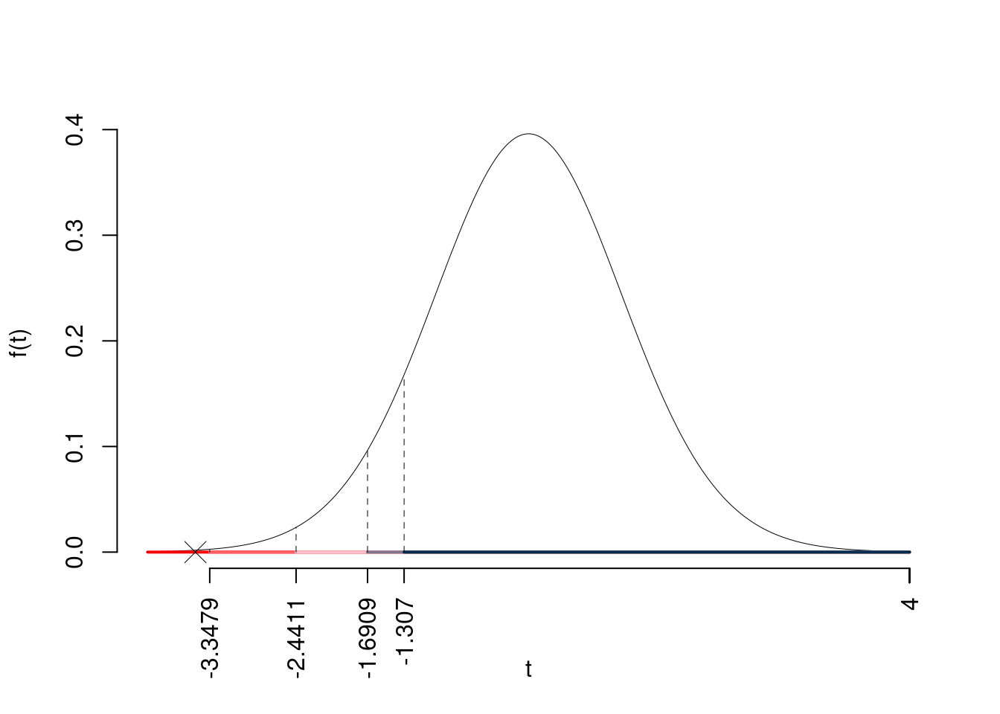
Il \(p_{\text{value}}\) è
\[ p_{\text{value}} = P(T_{35-1}<-3.5)=0.000663 \]
Attenzione il calcolo del \(p_\text{value}\) con la \(T\) è puramente illustrativo e non può essere riprodotto senza una calcolatrice statistica adeguata.\[ 0 < p_\text{value}= 0.000663 \leq 0.001 \]
Esercizio 6
In uno studio sul potere d’acquisto delle famiglie è stato selezionato un campione di 150 nuclei familiari a cui è stato chiesto il reddito annuo (\(X\) espressa in scala di comodo) e la spesa annua in generi alimentari (\(Y\) espressa in scala di comodo). Qui di seguito le statistiche bivariate
\[\begin{align*} \sum_{i=1}^n x_i &= 79.8, &\sum_{i=1}^n x_i^2 &= 54.9 \\ \sum_{i=1}^n y_i &= 94.3, &\sum_{i=1}^n y_i^2 &= 72.4 \\ \sum_{i=1}^n x_iy_i &= 62.7. \\ \end{align*}\]
6.a (Punti 14/103 \(\rightarrow\) 4.21/31) Stimare la previsione per \(x=1.5\) nel modello di regressione dove \(Y\) viene spiegata da \(X\).
\[\begin{eqnarray*} \bar x &=&\frac 1 n\sum_{i=1}^n x_i = \frac {1}{ 150 } 79.8 = 0.532 \\ \bar y &=&\frac 1 n\sum_{i=1}^n y_i = \frac {1}{ 150 } 94.3 = 0.6287 \\ \hat\sigma_X^2&=&\frac 1 n\sum_{i=1}^n x_i^2-\bar x^2=\frac {1}{ 150 } 54.9 - 0.532 ^2= 0.08298 \\ \hat\sigma_Y^2&=&\frac 1 n\sum_{i=1}^n y_i^2-\bar y^2=\frac {1}{ 150 } 72.4 - 0.6287 ^2= 0.08744 \\ \text{cov}(X,Y)&=&\frac 1 n\sum_{i=1}^n x_i~y_i-\bar x\bar y=\frac {1}{ 150 } 62.7 - 0.532 \cdot 0.6287 = 0.08355 \\ \hat\beta_1 &=& \frac{\text{cov}(X,Y)}{\hat\sigma_X^2} \\ &=& \frac{ 0.08355 }{ 0.08298 } = 1.007 \\ \hat\beta_0 &=& \bar y - \hat\beta_1 \bar x\\ &=& 0.6287 - 1.0069 \times 0.532 = 0.09301 \end{eqnarray*}\]\[\hat y_{X= 1.5 }=\hat\beta_0+\hat\beta_1 x= 0.09301 + 1.0069 \times 1.5 = 1.603 \]
6.b (Punti 3/103 \(\rightarrow\) 0.9/31) Calcolare e interpretare \(R^2\).
\[\begin{eqnarray*} r&=&\frac{\text{cov}(X,Y)}{\sigma_X\sigma_Y}=\frac{ 0.08355 }{ 0.2881 \times 0.2957 }= 0.9808 \\r^2&=& 0.962 > 0.75 \end{eqnarray*}\] Il modello si adatta bene ai dati.
6.c (Punti 2/103 \(\rightarrow\) 0.6/31) Interpretare il diagramma dei residui. 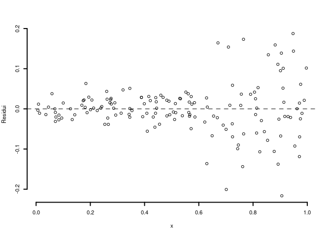
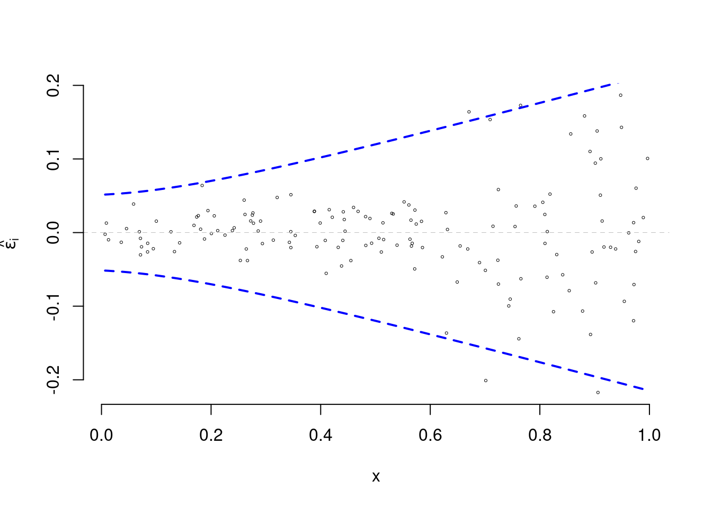
6.d (Punti 2/103 \(\rightarrow\) 0.6/31) Se \(W=1+ Y\), quanto varrà \(r_{XW}\), coefficiente di correlazione tra \(X\) e \(W\)?
Prova di Statistica 2023/02/16-1
Esercizio 1
Su un campione di \(200\) imprese della provincia di Modena è stato rilevato l’utile dell’ultimo trimestre (espresso in migliaia di euro). Qui di seguito la distribuzione delle frequenze assolute:
| \([\text{x}_j,\) | \(\text{x}_{j+1})\) | \(n_j\) |
|---|---|---|
| -2 | -1 | 17 |
| -1 | 1 | 83 |
| 1 | 5 | 92 |
| 5 | 15 | 8 |
| 200 |
1.a (Punti 14/103 \(\rightarrow\) 4.21/31) Individuare la classe modale.
| \([\text{x}_j,\) | \(\text{x}_{j+1})\) | \(n_j\) | \(f_j\) | \(b_j\) | \(h_j\) | \(F_j\) |
|---|---|---|---|---|---|---|
| -2 | -1 | 17 | 0.085 | 1 | 8.50 | 0.085 |
| -1 | 1 | 83 | 0.415 | 2 | 20.75 | 0.500 |
| 1 | 5 | 92 | 0.460 | 4 | 11.50 | 0.960 |
| 5 | 15 | 8 | 0.040 | 10 | 0.40 | 1.000 |
| 200 | 1.000 | 17 |
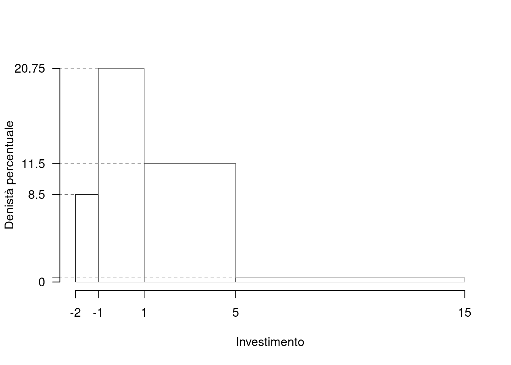
1.b (Punti 3/103 \(\rightarrow\) 0.9/31) Quale è il numero di imprese che hanno un utile maggiore di zero?
\[\begin{eqnarray*} \%(X>0) &=& 100\%-\%(X\le 0)\\ &=& 100 - (0.09\times 100 + 20.8\times(0-(-1)))\%\\ &=& 70.75\% \end{eqnarray*}\]
1.c (Punti 2/103 \(\rightarrow\) 0.6/31) L’utile medio è pari a \(\bar x=1.7013\) che forma avrà l’istogramma?
1.d (Punti 2/103 \(\rightarrow\) 0.6/31) Qual è la proprietà di associatività della media aritmetica?
Esercizio 2
2.a (Punti 14/103 \(\rightarrow\) 4.21/31) Siano \(X\sim N(1,1.5)\) e sia \(Y\sim N(1,0.5)\), \(X\) e \(Y\) indipendenti. Posto \(A=\{-2<X<1\}\), \(B=\{Y<1\}\). Quanto vale \(P(A\cap B)\)?
\[\begin{eqnarray*} P( -2 < X \leq 1 ) &=& P\left( \frac { -2 - 1 }{\sqrt{ 1.5 }} < \frac { X - \mu_X }{ \sigma_X } \leq \frac { 1 - 1 }{\sqrt{ 1.5 }}\right) \\ &=& P\left( -2.45 < Z \leq 0 \right) \\ &=& \Phi( 0 )-\Phi( -2.45 )\\ &=& \Phi( 0 )-(1-\Phi( 2.45 )) \\ &=& 0.5 -(1- 0.9929 ) \\ &=& 0.4929 \end{eqnarray*}\] \[\begin{eqnarray*} P( Y < 1 ) &=& P\left( \frac { Y - \mu_Y }{ \sigma_Y } < \frac { 1 - 1 }{\sqrt{ 1.5 }} \right) \\ &=& P\left( Z < 0 \right) \\ &=& \Phi( 0 ) \\ &=& 0.5 \end{eqnarray*}\]
\[\begin{eqnarray*} P(A\cap B) &=&0.5\times 0.49 = 0.245 \end{eqnarray*}\]
2.b (Punti 3/103 \(\rightarrow\) 0.9/31) Un’urna contiene 10 palline rosse, 10 bianche e 10 nere. Si estrae tre volte senza reinserimento. Qual è la probabilità di avere tre colori uguali?
\[\begin{eqnarray*} E &=& \text{tre colori uguali}\\ &=& \{(R_1\cap R_2 \cap R_3)\cup (B_1\cap B_2 \cap B_3)\cup (N_1\cap N_2 \cap N_3)\}\\ P(E) &=& P(R_1\cap R_2 \cap R_3) + P(B_1\cap B_2 \cap B_3) + P(N_1\cap N_2 \cap N_3)\\ &=& P(R_1)P(R_2|R_1)P(R_3|R_1\cap R_2)+P(B_1)P(B_2|B_1)P(B_3|B_1\cap B_2)+\\ & & + P(N_1)P(N_2|N_1)P(N_3|N_1\cap N_2)\\ &=& \frac {10}{30}\frac 9{29}\frac 8{28} + \frac {10}{30}\frac 9{29}\frac 8{28} +\frac {10}{30}\frac 9{29}\frac 8{28} \\ &=& 3\cdot \frac {10}{30}\frac 9{29}\frac 8{28} \\ &=& 0.0887 \end{eqnarray*}\]
2.c (Punti 2/103 \(\rightarrow\) 0.6/31) Se \(X\sim\text{Ber}(0.2)\) e \(Y\sim\text{Ber}(0.2)\), \(X\) e \(Y\) indipendenti, com’è distribuita \(X+Y\)?
2.d (Punti 2/103 \(\rightarrow\) 0.6/31) Se \(X\) è \(Y\) sono due VC, tali che \(V(X)=\sigma_X^2\) e \(Y=\sigma_Y^2\), quanto vale \(V(X-Y)\)?
Esercizio 3
3.a (Punti 14/103 \(\rightarrow\) 4.21/31) Un’urna contiene 4 palline numerate: \(\fbox{0}\), \(\fbox{1}\), \(\fbox{2}\) e \(\fbox{3}\). Si estrae 100 volte con reinserimento. Qual è la probabilità che la media delle 100 estrazioni sia maggiore di 1.6?
\[\begin{eqnarray*} \mu &=& E(X_i) = \sum_{x\in S_X}x P(X=x)\\ &=& 0 \frac { 1 }{ 4 }+ 1 \frac { 1 }{ 4 }+ 2 \frac { 1 }{ 4 }+ 3 \frac { 1 }{ 4 } \\ &=& 1.5 \\ \sigma^2 &=& V(X_i) = \sum_{x\in S_X}x^2 P(X=x)-\mu^2\\ &=&\left( 0 ^2\frac { 1 }{ 4 }+ 1 ^2\frac { 1 }{ 4 }+ 2 ^2\frac { 1 }{ 4 }+ 3 ^2\frac { 1 }{ 4 } \right)-( 1.5 )^2\\ &=& 1.25 \end{eqnarray*}\] Teorema del Limite Centrale (media VC qualunque)
Siano \(X_1\),…,\(X_n\), \(n=100\) VC IID, tc \(E(X_i)=\mu=1.5\) e \(V(X_i)=\sigma^2=1.25,\forall i\), posto: \[ \bar X=\frac{S_n}n =\frac{X_1 + ... + X_n}n \] allora:\[\begin{eqnarray*} \bar X & \mathop{\sim}\limits_{a}& N(\mu,\sigma^2/n) \\ &\sim & N\left(1.5,\frac{1.25}{100}\right) \\ &\sim & N(1.5,0.0125) \end{eqnarray*}\]\[\begin{eqnarray*} P( \bar X > 1.6 ) &=& P\left( \frac { \bar X - \mu }{ \sqrt{\sigma^2/n} } > \frac { 1.6 - 1.5 }{\sqrt{ 0.0125 }} \right) \\ &=& P\left( Z > 0.89 \right) \\ &=& 1-P(Z< 0.89 )\\ &=& 1-\Phi( 0.89 ) \\ &=& 0.1867 \end{eqnarray*}\]
Esercizio 4
4.a (Punti 3/103 \(\rightarrow\) 0.9/31) Sia \(\hat \lambda\) lo stimatore di massima verosimiglianza di \(\lambda\) del modello di Poisson. \[\begin{eqnarray*} \hat\lambda &=& \frac 1n\sum_{i=1}^nx_i\\ \end{eqnarray*}\] Ricavare la sua varianza e metterla in relazione con il suo MSE.
4.b (Punti 3/103 \(\rightarrow\) 0.9/31) Sia \(h\) uno stimatore per \(\theta\). Cosa significa dire che \(h\) è consistente?
4.c (Punti 3/103 \(\rightarrow\) 0.9/31) Siano \(T_1\) e \(T_2\) due test per lo stesso sistema d’ipotesi e con probabilità di errore di secondo tipo pari a, \(\beta_1=0.2\) e \(\beta_2=0.3\), rispettivamente. A parità di significatività, quale dei due è più potente? Perché?
4.d (Punti 3/103 \(\rightarrow\) 0.9/31) In uno studio sull’efficacia di farmaco sono stati analizzati due gruppi di pazienti, un primo gruppo di 132 pazienti col placebo e un secondo gruppo di 132 pazienti col farmaco. Il 28.8% (38 su 132) di chi ha preso il placebo è guarito entro i primi 5 giorni, mentre il 39.4% (42 su 132) di chi è stato trattato col farmaco è guarito entro i primi 5 giorni. Il test sulla differenza tra le due proporzioni ha restituito \(p_\text{value}=0.09\). Possiamo affermare che il farmaco sia efficace?
Esercizio 5
5.a (Punti 14/103 \(\rightarrow\) 4.21/31) In uno studio sull’efficacia degli integratori alimentari, su un gruppo di 238 atleti è stato misurato il rendimento atletico (ottimo, buono e scarso) e l’assunzione di integratori (alto, medio e basso). Qui di seguito i dati:
| ottimo | buono | scarso | Tot | |
|---|---|---|---|---|
| alto | 21 | 35 | 15 | 71 |
| medio | 20 | 26 | 30 | 76 |
| basso | 18 | 38 | 35 | 91 |
| Tot | 59 | 99 | 80 | 238 |
Al livello del 5% testare l’ipotesi che integratori e rendimento siano indipendenti.
Test \(\chi^2\) per indipendenza
\(\fbox{A}\) FORMULAZIONE DELLE IPOTESI \[ \Big\{H_0:\pi_{ij}=\pi_{i\bullet}\pi_{\bullet j} \] \(\fbox{B}\) SCELTA E CALCOLO STATISTICA-TEST, \(\chi^2\)
Si usa il test \(\chi^2\), si crea la tabella delle frequenze teoriche \[ n_{ij}^*=\frac{n_{i\bullet}n_{\bullet j}}{n} \]| ottimo | buono | scarso | |
|---|---|---|---|
| alto | 17.60 | 29.53 | 23.87 |
| medio | 18.84 | 31.61 | 25.55 |
| basso | 22.56 | 37.85 | 30.59 |
| ottimo | buono | scarso | |
|---|---|---|---|
| alto | 0.656 | 1.012 | 3.293 |
| medio | 0.071 | 0.997 | 0.776 |
| basso | 0.921 | 0.001 | 0.636 |
\[ \chi^2_{obs}= 8.364 \]
i \(gdl\)
\[ ( 3 -1)\times( 3 -1)= 4 \]
\(\fbox{C}\) CONCLUSIONE
I valori critici sono
\(\chi^2_{4;0.1}=7.7794\); \(\chi^2_{4;0.05}=9.4877\); \(\chi^2_{4;0.01}=13.2767\); \(\chi^2_{4;0.001}=18.4668\)
Siccome \(7.7794<\chi^2_\text{obs}=8.3644<9.4877\), indecisione sul rifiuto di \(H_0\) al 10%, \(0.05<p_\text{value}<0.1\),
marginalmente significativo \(\fbox{.}\).
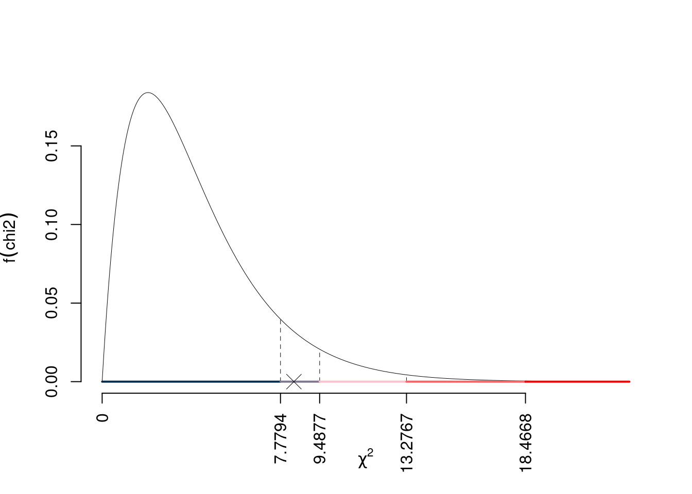
Il \(p_{\text{value}}\) è
\[ p_{\text{value}} = P(\chi^2_{4}>8.36)=0.0792462691956382 \]
Attenzione il calcolo del \(p_\text{value}\) con la distribuzione \(\chi^2\) è puramente illustrativo e non può essere riprodotto senza una calcolatrice statistica adeguata.\[ 0.05 \leq p_\text{value}= 0.07925 < 0.1 \]
Esercizio 6
In uno studio sull’adeguamento alle direttive europee sul green si sono analizzate 150 aziende, sono stati analizzati l’investimento in green (\(X\) espresso in decine migliaia di euro/anno) e l’impatto l’abbattimento di CO2 (misurata in opportuna scala). Qui di seguito le statistiche:
\[\begin{align*} \sum_{i=1}^n x_i &= 530.4519, &\sum_{i=1}^n x_i^2 &= 2196.2171 \\ \sum_{i=1}^n y_i &= 918.9192, &\sum_{i=1}^n y_i^2 &= 5661.4965 \\ \sum_{i=1}^n x_iy_i &= 3151.7789. \\ \end{align*}\]
6.a (Punti 14/103 \(\rightarrow\) 4.21/31) Stimare la previsione per \(x=3.5\) nel modello di regressione dove \(Y\) viene spiegata da \(X\).
\[\begin{eqnarray*} \bar x &=&\frac 1 n\sum_{i=1}^n x_i = \frac {1}{ 150 } 530.4519 = 3.536 \\ \bar y &=&\frac 1 n\sum_{i=1}^n y_i = \frac {1}{ 150 } 918.9192 = 6.126 \\ \hat\sigma_X^2&=&\frac 1 n\sum_{i=1}^n x_i^2-\bar x^2=\frac {1}{ 150 } 2196 - 3.5363 ^2= 2.136 \\ \hat\sigma_Y^2&=&\frac 1 n\sum_{i=1}^n y_i^2-\bar y^2=\frac {1}{ 150 } 5661 - 6.1261 ^2= 0.2139 \\ \text{cov}(X,Y)&=&\frac 1 n\sum_{i=1}^n x_i~y_i-\bar x\bar y=\frac {1}{ 150 } 3152 - 3.5363 \cdot 6.1261 = -0.6522 \\ \hat\beta_1 &=& \frac{\text{cov}(X,Y)}{\hat\sigma_X^2} \\ &=& \frac{ -0.6522 }{ 2.136 } = -0.3054 \\ \hat\beta_0 &=& \bar y - \hat\beta_1 \bar x\\ &=& 6.126 - (-0.3054) \times 3.5363 = 7.206 \end{eqnarray*}\]\[\hat y_{X= 3.5 }=\hat\beta_0+\hat\beta_1 x= 7.206 + (-0.3054) \times 3.5 = 6.137 \]
6.b (Punti 3/103 \(\rightarrow\) 0.9/31) Qual è la percentuale di varianza spiegata dal modello?
\[\begin{eqnarray*} r&=&\frac{\text{cov}(X,Y)}{\sigma_X\sigma_Y}=\frac{ -0.6522 }{ 1.461 \times 0.4625 }= -0.9651 \\r^2&=& 0.9314 > 0.75 \end{eqnarray*}\] Il modello si adatta bene ai dati.
6.c (Punti 2/103 \(\rightarrow\) 0.6/31) Interpretare il diagramma dei residui.
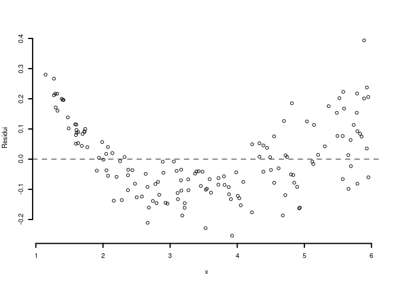
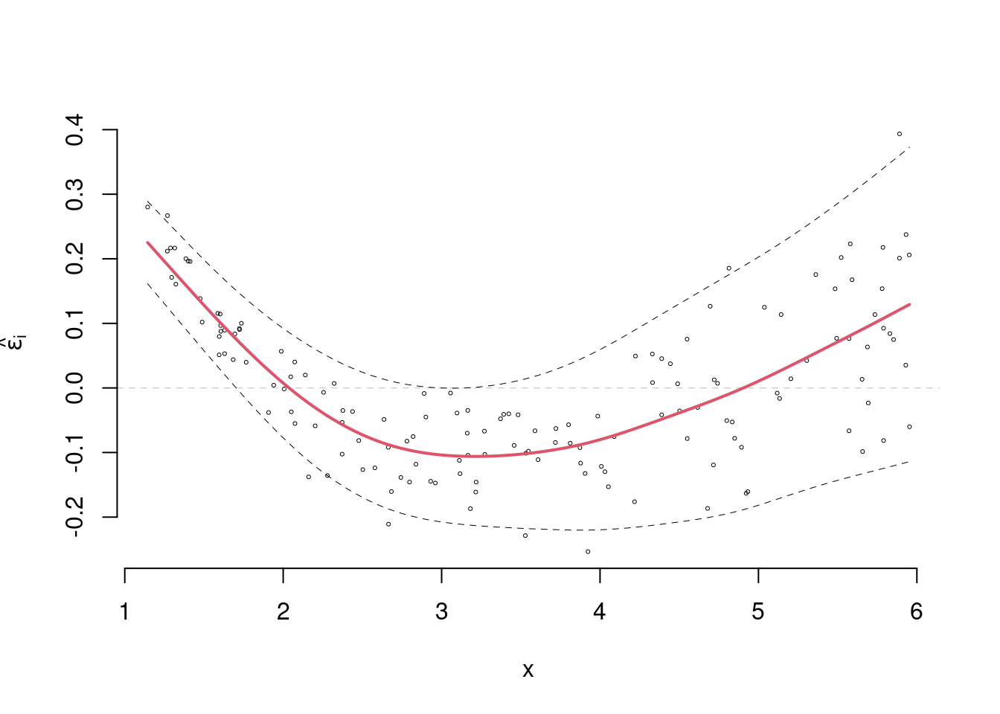
6.d (Punti 2/103 \(\rightarrow\) 0.6/31) Se \(W=- Y\), quanto varrà \(r_{XW}\), coefficiente di correlazione tra \(X\) e \(W\)?
Prova di Statistica 2023/02/16-2
Esercizio 1
Su un campione di \(400\) imprese della provincia di Modena è stato rilevato l’utile dell’ultimo trimestre (espresso in migliaia di euro). Qui di seguito la distribuzione delle frequenze assolute:
| \([\text{x}_j,\) | \(\text{x}_{j+1})\) | \(n_j\) |
|---|---|---|
| -15 | -5 | 17 |
| -5 | -1 | 183 |
| -1 | 1 | 167 |
| 1 | 2 | 33 |
| 400 |
1.a (Punti 14/103 \(\rightarrow\) 4.21/31) Individuare il valore approssimato della mediana.
| \([\text{x}_j,\) | \(\text{x}_{j+1})\) | \(n_j\) | \(f_j\) | \(b_j\) | \(h_j\) | \(F_j\) |
|---|---|---|---|---|---|---|
| -15 | -5 | 17 | 0.043 | 10 | 0.425 | 0.043 |
| -5 | -1 | 183 | 0.458 | 4 | 11.438 | 0.500 |
| -1 | 1 | 167 | 0.418 | 2 | 20.875 | 0.917 |
| 1 | 2 | 33 | 0.082 | 1 | 8.250 | 1.000 |
| 400 | 1.000 | 17 |
\[\begin{eqnarray*} p &=& 0.5 , \text{essendo }F_{ 2 }= 0.5 > 0.5 \Rightarrow j_{ 0.5 }= 2 \\ x_{ 0.5 } &=& x_{\text{inf}; 2 } + \frac{ { 0.5 } - F_{ 1 }} {f_{ 2 }} \cdot b_{ 2 } \\ &=& -5 + \frac {{ 0.5 } - 0.0425 } { 0.458 } \cdot 4 \\ &=& -1 \end{eqnarray*}\] 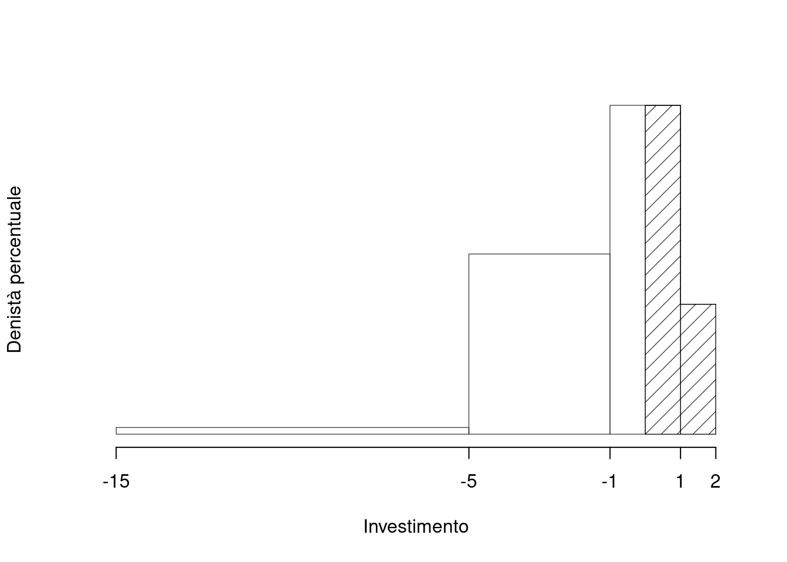
1.b (Punti 3/103 \(\rightarrow\) 0.9/31) Quale è il numero di imprese che hanno un utile maggiore di zero?
\[\begin{eqnarray*} \#(X>0) &=& n\times \frac{((1-0)\times 20.875+0.082\times 100)}{100}\\ &=& 116.5 \end{eqnarray*}\]
1.c (Punti 2/103 \(\rightarrow\) 0.6/31) L’utile medio è pari a \(\bar x=-1.662\) che forma avrà l’istogramma?
1.d (Punti 2/103 \(\rightarrow\) 0.6/31) Qual è la proprietà di linearità della media aritmetica?
Esercizio 2
2.a (Punti 14/103 \(\rightarrow\) 4.21/31) Il numero di telefonate in arrivo nell’ora di punta di un centralino è distribuito come una Poisson di parametro 3.1 (\(X\sim\text{Pois}(\lambda=3.1)\)). Qual è la probabilità di trovare al massimo 3 telefonate (\(X\le 3\))?
\[\begin{eqnarray*} P(X\le 3) &=& \frac{3.1^0}{0!}e^{-3.1}+\frac{3.1^1}{1!}e^{-3.1}+\frac{3.1^2}{2!}e^{-3.1}+\frac{3.1^3}{3!}e^{-3.1}\\ &=& 0.045+0.1397+0.2165+0.2237\\ &=& 0.625\\ \end{eqnarray*}\]
2.b (Punti 3/103 \(\rightarrow\) 0.9/31) Un’urna contiene 4 palline: 2 rosse e 2 bianche. Si estrae seguendo il seguente schema: se esce rossa, rimettiamo la rossa estratta più altre due rosse, se esce bianca rimettiamo la bianca estratta più altre due bianche. Estraiamo con questo schema per tre volte. Calcolare la probabilità di avere tre palline rosse su tre estrazioni.
\[\begin{eqnarray*} E &=& \text{tre rosse consecutive}\\ &=& R_1\cap R_2 \cap R_3\\ P(E) &=& P(R_1)P( R_2|R_1) P( R_3|R_1\cap R_2)\\ &=& \frac 24 \frac 46 \frac 68\\ &=& 0.25 \end{eqnarray*}\]
2.c (Punti 2/103 \(\rightarrow\) 0.6/31) Se \(X\sim N(\mu_X,\sigma_X^2)\) e \(Y\sim N(\mu_Y,\sigma_Y^2)\), \(X\) e \(Y\) indipendenti, come si distribuiscono \(X+Y\) e \(X-Y\)?
2.d (Punti 2/103 \(\rightarrow\) 0.6/31) Siano \(A\) e \(B\) due eventi diversi dal vuoto tali che \(A\cap B=\emptyset\), motivare perché \(A\) e \(B\) non possono essere indipendenti.
Esercizio 3
3.a (Punti 14/103 \(\rightarrow\) 4.21/31) Un’urna contiene 2 palline numerate con \(\fbox{0}\), 3 numerate con \(\fbox{1}\) e 2 numerate con \(\fbox{2}\). Si estrae 100 volte con reinserimento. Qual è la probabilità che la somma delle 100 estrazioni sia compresa tra 80 e 120?
\[\begin{eqnarray*} \mu &=& E(X_i) = \sum_{x\in S_X}x P(X=x)\\ &=& 0 \frac { 2 }{ 7 }+ 1 \frac { 3 }{ 7 }+ 2 \frac { 2 }{ 7 } \\ &=& 1 \\ \sigma^2 &=& V(X_i) = \sum_{x\in S_X}x^2 P(X=x)-\mu^2\\ &=&\left( 0 ^2\frac { 2 }{ 7 }+ 1 ^2\frac { 3 }{ 7 }+ 2 ^2\frac { 2 }{ 7 } \right)-( 1 )^2\\ &=& 0.571 \end{eqnarray*}\] Teorema del Limite Centrale (somma VC qualunque)
Siano \(X_1\),…,\(X_n\), \(n=100\) VC IID, tc \(E(X_i)=\mu=1\) e \(V(X_i)=\sigma^2=0.571,\forall i\), posto: \[ S_n = X_1 + ... + X_n \] allora:\[\begin{eqnarray*} S_n & \mathop{\sim}\limits_{a}& N(n\mu,n\sigma^2) \\ &\sim & N(100\cdot1,100\cdot0.571) \\ &\sim & N(100,57.1) \end{eqnarray*}\]\[\begin{eqnarray*} P( 80 < S_n \leq 120 ) &=& P\left( \frac { 80 - 100 }{\sqrt{ 57.1 }} < \frac { S_n - n\mu }{ \sqrt{n\sigma^2} } \leq \frac { 120 - 100 }{\sqrt{ 57.1 }}\right) \\ &=& P\left( -2.65 < Z \leq 2.65 \right) \\ &=& \Phi( 2.65 )-\Phi( -2.65 )\\ &=& \Phi( 2.65 )-(1-\Phi( 2.65 )) \\ &=& 0.996 -(1- 0.996 ) \\ &=& 0.992 \end{eqnarray*}\]
Esercizio 4
4.a (Punti 3/103 \(\rightarrow\) 0.9/31) Sia \(\hat \pi\) lo stimatore di massima verosimiglianza di \(\pi\) del modello Binomiale. \[\begin{eqnarray*} \hat\pi &=& \frac 1n\sum_{i=1}^nx_i\\ \end{eqnarray*}\] Ricavare la sua varianza e metterla in relazione con il suo \(MSE\) (Mean Squared Error).
4.b (Punti 3/103 \(\rightarrow\) 0.9/31) Sia \(h\) uno stimatore per \(\theta\). Cosa significa dire che \(h\) è consistente?
4.c (Punti 3/103 \(\rightarrow\) 0.9/31) Definire la significatività e la potenza di un test.
4.d (Punti 3/103 \(\rightarrow\) 0.9/31) In uno studio sull’effetto del titolo di studio sulla percezione del benessere, su un gruppo di 238 intervistati è stato chiesto il titolo di studio (basso: “al massimo le scuole medie inferiori”, medio: “Diploma di scuola superiore”, alto: “almeno il Diploma di Laurea”) e la percezione del proprio benessere (basso, medio, alto). Qui di seguito i dati:
|
Benessere
|
|||
|---|---|---|---|
| basso | medio | alto | |
| Titolo di studio | |||
| basso | 18 | 26 | 35 |
| medio | 21 | 35 | 30 |
| alto | 20 | 38 | 15 |
Si è testata l’indipendenza tra il titolo di studio e la percezione del benessere e il test ha restituito \(p_\text{value}=0.04\). Possiamo dire che titolo di studio e benessere sono indipendenti? Perché?
Esercizio 5
5.a (Punti 14/103 \(\rightarrow\) 4.21/31) In uno studio comparativo tra i redditi, nel comune \(A\) si è rilevato il reddito di 12 individui e si è osservata una media pari 27 mila euro con una standard deviation pari a 4.2 mila euro , mentre nel comune \(B\) si è rilevato il reddito di 25 individui e si è osservata una media pari 24 mila euro con una standard deviation pari a 3.1 mila euro. Sotto ipotesi di eterogeneità, testare l’ipotesi che il reddito medio sia uguale nei due comuni, contro l’alternativa che sia maggiore nel comune \(A\).
Test \(t\) per due medie, (eterogeneità)
\(\fbox{A}\) FORMULAZIONE DELLE IPOTESI
\[\begin{cases} H_0: \mu_\text{A} = \mu_\text{B} \\ H_1: \mu_\text{A} > \mu_\text{B} \end{cases}\]
\(\fbox{B}\) SCELTA E CALCOLO STATISTICA-TEST, \(T\) \[ S^2_\text{ 1 }=\frac{n_\text{ 1 }}{n_\text{ 1 }-1}\hat\sigma^2_\text{ 1 }=\frac{ 12 }{ 12 -1} 4.2 ^2= 19.2 \qquad S^2_\text{ 2 }=\frac{n_\text{ 2 }}{n_\text{ 2 }-1}\hat\sigma^2_\text{ 2 }=\frac{ 25 }{ 25 -1} 3.1 ^2= 10 \]
\[\begin{eqnarray*} \frac{\hat\mu_\text{ 1 } - \hat\mu_\text{ 2 }} {\sqrt{\frac {S^2_\text{ 1 }}{n_\text{ 1 }}+\frac {S^2_\text{ 2 }}{n_\text{ 2 }}}}&\sim&t_{n_\text{ 1 }+n_\text{ 2 }-2}\\ t_{\text{obs}} &=& \frac{ ( 27 - 24 )} {\sqrt{\frac{ 19.2 }{ 12 }+\frac{ 10 }{ 25 }}} = 2.12 \, . \end{eqnarray*}\]
\(\fbox{C}\) CONCLUSIONE
Consideriamo \(\alpha=0.1, 0.05, 0.01, 0.001\)
I valori critici sono
\(t_{37-2;0.1}=1.3062\); \(t_{37-2;0.05}=1.6896\); \(t_{37-2;0.01}=2.4377\); \(t_{37-2;0.001}=3.34\)
Siccome \(1.6896<t_\text{obs}=2.1192<2.4377\), quindi rifiuto \(H_0\) al 5%,
\(0.01<p_\text{value}<0.05\), significativo \(\fbox{*}\).
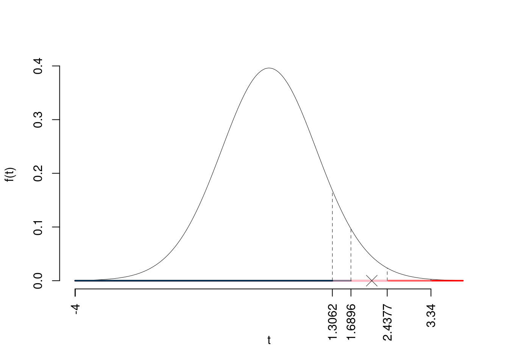
Il \(p_{\text{value}}\) è
\[ p_{\text{value}} = P(T_{37-2}>2.12)=0.020622 \]
Attenzione il calcolo del \(p_\text{value}\) con la \(T\) è puramente illustrativo e non può essere riprodotto senza una calcolatrice statistica adeguata.\[ 0.01 < p_\text{value}= 0.020622 \leq 0.05 \]
Esercizio 6
In uno studio sull’adeguamento alle direttive europee sul green si sono analizzate 150 aziende, sono stati analizzati l’investimento in green (\(X\) espresso in decine migliaia di euro/anno) e i risparmi globali \(Y\) (espresso in decine migliaia di euro/anno). Qui di seguito le statistiche:
\[\begin{align*} \sum_{i=1}^n x_i &= 530.452 &\sum_{i=1}^n x_i^2 &= 2196.221 &\sum_{i=1}^n x_i y_i &= 5970.851\\ \sum_{i=1}^n y_i &= 1627.872 & \sum_{i=1}^n y_i^2 &= 17854.072 & \end{align*}\]
6.a (Punti 14/103 \(\rightarrow\) 4.21/31) Stimare la previsione per \(x=1.5\) nel modello di regressione dove \(Y\) viene spiegata da \(X\).
\[\begin{eqnarray*} \bar x &=&\frac 1 n\sum_{i=1}^n x_i = \frac {1}{ 150 } 530.4519 = 3.54 \\ \bar y &=&\frac 1 n\sum_{i=1}^n y_i = \frac {1}{ 150 } 1627.8723 = 10.9 \\ \hat\sigma_X^2&=&\frac 1 n\sum_{i=1}^n x_i^2-\bar x^2=\frac {1}{ 150 } 2196 - 3.5363 ^2= 2.14 \\ \hat\sigma_Y^2&=&\frac 1 n\sum_{i=1}^n y_i^2-\bar y^2=\frac {1}{ 150 } 17854 - 10.8525 ^2= 1.25 \\ \text{cov}(X,Y)&=&\frac 1 n\sum_{i=1}^n x_i~y_i-\bar x\bar y=\frac {1}{ 150 } 5971 - 3.5363 \cdot 10.8525 = 1.43 \\ \hat\beta_1 &=& \frac{\text{cov}(X,Y)}{\hat\sigma_X^2} \\ &=& \frac{ 1.43 }{ 2.14 } = 0.668 \\ \hat\beta_0 &=& \bar y - \hat\beta_1 \bar x\\ &=& 10.9 - 0.6684 \times 3.5363 = 8.49 \end{eqnarray*}\]\[\hat y_{X= 1.5 }=\hat\beta_0+\hat\beta_1 x= 8.49 + 0.6684 \times 1.5 = 9.49 \]
6.b (Punti 3/103 \(\rightarrow\) 0.9/31) Il modello si adatta bene ai dati?
\[\begin{eqnarray*} r&=&\frac{\text{cov}(X,Y)}{\sigma_X\sigma_Y}=\frac{ 1.43 }{ 1.46 \times 1.12 }= 0.873 \\r^2&=& 0.763 > 0.75 \end{eqnarray*}\] Il modello si adatta bene ai dati.
6.c (Punti 2/103 \(\rightarrow\) 0.6/31) Interpretare il diagramma dei residui.
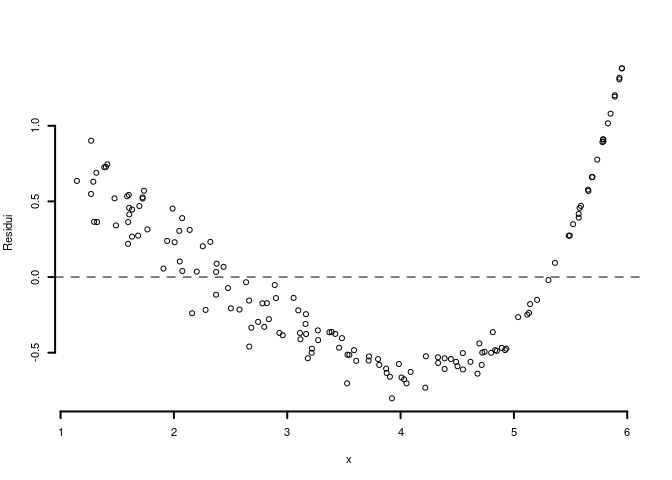
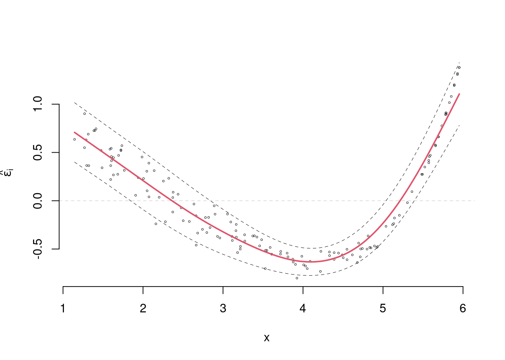
6.d (Punti 2/103 \(\rightarrow\) 0.6/31) Se \(V= 1 - Y\) e \(W= 1 - X\) quanto varrà \(r_{VW}\), coefficiente di correlazione tra \(V\) e \(W\)?
Prova di Statistica 2023/02/16-3
Esercizio 1
Su un campione di \(50\) imprese della provincia di Modena è stato rilevato l’utile dell’ultimo trimestre (espresso in migliaia di euro). Qui di seguito la distribuzione delle frequenze cumulate:
| \([\text{x}_j,\) | \(\text{x}_{j+1})\) | \(F_j\) |
|---|---|---|
| -2 | -1 | 0.14 |
| -1 | 1 | 0.62 |
| 1 | 5 | 0.86 |
| 5 | 15 | 1.00 |
1.a (Punti 14/103 \(\rightarrow\) 4.21/31) Disegnare l’istogramma di densità percentuale.
| \([\text{x}_j,\) | \(\text{x}_{j+1})\) | \(n_j\) | \(f_j\) | \(b_j\) | \(h_j\) | \(F_j\) |
|---|---|---|---|---|---|---|
| -2 | -1 | 7 | 0.14 | 1 | 14.0 | 0.14 |
| -1 | 1 | 24 | 0.48 | 2 | 24.0 | 0.62 |
| 1 | 5 | 12 | 0.24 | 4 | 6.0 | 0.86 |
| 5 | 15 | 7 | 0.14 | 10 | 1.4 | 1.00 |
| 50 | 1.00 | 17 |
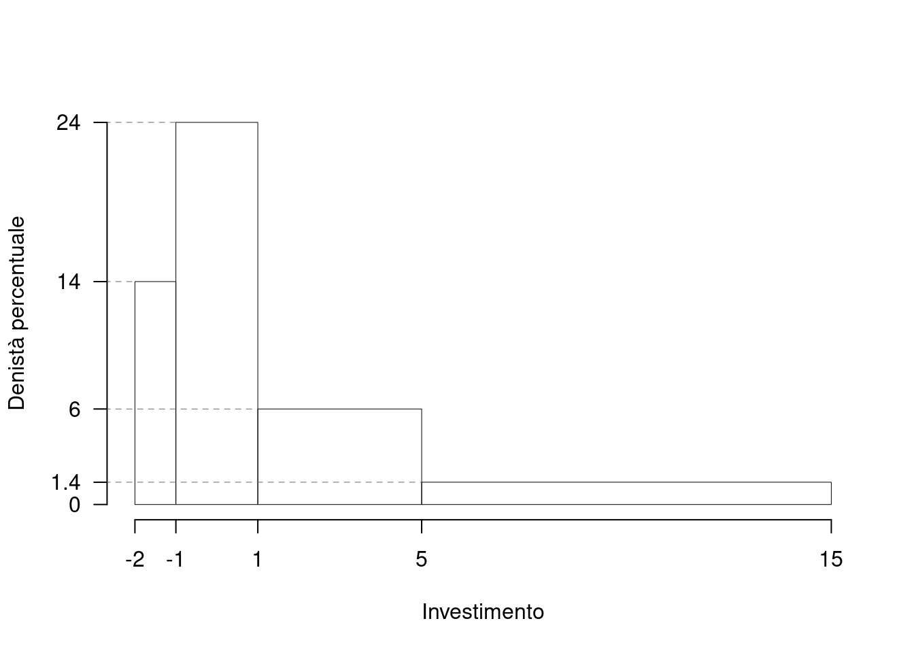
1.b (Punti 3/103 \(\rightarrow\) 0.9/31) Quante imprese hanno un utile negativo?
\[\begin{eqnarray*} \#(X<0) &=& n (f_1 + 1\cdot h_2/100)\\ &=& 7 + 12\\ &=& 19\\ \end{eqnarray*}\]
1.c (Punti 2/103 \(\rightarrow\) 0.6/31) Che relazione dobbiamo aspettarci tra media e mediana?
1.d (Punti 2/103 \(\rightarrow\) 0.6/31) La varianza dei dati è pari a \(\hat\sigma^2=15.1386\), se gli utili di ogni impresa aumentassero del 3%, quanto varrebbe la varianza dei dati così trasformati?
\[\sigma_Y^2=(1.03)^2\sigma_X^2=16.0606\]
Esercizio 2
2.a (Punti 14/103 \(\rightarrow\) 4.21/31) Si lancia una moneta perfetta 8 volte. Qual è la probabilità di avere un numero di volte Testa maggiore o uguale a 6 su 8 lanci?
\[\begin{eqnarray*} X &\sim&\text{Bin}(8;0.5)\\ P(X\ge 6) &=& P(X=6)+p(X=7)+P(X=8)\\ &=& \binom{8}{6} 0.5^8 + \binom{8}{7} 0.5^8 +\binom{8}{8} 0.5^8\\ &=& 28\cdot 0.0039 + 8\cdot 0.0039 + 1\cdot 0.0039 \\ &=& 0.1445 \\ \end{eqnarray*}\]
2.b (Punti 3/103 \(\rightarrow\) 0.9/31) Sia \(Z\sim N(0,1)\) e siano \(A=\{Z<0\}\) e \(B=\{Z<1\}\). Calcolare \(P(A|B)\)
\[\begin{eqnarray*} P(B) &=& \Phi(1)\\ &=& 0.8413\\ P(A\cap B) &=& P(Z<0)\\ &=& \Phi(0)\\ &=& 0.5\\ P(A|B) &=& \frac{P(A\cap B)}{P(B)}\\ &=& \frac{0.5}{0.8413}\\ &=& 0.5943 \end{eqnarray*}\]
2.c (Punti 2/103 \(\rightarrow\) 0.6/31) Se \(X\sim\text{Pois} (n)\), a cosa tende \(X\) se \(n\) diverge?
Se \(n\) diverge allora \(X\) tende ad un Normale di media \(n\) e varianza \(n\) \[ X\mathop\sim_a N(n,n) \]
2.d (Punti 2/103 \(\rightarrow\) 0.6/31) Sia \(X\sim N(10,1)\) e sia \(F\) la sua funzione di ripartizione. Disegnare approssimativamente \(F(x)\) per \(x\) che varia tra 6 e 14.
Esercizio 3
3.a (Punti 14/103 \(\rightarrow\) 4.21/31) Un’urna conteni tre palline rosse, due bianche e una nera. Si estrae \(n=100\) volte con reintroduzione. Qual è la probabilità che la proporzione di palline rosse sia minore di 0.45?
Teorema del Limite Centrale (proporzione)
Siano \(X_1\),…,\(X_n\), \(n=100\) VC IID, tc \(X_i\sim\text{Ber}(\pi=0.5)\)\(,\forall i\), posto: \[ \hat\pi=\frac{S_n}n = \frac{X_1 + ... + X_n}n \] allora:\[\begin{eqnarray*} \hat\pi & \mathop{\sim}\limits_{a}& N(\pi,\pi(1-\pi)/n) \\ &\sim & N\left(0.5,\frac{0.5\cdot(1-0.5)}{100}\right) \\ &\sim & N(0.5,0.0025) \end{eqnarray*}\]\[\begin{eqnarray*} P( \hat\pi < 0.45 ) &=& P\left( \frac { \hat\pi - \pi }{ \sqrt{\pi(1-\pi)/n} } < \frac { 0.45 - 0.5 }{\sqrt{ 0.0025 }} \right) \\ &=& P\left( Z < -1 \right) \\ &=& 1-\Phi( 1 ) \\ &=& 0.1587 \end{eqnarray*}\]
Esercizio 4
4.a (Punti 3/103 \(\rightarrow\) 0.9/31) Siano \(\hat \mu\) e \(\hat\sigma^2\) gli stimatori di massima verosimiglianza di \(\mu\) e \(\sigma^2\) del modello di Normale. \[\begin{eqnarray*} \hat\mu &=& \frac 1n\sum_{i=1}^nx_i \qquad \hat\sigma^2 = \frac 1n\sum_{i=1}^n(x_i-\hat\mu)^2\\ \end{eqnarray*}\] Ricavare la varianza di \(\hat\mu\) e metterla in relazione con il suo \(MSE\) (Mean Squared Error).
4.b (Punti 3/103 \(\rightarrow\) 0.9/31) Se \(h_1\) e \(h_2\) sono due stimatori per \(\theta\) cosa significa dire che \(h_1\) è più efficiente di \(h_2\)?
4.c (Punti 3/103 \(\rightarrow\) 0.9/31) Definire gli errori di primo e secondo tipo e le relativa probabilità.
4.d (Punti 3/103 \(\rightarrow\) 0.9/31) Una moneta, che non sappiamo se è perfetta oppure no, viene lanciata 40 volte. Abbiamo osservato 14 volte testa su 40 lanci. Posto \(\pi\) la probabilità che la moneta mostri testa, si è testato \[ \begin{cases} H_0:\pi=\frac 12\\ H_1:\pi\ne\frac 12 \end{cases} \] ed è risultato \(p_\text{value}=0.08\). Possiamo concludere che la moneta sia truccata?
Esercizio 5
5.a (Punti 3/103 \(\rightarrow\) 0.9/31) In uno studio sui redditi, nel comune \(A\) si è rilevato il reddito di \(n=35\) individui e si è osservata una media pari \(68\) mila euro con una standard deviation pari a \(5\) mila euro. Costruire un intervallo di confidenza al 95% per il reddito medio \(\mu\).
\(1-\alpha =0.95\) e quindi \(\alpha=0.05\rightarrow \alpha/2=0.025\)
\[ S =\sqrt{\frac {n}{n-1}}\cdot\hat\sigma = \sqrt{\frac { 35 }{ 34 }}\cdot 5 = 5.073 \] \[\begin{eqnarray*} Idc: & & \hat\mu \pm t_{n-1;\alpha/2} \times \frac{S}{\sqrt{n}} \\ & & 68 \pm 2.032 \times \frac{ 5.073 }{\sqrt{ 35 }} \\ & & 68 \pm 2.032 \times 0.8575 \\ & & [ 66.26 , 69.74 ] \end{eqnarray*}\]
5.b (Punti 11/103 \(\rightarrow\) 3.31/31) Un’indagine analoga, svolta sull’intera regione, ha mostrato un reddito medio pari a \(\mu_0=71\). Testare l’ipotesi che nel comune \(A\) il reddito medio sia uguale a quello regionale contro l’alternativa che sia diverso.
Test \(t\) per una media, varianza incognita
\(\fbox{A}\) FORMULAZIONE DELLE IPOTESI
\[\begin{cases} H_0: \mu = \mu_0=71 \\ H_1: \mu \neq \mu_0=71 \end{cases}\]
\[\begin{eqnarray*} S &=& \sqrt{\frac{n} {n-1}}\ \widehat{\sigma} = \sqrt{\frac{ 35 } { 35 -1}} \times 5 = 5.073 \end{eqnarray*}\] \[\begin{eqnarray*} \frac{\hat\mu - \mu_{0}} {S/\,\sqrt{n}}&\sim&t_{n-1}\\ t_{\text{obs}} &=& \frac{ ( 68 - 71 )} { 5.073 /\sqrt{ 35 }} = -3.499 \, . \end{eqnarray*}\]
\(\fbox{C}\) CONCLUSIONE
Siccome \(H_1\) è bilaterale, considereremo \(\alpha/2\), anziché \(\alpha\)
\(\alpha=0.1, 0.05, 0.01, 0.001\) e quindi \(\alpha/2=0.05, 0.025, 0.005, 0.0005\)
I valori critici sono
\(t_{35-1;0.05}=1.6909\); \(t_{35-1;0.025}=2.0322\); \(t_{35-1;0.005}=2.7284\); \(t_{35-1;0.0005}=3.6007\)
Siccome \(2.7284<|t_\text{obs}|=3.4986<3.6007\), quindi rifiuto \(H_0\) all’1%,
\(0.001<p_\text{value}<0.01\), molto significativo \(\fbox{**}\).
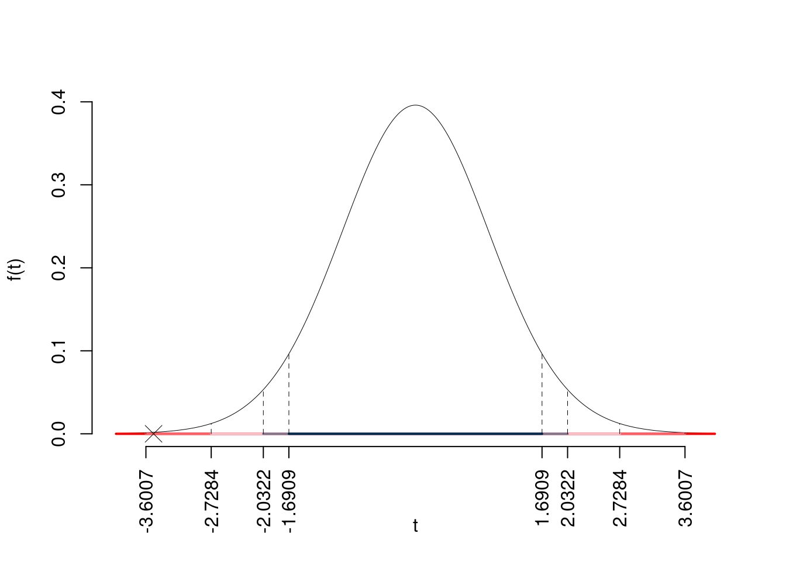
Il \(p_{\text{value}}\) è
\[ p_{\text{value}} = P(|T_{35-1}|>|-3.5|)=2P(T_{35-1}>3.5)=0.001326 \]
Attenzione il calcolo del \(p_\text{value}\) con la \(T\) è puramente illustrativo e non può essere riprodotto senza una calcolatrice statistica adeguata.\[ 0.001 < p_\text{value}= 0.001326 \leq 0.01 \]
Esercizio 6
In uno studio sull’adeguamento alle direttive europee sul green si sono analizzate 150 aziende, sono stati analizzati l’investimento in green (\(X\) espresso in decine migliaia di euro/anno) e le agevolazioni fiscali \(Y\) (espressa in decine migliaia di euro/anno). Qui di seguito le statistiche:
\[\begin{align*} \sum_{i=1}^n x_i &= 557.8352, &\sum_{i=1}^n x_i^2 &= 2382.5782 \\ \sum_{i=1}^n y_i &= 1641.2782, &\sum_{i=1}^n y_i^2 &= 18139.2659 \\ \sum_{i=1}^n x_iy_i &= 6307.6359. \\ \end{align*}\]
6.a (Punti 14/103 \(\rightarrow\) 4.21/31) Stimare la previsione per \(x=1.5\) nel modello di regressione dove \(Y\) viene spiegata da \(X\).
\[\begin{eqnarray*} \bar x &=&\frac 1 n\sum_{i=1}^n x_i = \frac {1}{ 150 } 557.8352 = 3.719 \\ \bar y &=&\frac 1 n\sum_{i=1}^n y_i = \frac {1}{ 150 } 1641.2782 = 10.94 \\ \hat\sigma_X^2&=&\frac 1 n\sum_{i=1}^n x_i^2-\bar x^2=\frac {1}{ 150 } 2383 - 3.7189 ^2= 2.054 \\ \hat\sigma_Y^2&=&\frac 1 n\sum_{i=1}^n y_i^2-\bar y^2=\frac {1}{ 150 } 18139 - 10.9419 ^2= 1.204 \\ \text{cov}(X,Y)&=&\frac 1 n\sum_{i=1}^n x_i~y_i-\bar x\bar y=\frac {1}{ 150 } 6308 - 3.7189 \cdot 10.9419 = 1.359 \\ \hat\beta_1 &=& \frac{\text{cov}(X,Y)}{\hat\sigma_X^2} \\ &=& \frac{ 1.359 }{ 2.054 } = 0.6619 \\ \hat\beta_0 &=& \bar y - \hat\beta_1 \bar x\\ &=& 10.94 - 0.6619 \times 3.7189 = 8.48 \end{eqnarray*}\]\[\hat y_{X= 1.5 }=\hat\beta_0+\hat\beta_1 x= 8.48 + 0.6619 \times 1.5 = 9.473 \]
6.b (Punti 3/103 \(\rightarrow\) 0.9/31) Calcolare e interpretare \(R^2\).
\[\begin{eqnarray*} r&=&\frac{\text{cov}(X,Y)}{\sigma_X\sigma_Y}=\frac{ 1.359 }{ 1.433 \times 1.097 }= 0.8643 \\r^2&=& 0.747 < 0.75 \end{eqnarray*}\] Il modello non si adatta bene ai dati.
6.c (Punti 2/103 \(\rightarrow\) 0.6/31) Interpretare il qq-plot dei residui. 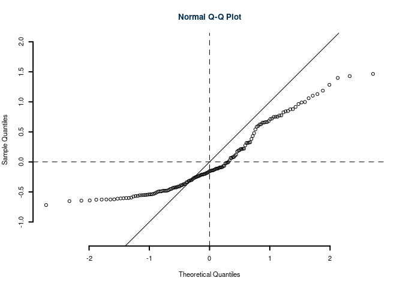
6.d (Punti 2/103 \(\rightarrow\) 0.6/31) Se \(V=1+ Y\) e \(W=1-X\), quanto varrà \(r_{VW}\), il coefficiente di correlazione tra \(V\) e \(W\)?
Prova di Statistica 2023/06/08-1
Esercizio 1
Su un campione di \(160\) famiglie della provincia di Modena è stata rilevata la spesa annua dedicata alle vacanze, espressa in migliaia di euro. Qui di seguito la distribuzione delle frequenze assolute:
| \([\text{x}_j,\) | \(\text{x}_{j+1})\) | \(n_j\) |
|---|---|---|
| 0.0 | 1.5 | 11 |
| 1.5 | 3.0 | 63 |
| 3.0 | 5.0 | 76 |
| 5.0 | 10.0 | 10 |
| 160 |
1.a (Punti 14/103 \(\rightarrow\) 4.21/31) Disegnare l’istogramma di densità percentuale.
| \([\text{x}_j,\) | \(\text{x}_{j+1})\) | \(n_j\) | \(f_j\) | \(b_j\) | \(h_j\) | \(F_j\) |
|---|---|---|---|---|---|---|
| 0.0 | 1.5 | 11 | 0.0688 | 1.5 | 4.583 | 0.0688 |
| 1.5 | 3.0 | 63 | 0.3938 | 1.5 | 26.250 | 0.4625 |
| 3.0 | 5.0 | 76 | 0.4750 | 2.0 | 23.750 | 0.9375 |
| 5.0 | 10.0 | 10 | 0.0625 | 5.0 | 1.250 | 1.0000 |
| 160 | 1.0000 | 10.0 |
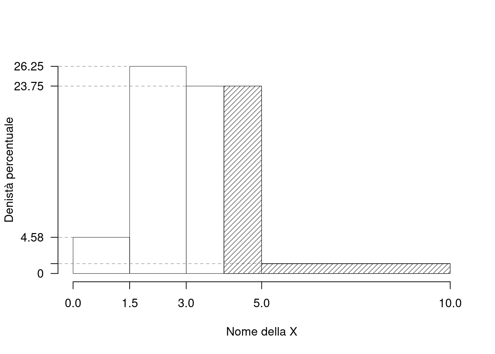
1.b (Punti 3/103 \(\rightarrow\) 0.9/31) Qual è la percentuale di famiglie con spesa superiore a 4 mila euro?
\[\begin{eqnarray*} \%(X> 4 ) &=& ( 5 - 4 )\times h_{ 3 }+ f_{ 4 }\times 100 \\ &=& ( 1 )\times 23.75 + ( 0.0625 )\times 100 \\ &=& 0.3 \times(100)\\ \#(X> 4 ) &\approx& 48 \end{eqnarray*}\]
1.c (Punti 2/103 \(\rightarrow\) 0.6/31) Che relazione dobbiamo attenderci tra moda, mediana e media?
1.d (Punti 2/103 \(\rightarrow\) 0.6/31) Cosa significa che la media aritmetica rende zero la somma degli scarti?
Esercizio 2
Siano \(X_A\sim \text{Pois}(1.5)\) e sia \(X_B\sim \text{Pois}(1.5)\), \(X_A\) e \(X_B\) indipendenti. Posto \(A=\{X_A\le 1\}\) e \(B=\{X_B>2\}\)
2.a (Punti 14/103 \(\rightarrow\) 4.21/31) Calcolare la probabilità di \(A\cup B\).
\[\begin{eqnarray*} P( X_A \leq 1 ) &=& \frac{ 1.5 ^{ 0 }}{ 0 !}e^{- 1.5 }+\frac{ 1.5 ^{ 1 }}{ 1 !}e^{- 1.5 } \\ &=& 0.2231+0.3347 \\ &=& 0.5578 \end{eqnarray*}\] \[\begin{eqnarray*} P( X_B \geq 3 ) &=& 1-P( X_B < 3 ) \\ &=& 1-\left( \frac{ 1.5 ^{ 0 }}{ 0 !}e^{- 1.5 }+\frac{ 1.5 ^{ 1 }}{ 1 !}e^{- 1.5 }+\frac{ 1.5 ^{ 2 }}{ 2 !}e^{- 1.5 } \right)\\ &=& 1-( 0.2231+0.3347+0.251 )\\ &=& 1- 0.8088 \\ &=& 0.1912 \end{eqnarray*}\] \[\begin{eqnarray*} P(A\cup B) &=& P(A)+P(B)-P(A\cap B)\\ &=& 0.5578+0.1912-0.1066\\ &=& 0.6423 \end{eqnarray*}\]
2.b (Punti 3/103 \(\rightarrow\) 0.9/31) Calcolare la probabilità che solo uno dei due eventi \(A\) oppure \(B\) sia vero.
2.c (Punti 2/103 \(\rightarrow\) 0.6/31) Calcolare valore atteso e varianza di \(X_A-X_B\).
2.d (Punti 2/103 \(\rightarrow\) 0.6/31) Sia \(X\sim\text{Ber}(\pi=0.4)\). Disegnare la sua funzione di ripartizione.
Esercizio 3
3.a (Punti 14/103 \(\rightarrow\) 4.21/31) Un’urna contiene 3 palline Rosse, 3 Bianche e 4 Blu. Si estrae senza reintroduzione per \(n=81\) volte. Calcolare la probabilità che la proporzione di palline Blu sia maggiore di 0.3.
Teorema del Limite Centrale (proporzione)
Siano \(X_1\),…,\(X_n\), \(n=81\) VC IID, tc \(X_i\sim\text{Ber}(\pi=0.4)\)\(,\forall i\), posto: \[ \hat\pi=\frac{S_n}n = \frac{X_1 + ... + X_n}n \] allora:\[\begin{eqnarray*} \hat\pi & \mathop{\sim}\limits_{a}& N(\pi,\pi(1-\pi)/n) \\ &\sim & N\left(0.4,\frac{0.4\cdot(1-0.4)}{81}\right) \\ &\sim & N(0.4,0.002963) \end{eqnarray*}\]\[\begin{eqnarray*} P( \hat\pi > 0.3 ) &=& P\left( \frac { \hat\pi - \pi }{ \sqrt{\pi(1-\pi)/n} } > \frac { 0.3 - 0.4 }{\sqrt{ 0.002963 }} \right) \\ &=& P\left( Z > -1.84 \right) \\ &=& 1-P(Z< -1.84 )\\ &=& 1-(1-\Phi( 1.84 )) \\ &=& 0.9671 \end{eqnarray*}\]
Esercizio 4
4.a (Punti 3/103 \(\rightarrow\) 0.9/31) Siano \(\hat \mu\) e \(\hat\sigma^2\) gli stimatori di massima verosimiglianza di \(\mu\) e \(\sigma^2\) del modello di Normale. \[\begin{eqnarray*} \hat\mu &=& \frac 1n\sum_{i=1}^nx_i \qquad \hat\sigma^2 = \frac 1n\sum_{i=1}^n(x_i-\hat\mu)^2\\ \end{eqnarray*}\] Ricavare lo standard error stimato di \(\hat\mu\).
4.b (Punti 3/103 \(\rightarrow\) 0.9/31) Se \(h_1\) e \(h_2\) sono due stimatori per \(\theta\) tale per cui \(MSE(h_1)=1.2\), e \(MSE(h_2)=2.3\), quale dei due è più efficiente e perché?
4.c (Punti 3/103 \(\rightarrow\) 0.9/31) Definire gli errori di primo e secondo tipo e le relative probabilità.
4.d (Punti 3/103 \(\rightarrow\) 0.9/31) Una moneta, che non sappiamo se è perfetta oppure no, viene lanciata 80 volte. Abbiamo osservato 28 volte testa su 80 lanci. Posto \(\pi\) la probabilità che la moneta mostri testa, si è testato \[ \begin{cases} H_0:\pi=\frac 12\\ H_1:\pi\ne\frac 12 \end{cases} \] ed è risultato \(p_\text{value}=0.009683\). Possiamo concludere che la moneta sia truccata?
Esercizio 5
In uno studio sull’efficacia dell’investimento pubblicitario sono stati rilevati, per \(n=50\) aziende si sono rilevati l’incremento di spesa in pubblicità (\(X\)) e l’incremento di utile (\(Y\)) nell’ultimo quinquennio. Si osservano le seguenti statistiche, \(\sum_{i=1}^{50}x_i=690.2238\), \(\sum_{i=1}^{50}y_i=360.9573\), \(\sum_{i=1}^{50}x_i^2=13373.9618\), \(\sum_{i=1}^{50}y_i^2=3864.9015\) e \(\sum_{i=1}^{50}x_iy_i=6692.1269\).
5.a (Punti 14/103 \(\rightarrow\) 4.21/31) Stimare il modello di regressione dove \(Y\) viene spiegata da \(X\).
\[\begin{eqnarray*} \bar x &=&\frac 1 n\sum_{i=1}^n x_i = \frac {1}{ 50 } 690.2239 = 13.8 \\ \bar y &=&\frac 1 n\sum_{i=1}^n y_i = \frac {1}{ 50 } 360.9573 = 7.219 \\ \hat\sigma_X^2&=&\frac 1 n\sum_{i=1}^n x_i^2-\bar x^2=\frac {1}{ 50 } 13374 - 13.8045 ^2= 76.92 \\ \hat\sigma_Y^2&=&\frac 1 n\sum_{i=1}^n y_i^2-\bar y^2=\frac {1}{ 50 } 3865 - 7.2191 ^2= 25.18 \\ \text{cov}(X,Y)&=&\frac 1 n\sum_{i=1}^n x_i~y_i-\bar x\bar y=\frac {1}{ 50 } 6692 - 13.8045 \cdot 7.2191 = 34.19 \\ \hat\beta_1 &=& \frac{\text{cov}(X,Y)}{\hat\sigma_X^2} \\ &=& \frac{ 34.19 }{ 76.92 } = 0.4445 \\ \hat\beta_0 &=& \bar y - \hat\beta_1 \bar x\\ &=& 7.219 - 0.4445 \times 13.8045 = 1.084 \end{eqnarray*}\]
5.b (Punti 3/103 \(\rightarrow\) 0.9/31) Qual è la percentuale di varianza spiegata dal modello?
\[\begin{eqnarray*} r&=&\frac{\text{cov}(X,Y)}{\sigma_X\sigma_Y}=\frac{ 34.19 }{ 8.77 \times 5.018 }= 0.7768 \\r^2&=& 0.6034 < 0.75 \end{eqnarray*}\] Il modello non si adatta bene ai dati.
5.c (Punti 14/103 \(\rightarrow\) 4.21/31) Testare l’ipotesi che l’intercetta sia uguale a zero contro l’alternativa che sia diversa da zero.
\(\fbox{A}\) FORMULAZIONE DELLE IPOTESI
\[\begin{cases} H_0: \beta_0 = \beta_{0;H_0}=0 \\ H_1: \beta_0 \neq \beta_{0;H_0}=0 \end{cases}\]
\(\fbox{B}\) SCELTA E CALCOLO STATISTICA-TEST, \(T\) Test su un coefficiente di regressione: \(\Rightarrow\) t-Test.
\[\begin{eqnarray*} \frac{\hat\beta_{ 0 } - \beta_{ 0 ;H_0}} {\widehat{SE(\hat\beta_{ 0 })}}&\sim&t_{n-2}\\ t_{\text{obs}} &=& \frac{ ( 1.084 - 0 )} { 0.8506 } = 1.274 \, . \end{eqnarray*}\]
\(\fbox{C}\) CONCLUSIONE
La siginficatitività è \(\alpha=0.05\), dalle tavole osserviamo \(t_{50-2;0.025}=2.0106\).
Essendo \(|t_\text{obs}|=1.2739<t_{50-2;0.025}=2.0106\) allora non rifiuto \(H_0\) al 5%.
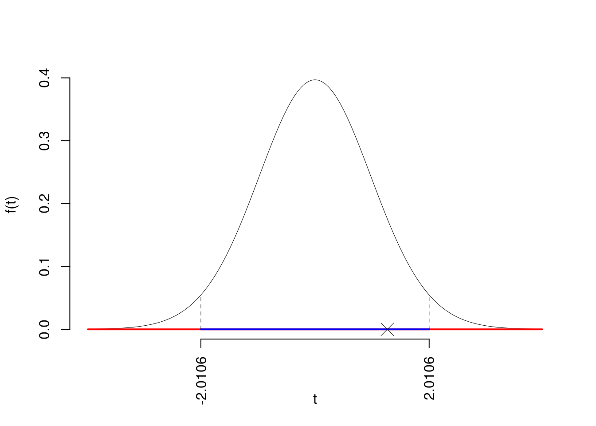
Il \(p_{\text{value}}\) è
\[ p_{\text{value}} = P(|T_{50-2}|>|1.27|)=2P(T_{50-2}>1.27)=0.208849 \]
Attenzione il calcolo del \(p_\text{value}\) con la \(T\) è puramente illustrativo e non può essere riprodotto senza una calcolatrice statistica adeguata.\[ 0.1 < p_\text{value}= 0.208849 \leq 1 \]
5.d (Punti 2/103 \(\rightarrow\) 0.6/31) Interpretare il diagramma dei residui.
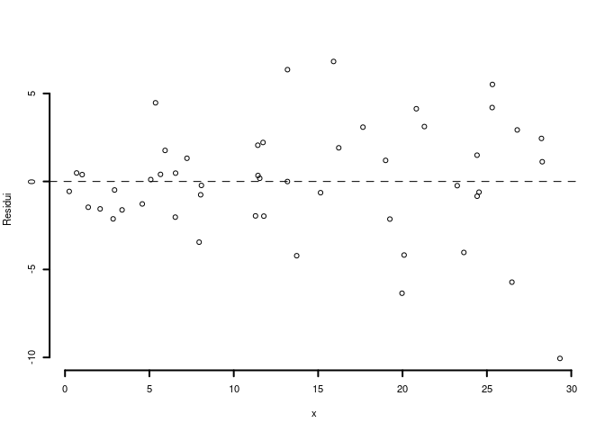
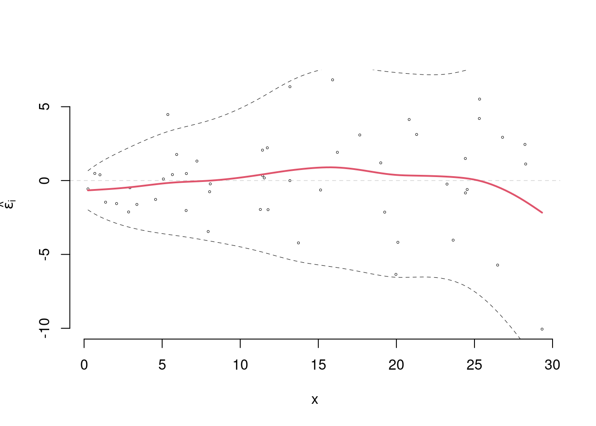
5.e (Punti 2/103 \(\rightarrow\) 0.6/31) Perché una previsione per \(x=15\) è più affidabile di una per \(x=50\)?
Prova di Statistica 2023/06/08-2
Esercizio 1
Su un campione di \(160\) famiglie della provincia di Modena è stata rilevata la spesa annua dedicata alle vacanze, espressa in migliaia di euro. Qui di seguito la distribuzione delle frequenze assolute:
| \([\text{x}_j,\) | \(\text{x}_{j+1})\) | \(n_j\) |
|---|---|---|
| 0.0 | 5.0 | 10 |
| 5.0 | 7.0 | 76 |
| 7.0 | 8.5 | 63 |
| 8.5 | 10.0 | 11 |
| 160 |
1.a (Punti 14/103 \(\rightarrow\) 4.21/31) Disegnare l’istogramma di densità percentuale.
| \([\text{x}_j,\) | \(\text{x}_{j+1})\) | \(n_j\) | \(f_j\) | \(b_j\) | \(h_j\) | \(F_j\) |
|---|---|---|---|---|---|---|
| 0.0 | 5.0 | 10 | 0.0625 | 5.0 | 1.250 | 0.0625 |
| 5.0 | 7.0 | 76 | 0.4750 | 2.0 | 23.750 | 0.5375 |
| 7.0 | 8.5 | 63 | 0.3938 | 1.5 | 26.250 | 0.9312 |
| 8.5 | 10.0 | 11 | 0.0688 | 1.5 | 4.583 | 1.0000 |
| 160 | 1.0000 | 10.0 |

1.b (Punti 3/103 \(\rightarrow\) 0.9/31) Qual è la percentuale di famiglie con spesa compresa tra a 4 mila e 8 mila euro?
\[\begin{eqnarray*} \%(4<X<8) &=& (5-4)\times h_{1}+ f_{ 2 }\times 100 + (8-7)\times h_{3} \\ &=& (1)\times 1.25+ ( 0.475 )\times 100 + (1)\times 26.25 \\ &=& 0.75 \times(100)\\ \#( 4 < X < 8 ) &\approx& 120 \end{eqnarray*}\]
1.c (Punti 2/103 \(\rightarrow\) 0.6/31) Che relazione dobbiamo attenderci tra moda, mediana e media?
1.d (Punti 2/103 \(\rightarrow\) 0.6/31) Cosa significa che la media aritmetica gode della proprietà di linearità?
Esercizio 2
Siano \(X_A\sim N(1.5,1.5)\) e sia \(X_B\sim N(1.5,1.5)\), \(X_A\) e \(X_B\) indipendenti. Posto \(A=\{X_A\le 1\}\) e \(B=\{X_B>2\}\)
2.a (Punti 14/103 \(\rightarrow\) 4.21/31) Calcolare la probabilità di \(A\cup B\).
\[\begin{eqnarray*} P( X_A < 1 ) &=& P\left( \frac { X_A - \mu_A }{ \sigma_A } < \frac { 1 - 1.5 }{\sqrt{ 1.5 }} \right) \\ &=& P\left( Z < -0.41 \right) \\ &=& 1-\Phi( 0.41 ) \\ &=& 0.3409 \end{eqnarray*}\]\[\begin{eqnarray*} P( X_B > 2 ) &=& P\left( \frac { X_B - \mu_B }{ \sigma_B } > \frac { 2 - 1.5 }{\sqrt{ 1.5 }} \right) \\ &=& P\left( Z > 0.41 \right) \\ &=& 1-P(Z< 0.41 )\\ &=& 1-\Phi( 0.41 ) \\ &=& 0.3409 \end{eqnarray*}\] \[\begin{eqnarray*} P(A\cup B) &=& P(A)+P(B)-P(A\cap B)\\ &=& 0.3415+0.3415-0.1167\\ &=& 0.5664 \end{eqnarray*}\]
2.b (Punti 3/103 \(\rightarrow\) 0.9/31) Si continua ad estrarre da \(X_A\sim N(1.5,1.5)\) e si interrompe quando \(X_A\le 1\). Calcolare la probabilità di interrompere alla quinta estrazione.
\[\begin{eqnarray*} P(A) &=& 0.3415\\ P(\bar A) &=& 0.6585\\ P(\bar A\cap \bar A\cap\bar A\cap\bar A\cap A)&=& (1-0.3415)^40.3415\\ &=& 0.0642 \end{eqnarray*}\]
2.c (Punti 2/103 \(\rightarrow\) 0.6/31) Come si distribuisce \(X_A-X_B\)?
2.d (Punti 2/103 \(\rightarrow\) 0.6/31) Se \(A\) e \(B\) sono due eventi tali che \(A\cap B=\emptyset\), \(A\) e \(B\) possono essere indipendenti? Perché?
Esercizio 3
3.a (Punti 14/103 \(\rightarrow\) 4.21/31) Un’urna contiene 3 palline col numero \(\fbox{0}\), 3 col numero \(\fbox{1}\) e 4 col numero \(\fbox{2}\). Si estrae senza reintroduzione per \(n=81\) volte. Calcolare la probabilità che la somma dei risultati sia maggiore di 80.
\[ \mu = 0 \cdot 0.3+1 \cdot 0.3+2 \cdot 0.4 = 1.1 \]\[ \sigma^2 =( 0^2 \cdot 1+1^2 \cdot 1+2^2 \cdot 1 )-( 1.1 )^2= -4 \]Teorema del Limite Centrale (somma VC qualunque)
Siano \(X_1\),…,\(X_n\), \(n=81\) VC IID, tc \(E(X_i)=\mu=1.1\) e \(V(X_i)=\sigma^2=0.69,\forall i\), posto: \[ S_n = X_1 + ... + X_n \] allora:\[\begin{eqnarray*} S_n & \mathop{\sim}\limits_{a}& N(n\mu,n\sigma^2) \\ &\sim & N(81\cdot1.1,81\cdot0.69) \\ &\sim & N(89.1,55.89) \end{eqnarray*}\]\[\begin{eqnarray*} P( S_n > 80 ) &=& P\left( \frac { S_n - n\mu }{ \sqrt{n\sigma^2} } > \frac { 80 - 89.1 }{\sqrt{ 55.89 }} \right) \\ &=& P\left( Z > -1.22 \right) \\ &=& 1-P(Z< -1.22 )\\ &=& 1-(1-\Phi( 1.22 )) \\ &=& 0.8888 \end{eqnarray*}\]
Esercizio 4
4.a (Punti 3/103 \(\rightarrow\) 0.9/31) Sono stati estratti \(n=10\) valori da una Poisson di parametro \(\lambda\) incognito e si è ottenuta un media pari a \(\bar x=3.4\). Ricavare \(\widehat{SE(\hat\lambda)}\) lo Standard Error stimato \(\hat\lambda\) di massima verosimiglianza.
4.b (Punti 3/103 \(\rightarrow\) 0.9/31) Sia \(h\) uno stimatore per \(\theta\). Cosa significa dire che \(h\) è consistente?
4.c (Punti 3/103 \(\rightarrow\) 0.9/31) Siano \(T_1\) e \(T_2\) due test per lo stesso sistema d’ipotesi e con probabilità di errore di secondo tipo pari a, \(\beta_1=0.02\) e \(\beta_2=0.3\), rispettivamente. A parità di significatività, quale dei due è più potente? Perché?
4.d (Punti 3/103 \(\rightarrow\) 0.9/31) In uno studio sull’efficacia della pubblicità televisiva sono state intervistate 64 persone suddivise in due gruppi, un primo gruppo di 32 individui che guarda abitualmente la televisione e un secondo gruppo di 32 che non la guarda. Ad ogni partecipante è stata chiesta la spesa annua in beni pubblicizzati in TV ed è risultato che la spesa media in questi prodotti di chi guarda abitualmente la TV è pari \(\hat\mu_{TV}=1.4\text{ mila €}\) con una standard deviation pari a \(\hat\sigma_{TV}=1.2\text{ mila €}\), mentre nel gruppo che non la guarda abitualmente è risultato \(\hat\mu_{\overline{TV}}=0.9\text{ mila €}\) con una standard deviation pari a \(\hat\sigma_{\overline{TV}}=1.4\text{ mila €}\). Si è testa l’uguaglianza delle medie contro l’alternativa che \(\mu_{TV}\) sia maggiore di \(\mu_{\overline{TV}}\) e ed è risultato un \(p_\text{value}= 0.0681\). Si può concludere che la spesa in pubblicità televisiva sia efficace?
Esercizio 5
5.a (Punti 14/103 \(\rightarrow\) 4.21/31) In uno studio sull’efficacia degli integratori alimentari, su un gruppo di 238 atleti è stato misurato il rendimento atletico (ottimo, buono e scarso) e l’assunzione di integratori (alto, medio e basso). Qui di seguito i dati:
|
Integratori
|
||||
|---|---|---|---|---|
| alto | medio | basso | Totale | |
| rendimento | ||||
| buono | 21 | 18 | 26 | 65 |
| scarso | 20 | 35 | 38 | 93 |
| Totale | 41 | 53 | 64 | 158 |
Testare al livello di significatività del 5% se c’è indipendenza tra integratori e rendimento.
|
Integratori
|
|||
|---|---|---|---|
| alto | medio | basso | |
| rendimento | |||
| buono | 16.87 | 21.8 | 26.33 |
| scarso | 24.13 | 31.2 | 37.67 |
|
Integratori
|
|||
|---|---|---|---|
| alto | medio | basso | |
| rendimento | |||
| buono | 1.0127 | 0.6636 | 0.0041 |
| scarso | 0.7078 | 0.4638 | 0.0029 |
Il chi oss è 2.855 , il chi-teorico, 5.991 rifiuto: no
Esercizio 6
In uno studio sull’efficacia dell’investimento pubblicitario sono stati rilevati, per \(n=50\) aziende si sono rilevati l’incremento di spesa in pubblicità (\(X\)) e l’incremento di utile (\(Y\)) nell’ultimo quinquennio. Si osservano le seguenti statistiche, \(\sum_{i=1}^{50}x_i=690.2238\), \(\sum_{i=1}^{50}y_i=471.0875\), \(\sum_{i=1}^{50}x_i^2=13373.9618\), \(\sum_{i=1}^{50}y_i^2=6656.468\) e \(\sum_{i=1}^{50}x_iy_i=7933.2368\).
6.a (Punti 14/103 \(\rightarrow\) 4.21/31) Stimare il modello di regressione dove \(Y\) viene spiegata da \(X\).
\[\begin{eqnarray*} \bar x &=&\frac 1 n\sum_{i=1}^n x_i = \frac {1}{ 50 } 690.2239 = 13.8 \\ \bar y &=&\frac 1 n\sum_{i=1}^n y_i = \frac {1}{ 50 } 471.0877 = 9.422 \\ \hat\sigma_X^2&=&\frac 1 n\sum_{i=1}^n x_i^2-\bar x^2=\frac {1}{ 50 } 13374 - 13.8045 ^2= 76.92 \\ \hat\sigma_Y^2&=&\frac 1 n\sum_{i=1}^n y_i^2-\bar y^2=\frac {1}{ 50 } 6656 - 9.4218 ^2= 44.36 \\ \text{cov}(X,Y)&=&\frac 1 n\sum_{i=1}^n x_i~y_i-\bar x\bar y=\frac {1}{ 50 } 7933 - 13.8045 \cdot 9.4218 = 28.6 \\ \hat\beta_1 &=& \frac{\text{cov}(X,Y)}{\hat\sigma_X^2} \\ &=& \frac{ 28.6 }{ 76.92 } = 0.3719 \\ \hat\beta_0 &=& \bar y - \hat\beta_1 \bar x\\ &=& 9.422 - 0.3719 \times 13.8045 = 4.288 \end{eqnarray*}\]
6.b (Punti 3/103 \(\rightarrow\) 0.9/31) Il modello si adatta bene ai dati?
\[\begin{eqnarray*} r&=&\frac{\text{cov}(X,Y)}{\sigma_X\sigma_Y}=\frac{ 28.6 }{ 8.77 \times 6.66 }= 0.4897 \\r^2&=& 0.2398 < 0.75 \end{eqnarray*}\] Il modello non si adatta bene ai dati.
6.c (Punti 2/103 \(\rightarrow\) 0.6/31) Interpretare il diagramma dei residui.
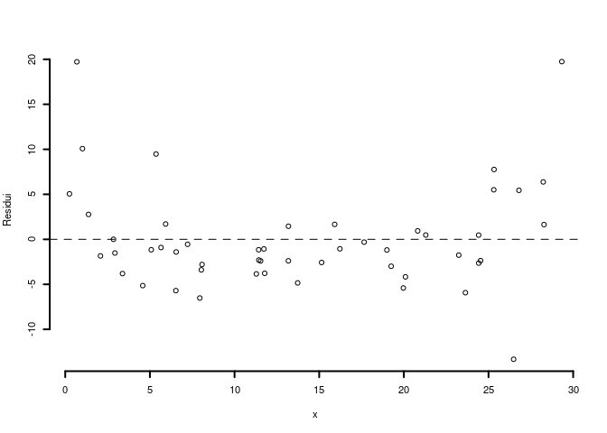
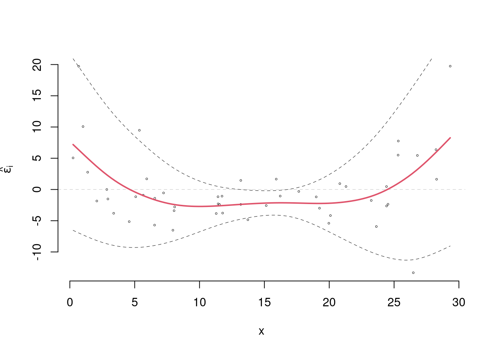
6.d (Punti 2/103 \(\rightarrow\) 0.6/31) Posto \(W=-2\cdot Y\) calcolare \(\beta_0'\) e \(\beta_1'\) i coefficienti di regressione del modello \[ w_i = \beta_0'+\beta_1'x_i+\epsilon_i' \]
\[\begin{eqnarray*} \bar w &=& -2\bar y\\ &=& -2\cdot9.4218\\ &=& -18.8435\\ \hat\sigma_W&=&2\hat\sigma_Y\\ &=& 2\cdot6.6603\\ &=& 13.3207\\ \hat\beta_1' &=& -\frac{\sigma_W}{\sigma_X}r\\ &=& -\frac{13.3207}{8.7702}0.4897\\ &=& -0.9793\\ \hat\beta_0'&=& \bar w - \hat\beta_1'\bar x\\ &=& -5.3244 \end{eqnarray*}\]
Prova di Statistica 2023/06/08-3
Esercizio 1
Su un campione di \(160\) famiglie della provincia di Modena è stata rilevata la spesa annua dedicata alle vacanze, espressa in migliaia di euro. Qui di seguito la distribuzione delle frequenze cumulate:
| \([\text{x}_j,\) | \(\text{x}_{j+1})\) | \(F_j\) |
|---|---|---|
| 0.0 | 2.5 | 0.1312 |
| 2.5 | 4.0 | 0.3688 |
| 4.0 | 5.0 | 0.6312 |
| 5.0 | 6.5 | 0.8688 |
| 6.5 | 9.0 | 1.0000 |
1.a (Punti 14/103 \(\rightarrow\) 4.21/31) Disegnare l’istogramma di densità percentuale.
| \([\text{x}_j,\) | \(\text{x}_{j+1})\) | \(n_j\) | \(f_j\) | \(b_j\) | \(h_j\) | \(F_j\) |
|---|---|---|---|---|---|---|
| 0.0 | 2.5 | 21 | 0.1312 | 2.5 | 5.25 | 0.1312 |
| 2.5 | 4.0 | 38 | 0.2375 | 1.5 | 15.83 | 0.3688 |
| 4.0 | 5.0 | 42 | 0.2625 | 1.0 | 26.25 | 0.6312 |
| 5.0 | 6.5 | 38 | 0.2375 | 1.5 | 15.83 | 0.8688 |
| 6.5 | 9.0 | 21 | 0.1312 | 2.5 | 5.25 | 1.0000 |
| 160 | 1.0000 | 9.0 |
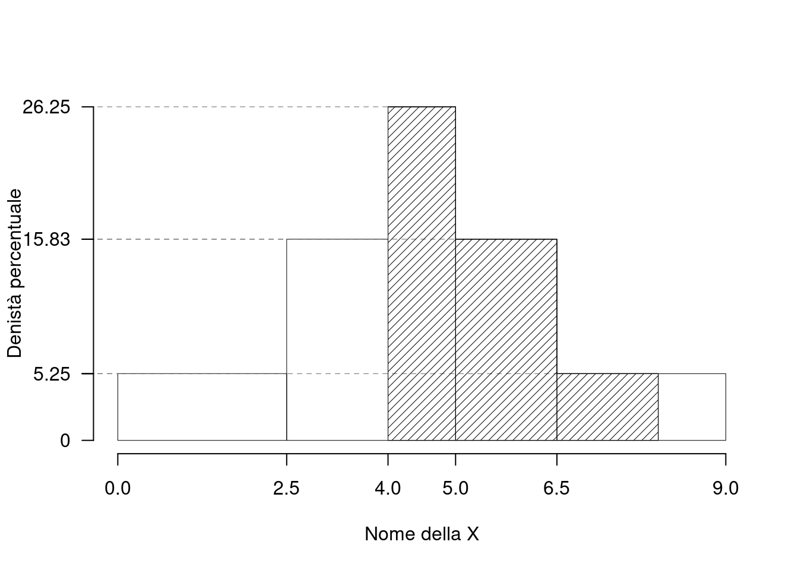
1.b (Punti 3/103 \(\rightarrow\) 0.9/31) Qual è il numero di famiglie con spesa compresa tra a 4 mila e 8 mila euro?
\[\begin{eqnarray*} \%(4<X<8) &=& f_{3}\times 100+ f_{ 4 }\times 100 + (8-6.5)\times h_{5} \\ &=&0.2625\times 100 + ( 0.2375 )\times 100 + (1.5)\times 5.25 \\ &=& 0.5787 \times(100)\\ \#( 4 < X < 8 ) &\approx& 93 \end{eqnarray*}\]
1.c (Punti 2/103 \(\rightarrow\) 0.6/31) Che relazione dobbiamo attenderci tra moda, mediana e media?
1.d (Punti 2/103 \(\rightarrow\) 0.6/31) Cosa significa che la media aritmetica goe della proprietà di linearità?
Esercizio 2
Sia \(X\sim\text{Binom}(5,0.5)\) e sia \(y\sim\text{Binom}(5,0.4)\), \(X\) e \(Y\) indipendenti, posto \(A=\{X\le 1\}\) e \(B=\{Y\ge 2\}\)
2.a (Punti 14/103 \(\rightarrow\) 4.21/31) Calcolare la probabilità di \(A\cup B\).
\[\begin{eqnarray*} P( X \leq 1 ) &=& \binom{ 5 }{ 0 } 0.5 ^{ 0 }(1- 0.5 )^{ 5 - 0 }+\binom{ 5 }{ 1 } 0.5 ^{ 1 }(1- 0.5 )^{ 5 - 1 } \\ &=& 0.0312+0.1562 \\ &=& 0.1874 \end{eqnarray*}\] \[\begin{eqnarray*} P( Y \geq 2 ) &=& 1-P( Y < 2 ) \\ &=& 1-\left( \binom{ 5 }{ 0 } 0.4 ^{ 0 }(1- 0.4 )^{ 5 - 0 }+\binom{ 5 }{ 1 } 0.4 ^{ 1 }(1- 0.4 )^{ 5 - 1 } \right)\\ &=& 1-( 0.0778+0.2592 )\\ &=& 1- 0.337 \\ &=& 0.663 \end{eqnarray*}\] \[\begin{eqnarray*} P(A\cup B) &=& P(A)+P(B)-P(A\cap B)\\ &=& 0.1875+0.3174-0.0595\\ &=& 0.4454 \end{eqnarray*}\]
2.b (Punti 3/103 \(\rightarrow\) 0.9/31) Si estrae ripetutamente da \(X\sim\text{Binom}(5,0.5)\) e ci si ferma quando \(X\le 1\). Calcolare la probabilità di finire entro due estrazioni.
\[\begin{eqnarray*} P(A) &=& 0.1875\\ P(\bar A) &=& 0.8125\\ P(A\cup (\bar A\cap A))&=& 0.1875+0.1875\cdot (1-0.1875)\\ &=& 0.3398 \end{eqnarray*}\]
2.c (Punti 2/103 \(\rightarrow\) 0.6/31) Calcolare valore atteso e varianza di \(X-Y\).
2.d (Punti 2/103 \(\rightarrow\) 0.6/31) Siano \(A\) e \(B\) due eventi tali che \(P(A)=0.6\) e \(P(B)=0.5\). \(A\) e \(B\) possono essere incompatibili? Perché?
Esercizio 3
3.a (Punti 14/103 \(\rightarrow\) 4.21/31) Un’urna contiene 3 palline col numero \(\fbox{0}\), 4 col numero \(\fbox{1}\) e 3 col numero \(\fbox{2}\). Si estrae senza reintroduzione per \(n=81\) volte. Calcolare la probabilità che la media dei risultati sia minore di 0.9.
\[ \mu = 0 \cdot 0.3+1 \cdot 0.4+2 \cdot 0.3 = 1 \]\[ \sigma^2 =( 0^2 \cdot 1+1^2 \cdot 1+2^2 \cdot 1 )-( 1 )^2= -4 \]Teorema del Limite Centrale (media VC qualunque)
Siano \(X_1\),…,\(X_n\), \(n=81\) VC IID, tc \(E(X_i)=\mu=1\) e \(V(X_i)=\sigma^2=0.6,\forall i\), posto: \[ \bar X=\frac{S_n}n =\frac{X_1 + ... + X_n}n \] allora:\[\begin{eqnarray*} \bar X & \mathop{\sim}\limits_{a}& N(\mu,\sigma^2/n) \\ &\sim & N\left(1,\frac{0.6}{81}\right) \\ &\sim & N(1,0.007407) \end{eqnarray*}\]\[\begin{eqnarray*} P( \bar X < 0.9 ) &=& P\left( \frac { \bar X - \mu }{ \sqrt{\sigma^2/n} } < \frac { 0.9 - 1 }{\sqrt{ 0.007407 }} \right) \\ &=& P\left( Z < -1.16 \right) \\ &=& 1-\Phi( 1.16 ) \\ &=& 0.123 \end{eqnarray*}\]
Esercizio 4
4.a (Punti 3/103 \(\rightarrow\) 0.9/31) Sono stati estratti \(n=10\) valori da una Bernoulli di parametro \(\pi\) incognito e si è ottenuti 4 successi in 10 estrazioni. Ricavare, \(\widehat{SE(\hat\pi)}\) lo Standard Error stimato di \(\hat\pi\) di massima verosimiglianza.
4.b (Punti 3/103 \(\rightarrow\) 0.9/31) Sia \(h\) uno stimatore per \(\theta\). Cosa significa dire che \(h\) è corretto asintoticamente?
4.c (Punti 3/103 \(\rightarrow\) 0.9/31) Definire gli errori di primo e di secondo tipo e le relative probabilità.
4.d (Punti 3/103 \(\rightarrow\) 0.9/31) Un dado viene lanciato 60 volte e si ottiene| 1 | 2 | 3 | 4 | 5 | 6 |
|---|---|---|---|---|---|
| 3 | 4 | 18 | 16 | 7 | 12 |
Ci si chiede se il dado sia truccato. Posto a test \[ \begin{cases} H_0:\pi_j=\frac 16, j = 1,...,6 \end{cases} \] si ottiene un \(p_{\text{value}}=0.0014\). Il dado si può ritenere truccato? Perché?
Esercizio 5
5.a (Punti 3/103 \(\rightarrow\) 0.9/31) In uno studio sui consumi per generi di igiene personale su un campione di 35 famiglie della provincia di Reggio è stata chiesta la loro spesa annuale in questo genere di beni. I dati campionari hanno evidenziato una media pari a \(\hat\mu=0.5\) e una deviazione standard osservata pari a \(\hat\sigma=0.25\). Costruire un intervallo di confidenza al 95% per il gradimento medio \(\mu\).
\(1-\alpha =0.95\) e quindi \(\alpha=0.05\rightarrow \alpha/2=0.025\)
\[ S =\sqrt{\frac {n}{n-1}}\cdot\hat\sigma = \sqrt{\frac { 35 }{ 34 }}\cdot 0.25 = 0.2536 \] \[\begin{eqnarray*} Idc: & & \hat\mu \pm t_{n-1;\alpha/2} \times \frac{S}{\sqrt{n}} \\ & & 0.5 \pm 2.032 \times \frac{ 0.2536 }{\sqrt{ 35 }} \\ & & 0.5 \pm 2.032 \times 0.04287 \\ & & [ 0.4129 , 0.5871 ] \end{eqnarray*}\]
5.b (Punti 11/103 \(\rightarrow\) 3.31/31) Un’indagine analoga, svolta sull’intera regione, ha mostrato un gradimento medio pari a \(\mu_0=0.6\). Testare l’ipotesi che nel comune A il livello di gradimento sia uguale a quello regionale contro l’alternativa che sia minore.
Test \(t\) per una media, varianza incognita
\(\fbox{A}\) FORMULAZIONE DELLE IPOTESI
\[\begin{cases} H_0: \mu = \mu_0=0.6 \\ H_1: \mu < \mu_0=0.6 \end{cases}\]
\[\begin{eqnarray*} S &=& \sqrt{\frac{n} {n-1}}\ \widehat{\sigma} = \sqrt{\frac{ 35 } { 35 -1}} \times 0.25 = 0.2536 \end{eqnarray*}\] \[\begin{eqnarray*} \frac{\hat\mu - \mu_{0}} {S/\,\sqrt{n}}&\sim&t_{n-1}\\ t_{\text{obs}} &=& \frac{ ( 0.5 - 0.6 )} { 0.2536 /\sqrt{ 35 }} = -2.332 \, . \end{eqnarray*}\]
\(\fbox{C}\) CONCLUSIONE
Consideriamo \(\alpha=0.1, 0.05, 0.01, 0.001\)
I valori critici sono
\(t_{35-1;0.1}=-1.307\); \(t_{35-1;0.05}=-1.6909\); \(t_{35-1;0.01}=-2.4411\); \(t_{35-1;0.001}=-3.3479\)
Siccome \(-2.4411<t_\text{obs}=-2.3324<-1.6909\), quindi rifiuto \(H_0\) al 5%,
\(0.01<p_\text{value}<0.05\), significativo \(\fbox{*}\).
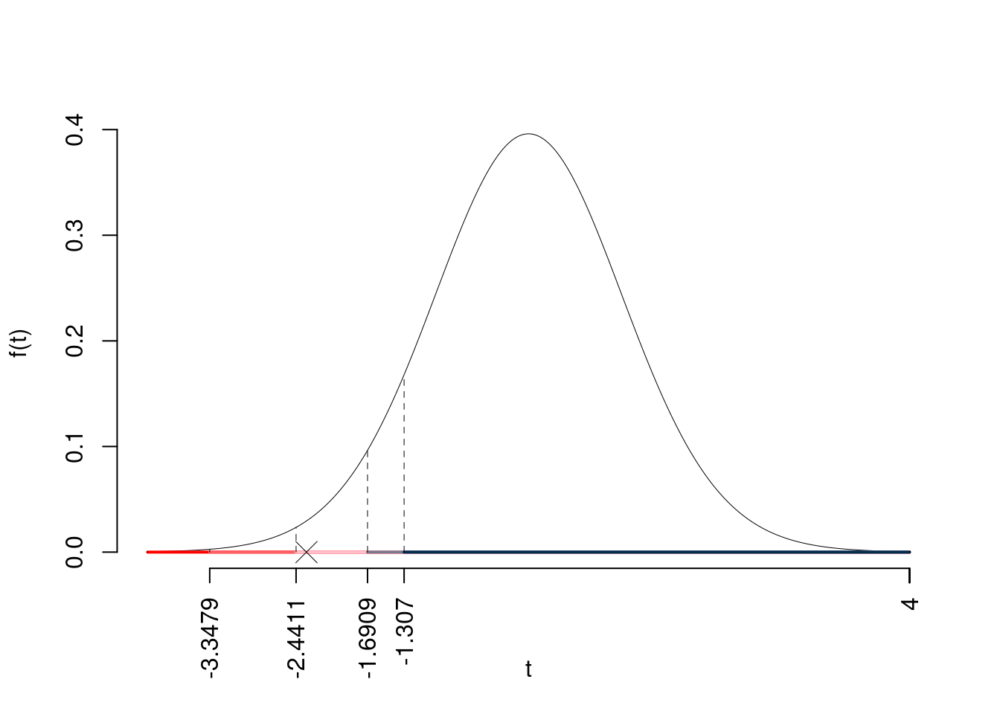
Il \(p_{\text{value}}\) è
\[ p_{\text{value}} = P(T_{35-1}<-2.33)=0.012869 \]
Attenzione il calcolo del \(p_\text{value}\) con la \(T\) è puramente illustrativo e non può essere riprodotto senza una calcolatrice statistica adeguata.\[ 0.01 < p_\text{value}= 0.012869 \leq 0.05 \]
Esercizio 6
In uno studio sull’efficacia dell’investimento pubblicitario sono stati rilevati, per \(n=50\) aziende si sono rilevati l’incremento di spesa in pubblicità (\(X\)) e l’incremento di utile (\(Y\)) nell’ultimo quinquennio. Si osservano le seguenti statistiche, \(\sum_{i=1}^{50}x_i=690.2238\), \(\sum_{i=1}^{50}y_i=364.8125\), \(\sum_{i=1}^{50}x_i^2=13373.9618\), \(\sum_{i=1}^{50}y_i^2=3754.8705\) e \(\sum_{i=1}^{50}x_iy_i=6811.1526\).
6.a (Punti 14/103 \(\rightarrow\) 4.21/31) Stimare il modello di regressione dove \(Y\) viene spiegata da \(X\).
\[\begin{eqnarray*} \bar x &=&\frac 1 n\sum_{i=1}^n x_i = \frac {1}{ 50 } 690.2239 = 13.8 \\ \bar y &=&\frac 1 n\sum_{i=1}^n y_i = \frac {1}{ 50 } 364.8125 = 7.296 \\ \hat\sigma_X^2&=&\frac 1 n\sum_{i=1}^n x_i^2-\bar x^2=\frac {1}{ 50 } 13374 - 13.8045 ^2= 76.92 \\ \hat\sigma_Y^2&=&\frac 1 n\sum_{i=1}^n y_i^2-\bar y^2=\frac {1}{ 50 } 3755 - 7.2962 ^2= 21.86 \\ \text{cov}(X,Y)&=&\frac 1 n\sum_{i=1}^n x_i~y_i-\bar x\bar y=\frac {1}{ 50 } 6811 - 13.8045 \cdot 7.2962 = 35.5 \\ \hat\beta_1 &=& \frac{\text{cov}(X,Y)}{\hat\sigma_X^2} \\ &=& \frac{ 35.5 }{ 76.92 } = 0.4616 \\ \hat\beta_0 &=& \bar y - \hat\beta_1 \bar x\\ &=& 7.296 - 0.4616 \times 13.8045 = 0.9245 \end{eqnarray*}\]
6.b (Punti 3/103 \(\rightarrow\) 0.9/31) Qual è la percentuale di varianza spiegata dal modello?
\[\begin{eqnarray*} r&=&\frac{\text{cov}(X,Y)}{\sigma_X\sigma_Y}=\frac{ 35.5 }{ 8.77 \times 4.676 }= 0.8658 \\r^2&=& 0.7496 < 0.75 \end{eqnarray*}\] Il modello non si adatta bene ai dati.
6.c (Punti 2/103 \(\rightarrow\) 0.6/31) Interpretare il qq-plot dei residui.
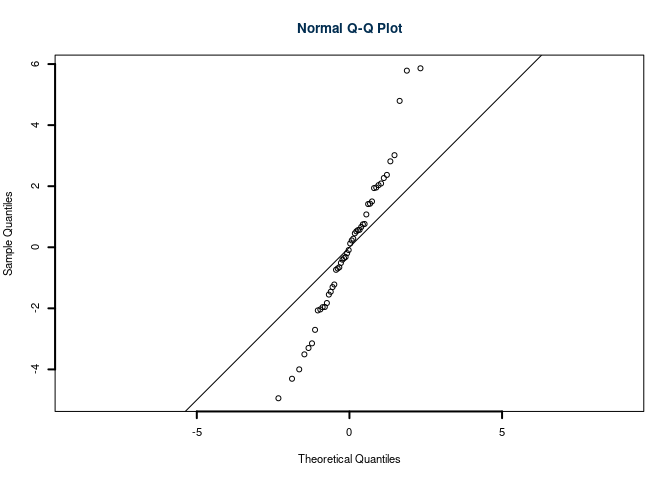
6.d (Punti 2/103 \(\rightarrow\) 0.6/31) Posto \(W=-2\cdot X\) calcolare \(\beta_0'\) e \(\beta_1'\) i coefficienti di regressione del modello \[ y_i = \beta_0'+\beta_1'w_i+\epsilon_i' \]
\[\begin{eqnarray*} \bar w &=& -2\bar x\\ &=& -2\cdot13.8045\\ &=& -27.609\\ \hat\sigma_W&=&2\hat\sigma_X\\ &=& 2\cdot8.7702\\ &=& 17.5403\\ \hat\beta_1' &=& -\frac{\sigma_Y}{\sigma_W}r\\ &=& -\frac{9.3514}{8.7702}0.8658\\ &=& -0.9231\\ \hat\beta_0'&=& \bar y - \hat\beta_1'\bar w\\ &=& -5.4473 \end{eqnarray*}\]
Prova di Statistica 2023/06/27-1
Esercizio 1
Su un campione di \(250\) famiglie della provincia di Modena è stato rilevata la spesa mensile in telecomunicazioni (in euro), qui di seguito la distribuzione delle frequenze relative:
| \([\text{x}_j,\) | \(\text{x}_{j+1})\) | \(f_j\) |
|---|---|---|
| 0 | 15 | 0.036 |
| 15 | 30 | 0.224 |
| 30 | 50 | 0.248 |
| 50 | 100 | 0.308 |
| 100 | 250 | 0.184 |
| 1.000 |
1.a (Punti 14/105 \(\rightarrow\) 4.13/31) Disegnare l’istogramma di densità percentuale.
| \([\text{x}_j,\) | \(\text{x}_{j+1})\) | \(n_j\) | \(f_j\) | \(b_j\) | \(h_j\) | \(F_j\) |
|---|---|---|---|---|---|---|
| 0 | 15 | 9 | 0.036 | 15 | 0.2400 | 0.036 |
| 15 | 30 | 56 | 0.224 | 15 | 1.4933 | 0.260 |
| 30 | 50 | 62 | 0.248 | 20 | 1.2400 | 0.508 |
| 50 | 100 | 77 | 0.308 | 50 | 0.6160 | 0.816 |
| 100 | 250 | 46 | 0.184 | 150 | 0.1227 | 1.000 |
| 250 | 1.000 | 250 |
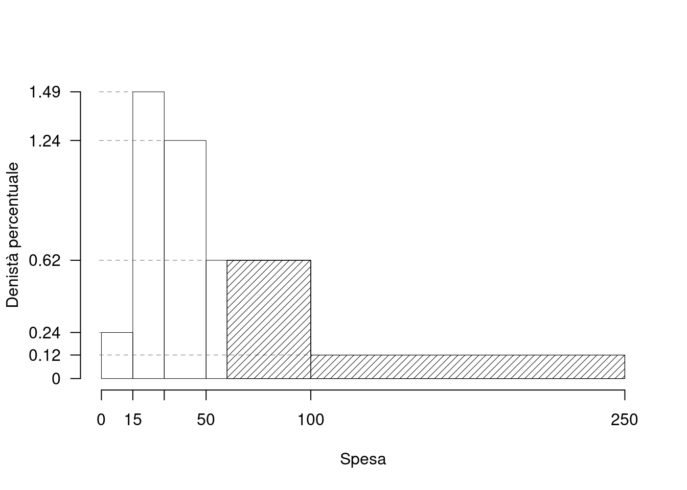
1.b (Punti 3/105 \(\rightarrow\) 0.89/31) Qual è la percentuale di famiglie con spesa superiore a 60 euro?
\[\begin{eqnarray*} \%(X> 60 ) &=& ( 100 - 60 )\times h_{ 4 }+ f_{ 5 }\times 100 \\ &=& ( 40 )\times 0.616 + ( 0.184 )\times 100 \\ &=& 0.4304 \times(100)\\ \#(X> 60 ) &\approx& 108 \end{eqnarray*}\]
1.c (Punti 2/105 \(\rightarrow\) 0.59/31) Che relazione dobbiamo attenderci tra moda, mediana e media?
1.d (Punti 2/105 \(\rightarrow\) 0.59/31) La spesa media è pari a \(\bar x=70.6296\) e la standard deviation \(\hat\sigma=56.9043\), se tutte le famiglie risparmiassero il 10%, come cambierebbero la media e la standard deviation?
Esercizio 2
Un impresa di soccorso stradale ha due centralini, il numero di telefonate orarie in arrivo al centralino \(A\) è distribuito come una Poisson \(X\sim\text{Pois}(2.2)\), mentre il numero di telefonate orarie in arrivo al centralino \(B\) è distribuito come una Poisson \(Y\sim\text{Pois}(1.3)\), \(X\) e \(Y\) indipendenti.
2.a (Punti 14/105 \(\rightarrow\) 4.13/31) Calcolare la probabilità che il totale di telefonate in arrivo in un’ora sia maggiore o uguale a tre (\(S=X+Y\ge 3\)).
\[\begin{eqnarray*} P( X+Y \geq 3 ) &=& 1-P( X+Y < 3 ) \\ &=& 1-\left( \frac{ 3.5 ^{ 0 }}{ 0 !}e^{- 3.5 }+\frac{ 3.5 ^{ 1 }}{ 1 !}e^{- 3.5 }+\frac{ 3.5 ^{ 2 }}{ 2 !}e^{- 3.5 } \right)\\ &=& 1-( 0.0302+0.1057+0.185 )\\ &=& 1- 0.3209 \\ &=& 0.6791 \end{eqnarray*}\]
2.b (Punti 3/105 \(\rightarrow\) 0.89/31) Sapendo che \(S=X+Y\ge 3\), calcolare la probabilità che \(S=X+Y= 5\) (\(P(S=5|S\ge 3\))
\[\begin{eqnarray*} P(X+Y\ge 3) &=& 0.6792\\ P(X+Y=5) &=& 0.1322\\ P(\{X+Y=5\}\cap\{X+Y\ge 3\}) &=&P(X+Y=5)\\ P(\{P(X+Y=5)\}|\{X+Y\ge 3\}) &=&\frac{P(\{X+Y=5\}\cap\{X+Y\ge 3\})}{P(X+Y\ge 3)}\\ &=&\frac{P(X+Y=5)}{P(X+Y\ge 3)}\\ &=&\frac{0.1322}{0.6792}\\ &=&0.1946 \end{eqnarray*}\]
2.c (Punti 2/105 \(\rightarrow\) 0.59/31) Se \(X\) ed \(Y\) sono due variabili casuali, è sempre vero che \[ V(X-Y)=V(X)+V(Y)~~~? \] motivare la risposta.
2.d (Punti 2/105 \(\rightarrow\) 0.59/31) Sia \(X\sim\text{Binom}(2,\pi=0.5)\). Disegnare la sua funzione di ripartizione.
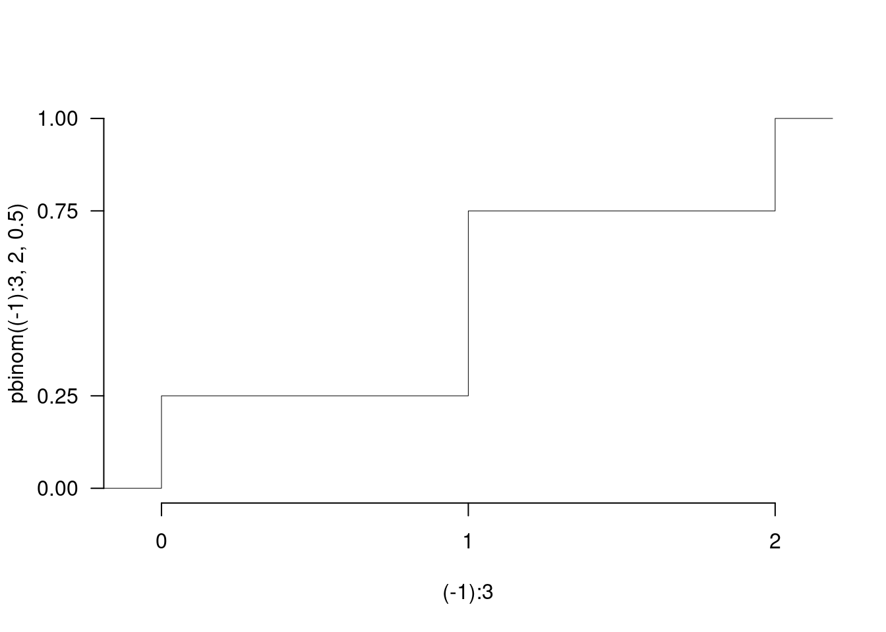
Esercizio 3
3.a (Punti 14/105 \(\rightarrow\) 4.13/31) Una catena di montaggio a ciclo continuo produce ogni giorno un numero di pezzi variabile, con una media pari a \(\mu=1.2\) mila pezzi al giorno e una varianza di \(\sigma^2=9.1\).
Calcolare la probabilità che il numero totale di pezzi prodotti dopo un anno (\(n=365\)) sia inferiore a ai 400 (mila) pezzi prodotti.
Teorema del Limite Centrale (somma VC qualunque)
Siano \(X_1\),…,\(X_n\), \(n=365\) VC IID, tc \(E(X_i)=\mu=1.2\) e \(V(X_i)=\sigma^2=9.1,\forall i\), posto: \[ S_n = X_1 + ... + X_n \] allora:\[\begin{eqnarray*} S_n & \mathop{\sim}\limits_{a}& N(n\mu,n\sigma^2) \\ &\sim & N(365\cdot1.2,365\cdot9.1) \\ &\sim & N(438,3322) \end{eqnarray*}\]\[\begin{eqnarray*} P( S_n < 400 ) &=& P\left( \frac { S_n - n\mu }{ \sqrt{n\sigma^2} } < \frac { 400 - 438 }{\sqrt{ 3322 }} \right) \\ &=& P\left( Z < -0.66 \right) \\ &=& 1-\Phi( 0.66 ) \\ &=& 0.2546 \end{eqnarray*}\]
Esercizio 4
4.a (Punti 3/105 \(\rightarrow\) 0.89/31) Siano \(\hat \mu\) e \(\hat\sigma^2\) gli stimatori di massima verosimiglianza di \(\mu\) e \(\sigma^2\) del modello di Normale. \[\begin{eqnarray*} \hat\mu &=& \frac 1n\sum_{i=1}^nx_i \qquad \hat\sigma^2 = \frac 1n\sum_{i=1}^n(x_i-\hat\mu)^2\\ \end{eqnarray*}\] Come si distribuisce \(\hat\mu\)?
4.b (Punti 3/105 \(\rightarrow\) 0.89/31) Sia \(h\) uno stimatore per \(\theta\) tale che \[V(h)=\frac\theta {\sqrt{n}};~~~~E(h)=\theta\frac{n+2}{n}\] di quali proprietà gode \(h\)?
4.c (Punti 3/105 \(\rightarrow\) 0.89/31) Definire il p-value e descrivere la sua interpretazione.
4.d (Punti 3/105 \(\rightarrow\) 0.89/31) Se un test è significativo al 5% può essere significativo all’1%? (scegliere la risposta tra: mai, non sempre oppure sempre e motivare la risposta)
Esercizio 5
Nel comune \(A\) si è condotta un’intervista per conoscere l’opinione dei cittadini sulla presenza di un inceneritore. Sono state intervistate 250 persone e 70 di loro sono favorevoli.
5.a (Punti 3/105 \(\rightarrow\) 0.89/31) Costruire un intervallo di confidenza al 99% per la proporzione dei favorevoli in popolazione.
\(1-\alpha =0.99\) e quindi \(\alpha=0.01\rightarrow \alpha/2=0.005\)
\[ \hat\pi = \frac{S_n}n = \frac{ 70 }{ 250 }= 0.28 \]
\[\begin{eqnarray*} Idc: & & \hat\pi \pm z_{\alpha/2} \times \sqrt{\frac{\hat\pi(1-\hat\pi)}{n}} \\ & & 0.28 \pm 2.576 \times \sqrt{\frac{ 0.28 (1- 0.28 )}{ 250 }} \\ & & 0.28 \pm 2.576 \times 0.0284 \\ & & [ 0.2069 , 0.3531 ] \end{eqnarray*}\]
5.b (Punti 11/105 \(\rightarrow\) 3.25/31) Nel comune \(B\) si è condotta un’intervista analoga. Sono state intervistate 230 persone e 75 di loro sono favorevoli. Testare l’ipotesi che la proporzione nei due comuni sia uguale contro l’alternativa che nel comune \(B\) sia maggiore.
Test \(Z\) per due proporzioni
\(\fbox{A}\) FORMULAZIONE DELLE IPOTESI
\[\begin{cases} H_0: \pi_\text{B} = \pi_\text{A} \\ H_1: \pi_\text{B} > \pi_\text{A} \end{cases}\]
\(\fbox{B}\) SCELTA E CALCOLO STATISTICA-TEST, \(Z\)
\[\hat\pi_\text{ B }=\frac{s_\text{ B }}{n_\text{ B }}=\frac{ 75 }{ 230 }= 0.3261 \qquad \hat\pi_\text{ A }=\frac{s_\text{ A }}{n_\text{ A }}=\frac{ 70 }{ 250 }= 0.28 \]Calcoliamo la proporzione comune sotto \(H_0\) \[ \pi_C=\frac{s_\text{ B }+s_\text{ A }}{n_\text{ B }+n_\text{ A }}= \frac{ 145 }{ 480 }= 0.3021 \]\[\begin{eqnarray*} \frac{\hat\pi_\text{ B } - \hat\pi_\text{ A }} {\sqrt{\frac {\pi_C(1-\pi_C)}{n_\text{ B }}+\frac {\pi_C(1-\pi_C)}{n_\text{ A }}}}&\sim&N(0,1)\\ z_{\text{obs}} &=& \frac{ ( 0.3261 - 0.28 )} {\sqrt{\frac{ 0.3021 (1- 0.3021 )}{ 230 }+\frac{ 0.3021 (1- 0.3021 )}{ 250 }}} = 1.099 \, . \end{eqnarray*}\]
\(\fbox{C}\) CONCLUSIONE
Il \(p_{\text{value}}\) è
\[ p_{\text{value}} = P(Z>1.1)=0.135979 \]
\[ 0.1 < p_\text{value}= 0.135979 \leq 1 \]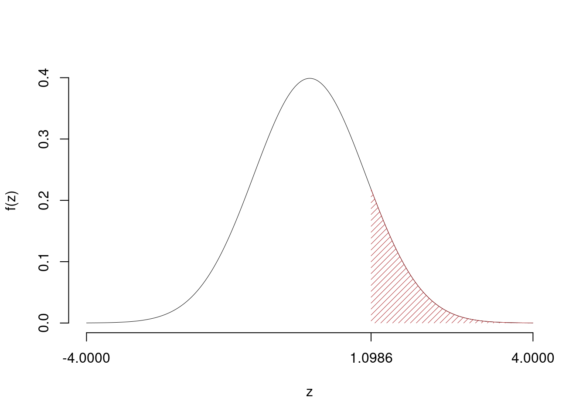
Non rifiuto \(H_0\) a nessun livello di significatività,
\(p_\text{value}>0.1\), non significativo
Esercizio 6
In uno studio sull’efficacia del marketing sul web si sono analizzate 50 aziende sulle quali è stato misurata l’incremento percentuale annuo medio di investimento in marketing web (\(X\)) la l’incremento percentuale medio di utile (\(Y\)). Si osservano le seguenti statistiche, \(\sum_{i=1}^{50}x_i=40.0409\), \(\sum_{i=1}^{50}y_i=116.137\), \(\sum_{i=1}^{50}x_i^2=41.5874\), \(\sum_{i=1}^{50}y_i^2=308.6014\) e \(\sum_{i=1}^{50}x_iy_i=110.6843\).
6.a (Punti 14/105 \(\rightarrow\) 4.13/31) Stimare il modello di regressione dove \(Y\) viene spiegata da \(X\) e interpretare i coefficienti \(\hat\beta_0\) e \(\hat\beta_1\)
\[\begin{eqnarray*} \bar x &=&\frac 1 n\sum_{i=1}^n x_i = \frac {1}{ 50 } 40.041 = 0.8008 \\ \bar y &=&\frac 1 n\sum_{i=1}^n y_i = \frac {1}{ 50 } 116.137 = 2.323 \\ \hat\sigma_X^2&=&\frac 1 n\sum_{i=1}^n x_i^2-\bar x^2=\frac {1}{ 50 } 41.59 - 0.8008 ^2= 0.1904 \\ \hat\sigma_Y^2&=&\frac 1 n\sum_{i=1}^n y_i^2-\bar y^2=\frac {1}{ 50 } 308.6 - 2.3227 ^2= 0.7769 \\ \text{cov}(X,Y)&=&\frac 1 n\sum_{i=1}^n x_i~y_i-\bar x\bar y=\frac {1}{ 50 } 110.7 - 0.8008 \cdot 2.3227 = 0.3536 \\ \hat\beta_1 &=& \frac{\text{cov}(X,Y)}{\hat\sigma_X^2} \\ &=& \frac{ 0.3536 }{ 0.1904 } = 1.857 \\ \hat\beta_0 &=& \bar y - \hat\beta_1 \bar x\\ &=& 2.323 - 1.8567 \times 0.8008 = 0.8358 \end{eqnarray*}\]
6.b (Punti 3/105 \(\rightarrow\) 0.89/31) Scrivere la scomposizione della varianza e calcolarla per questo caso.
\[\begin{eqnarray*} TSS &=& n\hat\sigma^2_Y\\ &=& 50 \times 0.7769 \\ &=& 38.85 \\ ESS &=& R^2\cdot TSS\\ &=& 0.845 \cdot 38.85 \\ &=& 32.83 \\ RSS &=& (1-R^2)\cdot TSS\\ &=& (1- 0.845 )\cdot 38.85 \\ &=& 6.02 \\ TSS &=& ESS+RSS \\ 38.85 &=& 32.83 + 6.02 \end{eqnarray*}\]
6.c (Punti 2/105 \(\rightarrow\) 0.59/31) Perché una previsione per \(x=0.15\) è più affidabile di una per \(x=50\)?
6.d (Punti 2/105 \(\rightarrow\) 0.59/31) Interpretare il diagramma dei residui.
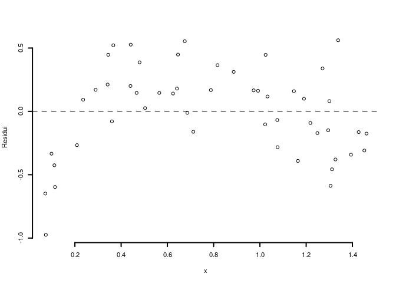
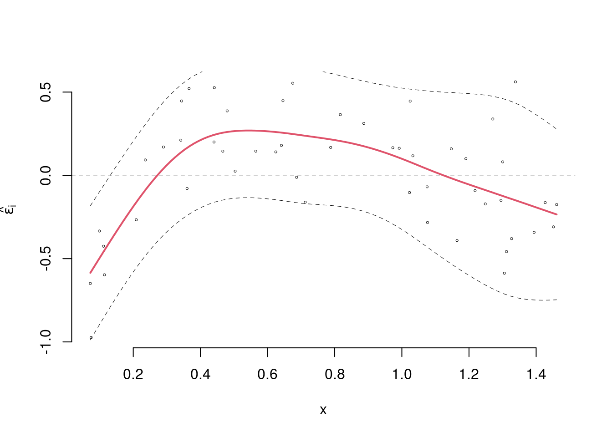
6.e (Punti 2/105 \(\rightarrow\) 0.59/31) Cosa significa dire che \(r\) è un numero puro?
Prova di Statistica 2023/06/27-2
Esercizio 1
Su un campione di \(250\) piccole imprese della provincia di Modena è stato rilevata la spesa mensile in telecomunicazioni (in euro), qui di seguito la distribuzione delle frequenze assolute:
| \([\text{x}_j,\) | \(\text{x}_{j+1})\) | \(n_j\) |
|---|---|---|
| 0 | 150 | 46 |
| 150 | 200 | 77 |
| 200 | 220 | 62 |
| 220 | 235 | 56 |
| 235 | 250 | 9 |
| 250 |
1.a (Punti 14/105 \(\rightarrow\) 4.13/31) Disegnare l’istogramma di densità percentuale.
| \([\text{x}_j,\) | \(\text{x}_{j+1})\) | \(n_j\) | \(f_j\) | \(b_j\) | \(h_j\) | \(F_j\) |
|---|---|---|---|---|---|---|
| 0 | 150 | 46 | 0.184 | 150 | 0.1227 | 0.184 |
| 150 | 200 | 77 | 0.308 | 50 | 0.6160 | 0.492 |
| 200 | 220 | 62 | 0.248 | 20 | 1.2400 | 0.740 |
| 220 | 235 | 56 | 0.224 | 15 | 1.4933 | 0.964 |
| 235 | 250 | 9 | 0.036 | 15 | 0.2400 | 1.000 |
| 250 | 1.000 | 250 |
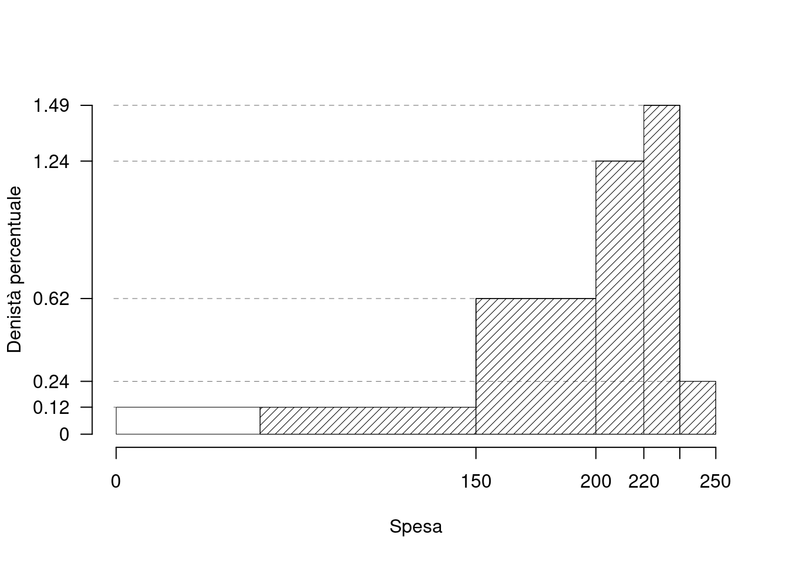
1.b (Punti 3/105 \(\rightarrow\) 0.89/31) Qual è il numero di imprese con spesa superiore ai 100 euro?
\[\begin{eqnarray*} \%(X< 100 ) &=& 100 \times h_1 \\ &=& 100 \times 0.1227 \\ &=& 0.1227 \times(100) \\ \#(X< 100 ) &\approx& 31 \end{eqnarray*}\]\[\begin{eqnarray*} \%(X> 100 ) &=& ( 150 - 100 )\times h_{ 1 }+ f_{ 2 }\times 100+f_{ 3 }\times 100+f_{ 4 }\times 100+f_{ 5 }\times 100 \\ &=& ( 50 )\times 0.1227 + ( 0.308 )\times 100+( 0.248 )\times 100+( 0.224 )\times 100+( 0.036 )\times 100 \\ &=& 0.8773 \times(100)\\ \#(X> 100 ) &\approx& 219 \end{eqnarray*}\]
1.c (Punti 2/105 \(\rightarrow\) 0.59/31) Che relazione dobbiamo attenderci tra moda, mediana e media?
1.d (Punti 2/105 \(\rightarrow\) 0.59/31) La spesa media è pari a \(\bar x=180.6032\) e varianza \(\hat\sigma^2=3061.3555\), se tutte le famiglie aumentassero del 10% la loro spesa, come cambierebbero la media e la varianza?
Esercizio 2
Si lancia una moneta perfetta \(n=6\) volte. Sia \(X\) la variabile casuale che conta il numero di volte che esce Testa su 6 lanci e si considerino gli insiemi \(A=\{X\le 1\}\) e \(B=\{X\ge 5\}\).
2.a (Punti 14/105 \(\rightarrow\) 4.13/31) Calcolare la probabilità di \(A\cup B\).
\[\begin{eqnarray*} P( X \leq 1 ) &=& \binom{ 6 }{ 0 } 0.5 ^{ 0 }(1- 0.5 )^{ 6 - 0 }+\binom{ 6 }{ 1 } 0.5 ^{ 1 }(1- 0.5 )^{ 6 - 1 } \\ &=& 0.0156+0.0937 \\ &=& 0.1093 \end{eqnarray*}\] \[\begin{eqnarray*} P( X \geq 5 ) &=& \binom{ 6 }{ 5 } 0.5 ^{ 5 }(1- 0.5 )^{ 6 - 5 }+\binom{ 6 }{ 6 } 0.5 ^{ 6 }(1- 0.5 )^{ 6 - 6 } \\ &=& 0.0938+0.0156 \\ &=& 0.1094 \end{eqnarray*}\] \[\begin{eqnarray*} A\cap B &=& \emptyset\\ P(A\cap B) &=& 0\\ P(A\cup B) &=& P(A)+P(B)-P(A\cap B)\\ &=& 0.1094+0.1094-0\\ &=& 0.2188 \end{eqnarray*}\]
2.b (Punti 3/105 \(\rightarrow\) 0.89/31) Si lancia una moneta, se esce testa si estrae da una normale \(X\sim N(0,1)\), se esce croce si estrae da una normale \(X\sim N(1,1)\). Calcolare la probabilità che il numero estratto finale sia minore di due.
\[\begin{eqnarray*} P( X < 2 ) &=& P\left( \frac { X - \mu }{ \sigma } < \frac { 2 - 0 }{\sqrt{ 1 }} \right) \\ &=& P\left( Z < 2 \right) \\ &=& \Phi( 2 ) \\ &=& 0.9772 \end{eqnarray*}\]\[\begin{eqnarray*} P( X < 2 ) &=& P\left( \frac { X - \mu }{ \sigma } < \frac { 2 - 1 }{\sqrt{ 1 }} \right) \\ &=& P\left( Z < 1 \right) \\ &=& \Phi( 1 ) \\ &=& 0.8413 \end{eqnarray*}\] \[\begin{eqnarray*} P(X<2) &=& P(T)P(X<2|T)+P(C)P(X<2|C)\\ &=& \frac 12P(X<2|T)+\frac 12P(X<2|C)\\ &=& \frac 12\cdot 0.9772+\frac 12 0.8413\\ &=& 0.9093 \end{eqnarray*}\]
2.c (Punti 2/105 \(\rightarrow\) 0.59/31) Se \(X\sim\text{Pois}(\lambda_X)\) e \(Y\sim\text{Pois}(\lambda_Y)\), quali sono valore atteso e varianza di \(X-Y\)?
2.d (Punti 2/105 \(\rightarrow\) 0.59/31) Se \(A\) e \(B\) sono due eventi non indipendenti come si può scrivere \(P(A\cap B)\)?
Esercizio 3
3.a (Punti 14/105 \(\rightarrow\) 4.13/31) Una catena di montaggio a ciclo continuo produce ogni giorno un numero di pezzi variabile, con una media pari a \(\mu=1.3\) mila pezzi al giorno e una varianza di \(\sigma^2=8.1\).
Calcolare la probabilità che la media annuale (\(n=365\)) sia inferiore a 1.2 (mila) pezzi prodotti.
Teorema del Limite Centrale (media VC qualunque)
Siano \(X_1\),…,\(X_n\), \(n=365\) VC IID, tc \(E(X_i)=\mu=1.3\) e \(V(X_i)=\sigma^2=8.1,\forall i\), posto: \[ \bar X=\frac{S_n}n =\frac{X_1 + ... + X_n}n \] allora:\[\begin{eqnarray*} \bar X & \mathop{\sim}\limits_{a}& N(\mu,\sigma^2/n) \\ &\sim & N\left(1.3,\frac{8.1}{365}\right) \\ &\sim & N(1.3,0.02219) \end{eqnarray*}\]\[\begin{eqnarray*} P( \bar X < 1.2 ) &=& P\left( \frac { \bar X - \mu }{ \sqrt{\sigma^2/n} } < \frac { 1.2 - 1.3 }{\sqrt{ 0.02219 }} \right) \\ &=& P\left( Z < -0.67 \right) \\ &=& 1-\Phi( 0.67 ) \\ &=& 0.2514 \end{eqnarray*}\]
Esercizio 4
4.a (Punti 3/105 \(\rightarrow\) 0.89/31)Sia \(\hat \lambda\) lo stimatore di massima verosimiglianza di \(\lambda\) del modello di Poisson: \[\hat\lambda = \frac 1n\sum_{i=1}^nx_i\] Scrivere la distribuzione asintotica di \(\hat \lambda\).
4.b (Punti 3/105 \(\rightarrow\) 0.89/31) Sia \(h\) uno stimatore per \(\theta\) tale che \[V(h)=2\frac\theta {\sqrt{n}};~~~~E(h)=\theta\frac{n+2}{n-1}\] \(h\) è corretto? Si può correggere?
4.c (Punti 3/105 \(\rightarrow\) 0.89/31) Definire la significatività di un test statistico.
4.d (Punti 3/105 \(\rightarrow\) 0.89/31) Se un test è significativo all’1% può essere significativo all’5%? (scegliere la risposta tra: mai, non sempre oppure sempre e motivare la risposta)
Esercizio 5
Nel comune \(A\) si è condotta un’intervista per conoscere l’opinione dei cittadini sulla presenza di un inceneritore. Sono state intervistate 25 persone a cui è stato chiesto di esprimete l’opinione in una scala da zero a 100. È risultato un punteggio medio pari a \(\hat\mu_A=72.1\) con una standard deviation \(\hat\sigma_A=3.4\)
5.a (Punti 3/105 \(\rightarrow\) 0.89/31) Costruire un intervallo di confidenza al 95% per la proporzione dei favorevoli in popolazione.
\(1-\alpha =0.95\) e quindi \(\alpha=0.05\rightarrow \alpha/2=0.025\)
\[ S =\sqrt{\frac {n}{n-1}}\cdot\hat\sigma = \sqrt{\frac { 25 }{ 24 }}\cdot 3.4 = 3.4701 \] \[\begin{eqnarray*} Idc: & & \hat\mu \pm t_{n-1;\alpha/2} \times \frac{S}{\sqrt{n}} \\ & & 72.1 \pm 2.064 \times \frac{ 3.4701 }{\sqrt{ 25 }} \\ & & 72.1 \pm 2.064 \times 0.694 \\ & & [ 70.67 , 73.53 ] \end{eqnarray*}\]
5.b (Punti 11/105 \(\rightarrow\) 3.25/31) Nel comune \(B\) si è condotta un’intervista analoga. Sono state intervistate 23 persone si è osservata una media pari \(\mu_B=69.6\) e una deviazione standard \(\hat\sigma_B=3.3\). Sotto ipotesi di omogeneità testare l’ipotesi che le medie dei due comuni siano uguali contro l’alternativa che siano diverse
Test \(T\) per due medie, (omogeneità)
\(\fbox{A}\) FORMULAZIONE DELLE IPOTESI
\[\begin{cases} H_0: \mu_\text{A} = \mu_\text{B} \\ H_1: \mu_\text{A} \neq \mu_\text{B} \end{cases}\]
\(\fbox{B}\) SCELTA E CALCOLO STATISTICA-TEST, \(T\)
L’ipotesi è di omogeneità e quindi calcoliamo:\[ S_p^2=\frac{n_\text{ A }\hat\sigma^2_\text{ A }+n_\text{ B }\hat\sigma^2_\text{ B }}{n_\text{ A }+n_\text{ B }-2} = \frac{ 25 \cdot 3.4 ^2+ 24 \cdot 3.3 ^2}{ 25 + 24 -2}= 11.71 \]
\[\begin{eqnarray*} \frac{\hat\mu_\text{ A } - \hat\mu_\text{ B }} {\sqrt{\frac {S^2_p}{n_\text{ A }}+\frac {S^2_p}{n_\text{ B }}}}&\sim&t_{n_\text{ A }+n_\text{ B }-2}\\ t_{\text{obs}} &=& \frac{ ( 72.1 - 69.6 )} {\sqrt{\frac{ 12.04 }{ 25 }+\frac{ 11.36 }{ 24 }}} = 2.556 \, . \end{eqnarray*}\]
\(\fbox{C}\) CONCLUSIONE
Siccome \(H_1\) è bilaterale, considereremo \(\alpha/2\), anziché \(\alpha\)
\(\alpha=0.1, 0.05, 0.01, 0.001\) e quindi \(\alpha/2=0.05, 0.025, 0.005, 0.0005\)
I valori critici sono
\(t_{49-2;0.05}=1.6779\); \(t_{49-2;0.025}=2.0117\); \(t_{49-2;0.005}=2.6846\); \(t_{49-2;0.0005}=3.5099\)
Siccome \(2.0117<|t_\text{obs}|=2.5565<2.6846\), quindi rifiuto \(H_0\) al 5%,
\(0.01<p_\text{value}<0.05\), significativo \(\fbox{*}\).
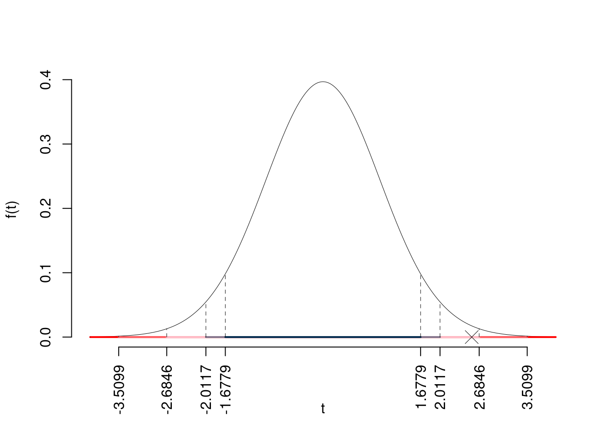
Il \(p_{\text{value}}\) è
\[ p_{\text{value}} = P(|T_{49-2}|>|2.56|)=2P(T_{49-2}>2.56)=0.013864 \]
Attenzione il calcolo del \(p_\text{value}\) con la \(T\) è puramente illustrativo e non può essere riprodotto senza una calcolatrice statistica adeguata.\[ 0.01 < p_\text{value}= 0.013864 \leq 0.05 \]
Esercizio 6
In uno studio sull’efficacia del marketing sul web si sono analizzate 50 aziende sulle quali è stato misurata l’incremento percentuale annuo medio di investimento in marketing web (\(X\)) la l’incremento percentuale in altre campagne di marketing (\(Y\)). Si osservano le seguenti statistiche, \(\sum_{i=1}^{50}x_i=36.2477\), \(\sum_{i=1}^{50}y_i=65.1958\), \(\sum_{i=1}^{50}x_i^2=33.0426\), \(\sum_{i=1}^{50}y_i^2=121.2577\) e \(\sum_{i=1}^{50}x_iy_i=34.106\).
6.a (Punti 14/105 \(\rightarrow\) 4.13/31) Stimare il modello di regressione dove \(Y\) viene spiegata da \(X\) e interpretare i coefficienti \(\hat\beta_0\) e \(\hat\beta_1\)
\[\begin{eqnarray*} \bar x &=&\frac 1 n\sum_{i=1}^n x_i = \frac {1}{ 50 } 36.248 = 0.725 \\ \bar y &=&\frac 1 n\sum_{i=1}^n y_i = \frac {1}{ 50 } 65.1957 = 1.304 \\ \hat\sigma_X^2&=&\frac 1 n\sum_{i=1}^n x_i^2-\bar x^2=\frac {1}{ 50 } 33.04 - 0.725 ^2= 0.1353 \\ \hat\sigma_Y^2&=&\frac 1 n\sum_{i=1}^n y_i^2-\bar y^2=\frac {1}{ 50 } 121.3 - 1.3039 ^2= 0.7249 \\ \text{cov}(X,Y)&=&\frac 1 n\sum_{i=1}^n x_i~y_i-\bar x\bar y=\frac {1}{ 50 } 34.11 - 0.725 \cdot 1.3039 = -0.2632 \\ \hat\beta_1 &=& \frac{\text{cov}(X,Y)}{\hat\sigma_X^2} \\ &=& \frac{ -0.2632 }{ 0.1353 } = -1.945 \\ \hat\beta_0 &=& \bar y - \hat\beta_1 \bar x\\ &=& 1.304 - (-1.9451) \times 0.725 = 2.714 \end{eqnarray*}\]
6.b (Punti 3/105 \(\rightarrow\) 0.89/31) Il modello si adatta bene ai dati?
\[\begin{eqnarray*} TSS &=& n\hat\sigma^2_Y\\ &=& 50 \times 0.7249 \\ &=& 36.25 \\ ESS &=& R^2\cdot TSS\\ &=& 0.7061 \cdot 36.25 \\ &=& 25.59 \\ RSS &=& (1-R^2)\cdot TSS\\ &=& (1- 0.7061 )\cdot 36.25 \\ &=& 10.65 \\ TSS &=& ESS+RSS \\ 36.25 &=& 25.59 + 10.65 \end{eqnarray*}\]
6.c (Punti 2/105 \(\rightarrow\) 0.59/31) Perché una previsione per \(x=0.8\) è più affidabile di una per \(x=0\)?
6.d (Punti 2/105 \(\rightarrow\) 0.59/31) Interpretare il diagramma dei residui.
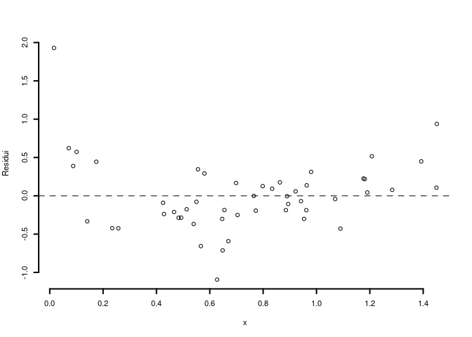
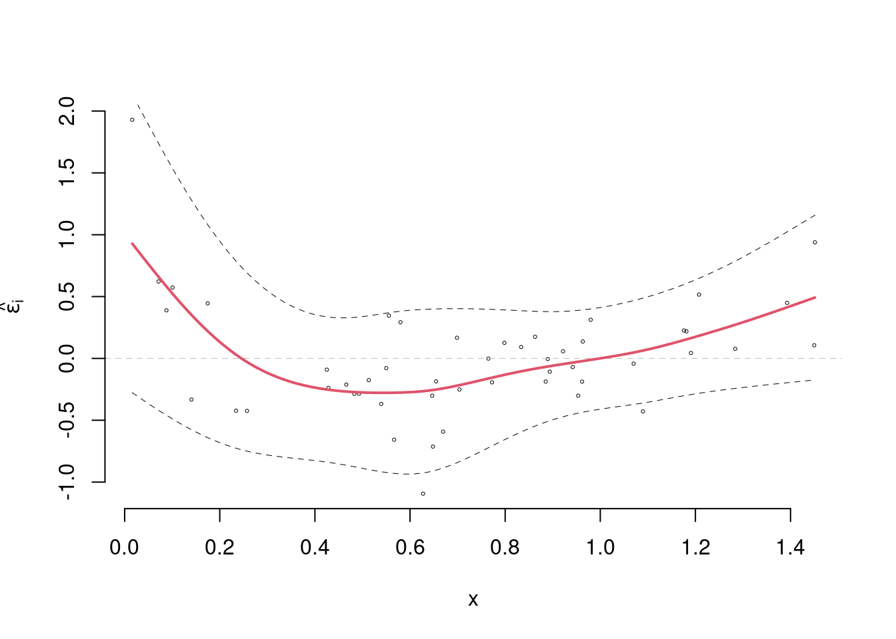
6.e (Punti 2/105 \(\rightarrow\) 0.59/31) Cosa significa dire che \(r\) è invariante ai cambiamenti di scala?
Prova di Statistica 2023/06/27-3
Esercizio 1
Su un campione di \(200\) piccole imprese della provincia di Modena è stato rilevata la spesa mensile in telecomunicazioni (in euro), qui di seguito la divisione in classi e le densità percentuali
| \([\text{x}_j,\) | \(\text{x}_{j+1})\) | \(h_j\) |
|---|---|---|
| 0 | 15 | 1.267 |
| 15 | 30 | 1.633 |
| 30 | 50 | 1.125 |
| 50 | 100 | 0.500 |
| 100 | 250 | 0.060 |
1.a (Punti 14/105 \(\rightarrow\) 4.13/31) Calcolare il valore approssimato della mediana
| \([\text{x}_j,\) | \(\text{x}_{j+1})\) | \(n_j\) | \(f_j\) | \(b_j\) | \(h_j\) | \(F_j\) |
|---|---|---|---|---|---|---|
| 0 | 15 | 38 | 0.190 | 15 | 1.267 | 0.190 |
| 15 | 30 | 49 | 0.245 | 15 | 1.633 | 0.435 |
| 30 | 50 | 45 | 0.225 | 20 | 1.125 | 0.660 |
| 50 | 100 | 50 | 0.250 | 50 | 0.500 | 0.910 |
| 100 | 250 | 18 | 0.090 | 150 | 0.060 | 1.000 |
| 200 | 1.000 | 250 |
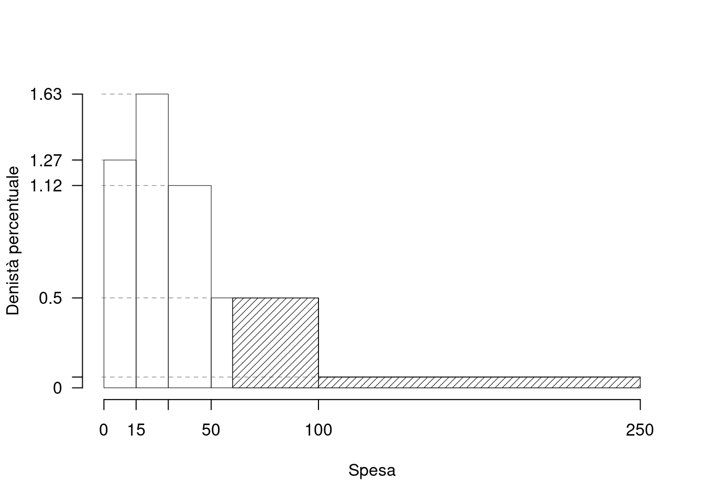\[\begin{eqnarray*} p &=& 0.5 , \text{essendo }F_{ 3 }= 0.66 > 0.5 \Rightarrow j_{ 0.5 }= 3 \\ x_{ 0.5 } &=& x_{\text{inf}; 3 } + \frac{ { 0.5 } - F_{ 2 }} {f_{ 3 }} \cdot b_{ 3 } \\ &=& 30 + \frac {{ 0.5 } - 0.435 } { 0.225 } \cdot 20 \\ &=& 35.78 \end{eqnarray*}\]
1.b (Punti 3/105 \(\rightarrow\) 0.89/31) Qual è il numero di imprese con spesa superiore ai 60 euro?
\[\begin{eqnarray*} \%(X> 60 ) &=& ( 100 - 60 )\times h_{ 4 }+ f_{ 5 }\times 100 \\ &=& ( 40 )\times 0.5 + ( 0.09 )\times 100 \\ &=& 0.29 \times(100)\\ \#(X> 60 ) &\approx& 58 \end{eqnarray*}\]
1.c (Punti 2/105 \(\rightarrow\) 0.59/31) Che relazione dobbiamo attenderci tra moda, mediana e media?
1.d (Punti 2/105 \(\rightarrow\) 0.59/31) Scrivere la proprietà di associatività della media aritmetica.
Esercizio 2
Sia \(X\sim N(2,1)\) e sia \(Y\sim\text{Pois}(2.9)\), si considerino gli insiemi \(A=\{X>2.5\}\) e \(B=\{Y\geq 3\}\).
2.a (Punti 14/105 \(\rightarrow\) 4.13/31) Calcolare la probabilità di \(A\cup B\).
\[\begin{eqnarray*} P( X > 2.5 ) &=& P\left( \frac { X - \mu }{ \sigma } > \frac { 2.5 - 2 }{\sqrt{ 1 }} \right) \\ &=& P\left( Z > 0.5 \right) \\ &=& 1-P(Z< 0.5 )\\ &=& 1-\Phi( 0.5 ) \\ &=& 0.3085 \end{eqnarray*}\]\[\begin{eqnarray*} P( Y \geq 3 ) &=& 1-P( Y < 3 ) \\ &=& 1-\left( \frac{ 2.9 ^{ 0 }}{ 0 !}e^{- 2.9 }+\frac{ 2.9 ^{ 1 }}{ 1 !}e^{- 2.9 }+\frac{ 2.9 ^{ 2 }}{ 2 !}e^{- 2.9 } \right)\\ &=& 1-( 0.055+0.1596+0.2314 )\\ &=& 1- 0.446 \\ &=& 0.554 \end{eqnarray*}\] \[\begin{eqnarray*} P(A\cup B) &=& P(A)+P(B)-P(A\cap B)\\ &=& 0.3085+0.554-0.3085\cdot0.554\\ &=& 0.6916 \end{eqnarray*}\]
2.b (Punti 3/105 \(\rightarrow\) 0.89/31) Sia \(X\sim N(2,1)\) e sia \(A=\{X>2.5\}\). Se \(A\) è vero si estrae una volta da un’urna che contiene una pallina rossa e una bianca, se \(A\) è falso si estrae una volta da un’urna che contiene due palline rosse e una bianca. Qual è la probabilità di estrarre una rossa?
\[\begin{eqnarray*} P(X<2) &=& P(A)P(R|A)+P(\bar A)P(R|\bar A)\\ &=& 0.3085\frac 12 + (1-0.3085)\frac 23\\ &=& 0.6152 \end{eqnarray*}\]
2.c (Punti 2/105 \(\rightarrow\) 0.59/31) Se \(X\sim\text{Pois}(\lambda_X)\) e \(Y\sim\text{Pois}(\lambda_Y)\), quali sono valore atteso e varianza di \(X-Y\)?
2.d (Punti 2/105 \(\rightarrow\) 0.59/31) Se due eventi \(A\ne\emptyset\) e \(B\ne\emptyset\) non sono indipendenti allora sono necessariamente incompatibili? Motivare la risposta.
Esercizio 3
3.a (Punti 14/105 \(\rightarrow\) 4.13/31) Una catena di montaggio a ciclo continuo produce un pezzo al giorno e la proporzione di pezzi fallati è pari a \(\pi=0.15\).
Calcolare la probabilità che il numero totale di pezzi fallati in un anno (\(n=365\)) sia maggiore di 60
Teorema del Limite Centrale (somma di Bernoulli)
Siano \(X_1\),…,\(X_n\), \(n=365\) VC IID, tc \(X_i\sim\text{Ber}(\pi=0.15)\)\(,\forall i\), posto: \[ S_n = X_1 + ... + X_n \] allora:\[\begin{eqnarray*} S_n & \mathop{\sim}\limits_{a}& N(n\pi,n\pi(1-\pi)) \\ &\sim & N(365\cdot0.15,365\cdot0.15\cdot(1-0.15)) \\ &\sim & N(54.75,46.54) \end{eqnarray*}\]\[\begin{eqnarray*} P( S_n > 60 ) &=& P\left( \frac { S_n - n\pi }{ \sqrt{n\pi(1-\pi)} } > \frac { 60 - 54.75 }{\sqrt{ 46.54 }} \right) \\ &=& P\left( Z > 0.77 \right) \\ &=& 1-P(Z< 0.77 )\\ &=& 1-\Phi( 0.77 ) \\ &=& 0.2206 \end{eqnarray*}\]
Esercizio 4
4.a (Punti 3/105 \(\rightarrow\) 0.89/31)Sia \(\hat \lambda\) lo stimatore di massima verosimiglianza di \(\lambda\) del modello di Poisson: \[\hat\lambda = \frac 1n\sum_{i=1}^nx_i\] Scrivere la distribuzione asintotica di \(\hat \lambda\).
4.b (Punti 3/105 \(\rightarrow\) 0.89/31) 4.c (Punti 3/105 \(\rightarrow\) 0.89/31) Sia \(h\) uno stimatore per \(\theta\) tale che \[V(h)=2\frac\theta {\sqrt{n}};~~~~E(h)=\theta\frac{n+2}{n-1}\] scrive il Mean Squared Error di \(h\) (\(MSE(h)\)).
4.d (Punti 3/105 \(\rightarrow\) 0.89/31) Definire la potenza di un test statistico.
4.e (Punti NA/105 \(\rightarrow\) NA/31) Se un t-test bilaterale con 13 gradi libertà presenta una t osservata pari a \(t_\text{obs}=1.974\), il \(p_\text{value}\) sarà maggiore o minore di 0.05? Perché?
Esercizio 5
Nel comune \(C\) si è condotta un’intervista per conoscere l’opinione dei cittadini sulla presenza di un inceneritore. Sono state intervistate 25 persone a cui è stato chiesto di esprimete l’opinione in una scala da zero a 100. È risultato un punteggio medio pari a \(\hat\mu_C=77.25\) con una standard deviation \(\hat\sigma_C=3.41\).
5.a (Punti 3/105 \(\rightarrow\) 0.89/31) Costruire un intervallo di confidenza al 95% per la proporzione dei favorevoli in popolazione.
\(1-\alpha =0.95\) e quindi \(\alpha=0.05\rightarrow \alpha/2=0.025\)
\[ S =\sqrt{\frac {n}{n-1}}\cdot\hat\sigma = \sqrt{\frac { 25 }{ 24 }}\cdot 3.41 = 3.4803 \] \[\begin{eqnarray*} Idc: & & \hat\mu \pm t_{n-1;\alpha/2} \times \frac{S}{\sqrt{n}} \\ & & 77.25 \pm 2.064 \times \frac{ 3.4803 }{\sqrt{ 25 }} \\ & & 77.25 \pm 2.064 \times 0.6961 \\ & & [ 75.81 , 78.69 ] \end{eqnarray*}\]
5.b (Punti 11/105 \(\rightarrow\) 3.25/31) Nella regione è stata condotta un’indagine analoga di larga scala che ha evidenziato un gradimento medio pari a \(\mu_0=76\) Testare l’ipotesi che nel comune \(C\) il gradimento sia uguale a quello regionale contro l’alternativa che sia maggiore.
Test \(t\) per una media, varianza incognita
\(\fbox{A}\) FORMULAZIONE DELLE IPOTESI
\[\begin{cases} H_0: \mu = \mu_0=76 \\ H_1: \mu > \mu_0=76 \end{cases}\]
\[\begin{eqnarray*} S &=& \sqrt{\frac{n} {n-1}}\ \widehat{\sigma} = \sqrt{\frac{ 25 } { 25 -1}} \times 3.41 = 3.48 \end{eqnarray*}\] \[\begin{eqnarray*} \frac{\hat\mu - \mu_{0}} {S/\,\sqrt{n}}&\sim&t_{n-1}\\ t_{\text{obs}} &=& \frac{ ( 77.25 - 76 )} { 3.48 /\sqrt{ 25 }} = 1.796 \, . \end{eqnarray*}\]
\(\fbox{C}\) CONCLUSIONE
Consideriamo \(\alpha=0.1, 0.05, 0.01, 0.001\)
I valori critici sono
\(t_{25-1;0.1}=1.3178\); \(t_{25-1;0.05}=1.7109\); \(t_{25-1;0.01}=2.4922\); \(t_{25-1;0.001}=3.4668\)
Siccome \(1.7109<t_\text{obs}=1.7958<2.4922\), quindi rifiuto \(H_0\) al 5%,
\(0.01<p_\text{value}<0.05\), significativo \(\fbox{*}\).
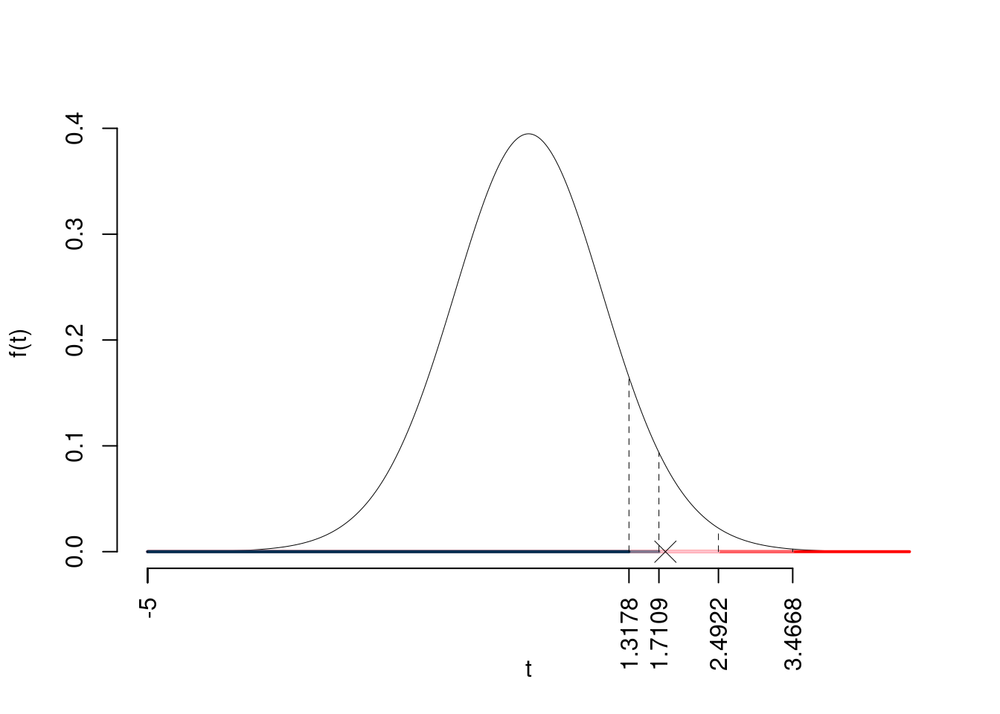
Il \(p_{\text{value}}\) è
\[ p_{\text{value}} = P(T_{25-1}>1.8)=0.042563 \]
Attenzione il calcolo del \(p_\text{value}\) con la \(T\) è puramente illustrativo e non può essere riprodotto senza una calcolatrice statistica adeguata.\[ 0.01 < p_\text{value}= 0.042563 \leq 0.05 \]
Esercizio 6
In uno studio sull’efficacia del marketing sul web si sono analizzate 4 aziende sulle quali è stato misurata l’incremento percentuale annuo medio di investimento in marketing web (\(X\)) la l’incremento percentuale in altre campagne di marketing (\(Y\)).
Qui di seguito i dati
| \(i\) | \(x_i\) | \(y_i\) |
|---|---|---|
| 1 | 0.34 | 1.48 |
| 2 | 0.37 | 0.79 |
| 3 | 0.68 | 0.82 |
| 4 | 1.02 | 0.00 |
| Totale | 2.41 | 3.09 |
6.a (Punti 14/105 \(\rightarrow\) 4.13/31) Stimare il modello di regressione dove \(Y\) viene spiegata da \(X\) e interpretare e calcolare il residuo per \(x=0.37\).
| \(i\) | \(x_i\) | \(y_i\) | \(x_i^2\) | \(y_i^2\) | \(x_i\cdot y_i\) |
|---|---|---|---|---|---|
| 1 | 0.3400 | 1.4800 | 0.12 | 2.19 | 0.5000 |
| 2 | 0.3700 | 0.7900 | 0.14 | 0.62 | 0.2900 |
| 3 | 0.6800 | 0.8200 | 0.46 | 0.67 | 0.5600 |
| 4 | 1.0200 | 0.0000 | 1.04 | 0.00 | 0.0000 |
| Totale | 2.4100 | 3.0900 | 1.76 | 3.48 | 1.3500 |
| Totale/n | 0.6025 | 0.7725 | 0.44 | 0.87 | 0.3375 |
\[\begin{eqnarray*} \bar x &=&\frac 1 n\sum_{i=1}^n x_i = \frac {1}{ 4 } 2.41 = 0.6025 \\ \bar y &=&\frac 1 n\sum_{i=1}^n y_i = \frac {1}{ 4 } 3.09 = 0.7725 \\ \hat\sigma_X^2&=&\frac 1 n\sum_{i=1}^n x_i^2-\bar x^2=\frac {1}{ 4 } 1.755 - 0.6025 ^2= 0.07582 \\ \hat\sigma_Y^2&=&\frac 1 n\sum_{i=1}^n y_i^2-\bar y^2=\frac {1}{ 4 } 3.487 - 0.7725 ^2= 0.275 \\ \text{cov}(X,Y)&=&\frac 1 n\sum_{i=1}^n x_i~y_i-\bar x\bar y=\frac {1}{ 4 } 1.353 - 0.6025 \cdot 0.7725 = -0.1272 \\ \hat\beta_1 &=& \frac{\text{cov}(X,Y)}{\hat\sigma_X^2} \\ &=& \frac{ -0.1272 }{ 0.07582 } = -1.677 \\ \hat\beta_0 &=& \bar y - \hat\beta_1 \bar x\\ &=& 0.7725 - (-1.6771) \times 0.6025 = 1.783 \end{eqnarray*}\]\[\begin{eqnarray*} \hat y_i &=&\hat\beta_0+\hat\beta_1 x_i=\\ &=& 1.783 + (-1.6771) \times 0.37 = 1.162 \\ \hat \varepsilon_i &=& y_i-\hat y_i\\ &=& 0.79 - 1.162 = -0.3724 \end{eqnarray*}\]
6.b (Punti 3/105 \(\rightarrow\) 0.89/31) Il modello si adatta bene ai dati?
\[\begin{eqnarray*} r&=&\frac{\text{cov}(X,Y)}{\sigma_X\sigma_Y}=\frac{ -0.1272 }{ 0.2754 \times 0.5244 }= -0.8807 \\r^2&=& 0.7756 > 0.75 \end{eqnarray*}\] Il modello si adatta bene ai dati.
:::
6.c (Punti 2/105 \(\rightarrow\) 0.59/31) Che differenza c’è tra interpolazione ed estrapolazione?
6.d (Punti 2/105 \(\rightarrow\) 0.59/31) Definire il diagramma dei residui.
6.e (Punti 2/105 \(\rightarrow\) 0.59/31) Cosa significa che \(\hat\beta_0\) e \(\hat\beta_1\) sono BLUE?
Prova di Statistica 2023/07/23-1
Esercizio 1
Su un campione di \(180\) di piccole e medie aziende della provincia di Modena è stato rilevato l’utile netto (espresso in centinaia di migliaia di euro) durante il periodo del covid. Qui di seguito la distribuzione delle frequenze assolute:
| \([\text{x}_j,\) | \(\text{x}_{j+1})\) | \(n_j\) |
|---|---|---|
| -10 | -5 | 43 |
| -5 | 0 | 86 |
| 0 | 1 | 43 |
| 1 | 5 | 8 |
| 180 |
1.a (Punti 14/105 \(\rightarrow\) 4.13/31) Individuare la classe modale
| \([\text{x}_j,\) | \(\text{x}_{j+1})\) | \(n_j\) | \(f_j\) | \(b_j\) | \(h_j\) | \(F_j\) |
|---|---|---|---|---|---|---|
| -10 | -5 | 43 | 0.2389 | 5 | 4.778 | 0.2389 |
| -5 | 0 | 86 | 0.4778 | 5 | 9.556 | 0.7167 |
| 0 | 1 | 43 | 0.2389 | 1 | 23.889 | 0.9556 |
| 1 | 5 | 8 | 0.0444 | 4 | 1.111 | 1.0000 |
| 180 | 1.0000 | 15 |
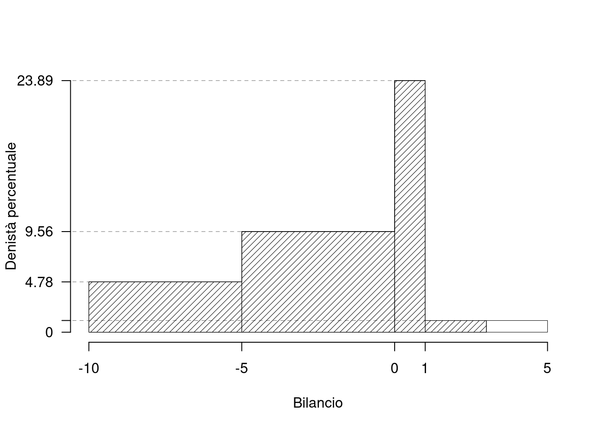
1.b (Punti 3/105 \(\rightarrow\) 0.89/31) Qual è la percentuale di imprese con bilancio inferiore a 3 (centomila) euro?
\[\begin{eqnarray*} \%(X< 3 ) &=& f_{ 1 }\times 100+f_{ 2 }\times 100+f_{ 3 }\times 100 +( 3 - 1 )\times h_{ 4 } \\ &=& ( 0.2389 )\times 100+( 0.4778 )\times 100+( 0.2389 )\times 100 +( 2 )\times 1.111 \\ &=& 0.9778 \times(100) \\ \#(X< 3 ) &\approx& 176 \end{eqnarray*}\]
1.c (Punti 2/105 \(\rightarrow\) 0.59/31) la media aritmetica è pari a -2.6643, in base al punto 1a che relazione dobbiamo attenderci tra media, mediana e moda?
1.d (Punti 2/105 \(\rightarrow\) 0.59/31) Si considerino i seguenti dati
\[ \{x_1=1.2,x_2=2.3,x_3=6.7\} \]
Per quale valore di \(x\) \[ f(x)=(x_1-x)^2+(x_2-x)^2+(x_3-x)^2 \] \(f\) è minima?
Esercizio 2
Il numero di automobili in fila al semaforo \(A\) in orario di punta è distribuito come una Poisson di parametro \(\lambda_A=2.2\) (\(X_A\sim \text{Pois}(2.2)\)). Mentre il numero di automobili in fila al semaforo \(B\) in orario di punta è distribuito come una Poisson di parametro \(\lambda_B=1.5\) (\(X_B\sim \text{Pois}(1.5)\)). \(X_A\) e \(X_B\) indipendenti.
2.a (Punti 14/105 \(\rightarrow\) 4.13/31) Calcolare la probabilità che in almeno uno dei due semafori ci siano 2 o più automobili in coda (suggerimento: almeno uno si rappresenta con l’unione).
Diretta \[\begin{eqnarray*} P( X_A \geq 2 ) &=& 1-P( X_A < 2 ) \\ &=& 1-\left( \frac{ 2.2 ^{ 0 }}{ 0 !}e^{- 2.2 }+\frac{ 2.2 ^{ 1 }}{ 1 !}e^{- 2.2 } \right)\\ &=& 1-( 0.1108+0.2438 )\\ &=& 1- 0.3546 \\ &=& 0.6454 \end{eqnarray*}\] \[\begin{eqnarray*} P( X_B \geq 2 ) &=& 1-P( X_B < 2 ) \\ &=& 1-\left( \frac{ 1.5 ^{ 0 }}{ 0 !}e^{- 1.5 }+\frac{ 1.5 ^{ 1 }}{ 1 !}e^{- 1.5 } \right)\\ &=& 1-( 0.2231+0.3347 )\\ &=& 1- 0.5578 \\ &=& 0.4422 \end{eqnarray*}\] \[\begin{eqnarray*} A =\{X_A\ge 2\} && B =\{X_B\ge 2\}\\ P(A\cup B) &=& P(A)+P(B)-P(A\cap B)\\ &=& 0.6454+0.4422-0.2854\\ &=& 0.8022 \end{eqnarray*}\] Indiretta \[\begin{eqnarray*} \overline{\text{almeno uno}} &=& \text{nessuno}\\ \overline{A\cup B} &=& \bar A\cap \bar B\\ P(\overline{A\cup B}) &=& P(\bar A)P(\bar B)\\ P(A\cup B) &=& 1- P(X_A<2)(X_B<2)\\ &=& 1-(1-0.6454 )\times(1-0.4422)\\ &=& 0.8022 \end{eqnarray*}\]
2.b (Punti 3/105 \(\rightarrow\) 0.89/31) Per andare al lavoro Michele prende la strada che lo porta al semaforo \(A\), (\(X_A\sim \text{Pois}(2.2)\)) se la tangenziale è libera, altrimenti prende la strada che lo porta al semaforo \(B\) (\(X_B\sim \text{Pois}(1.5)\)). La probabilità di trovare la tangenziale sia libera è pari a \(P(\text{Libera})=0.65\). Qual è la probabilità che Michele incontri più di due auto in fila?
\[\begin{eqnarray*} E &=& \{X\ge 2\}\\ P(E) &=& P(\text{Libera})P(E|\text{Libera})+P\left(\overline{\text{Libera}}\right)P\left(E|\overline{\text{Libera}}\right)\\ &=& 0.65\times0.6454+(1-0.65)\times 0.4422\\ &=& 0.5743 \end{eqnarray*}\]
2.c (Punti 2/105 \(\rightarrow\) 0.59/31) Sia \(Z\sim N(0,1)\) e \(Y\sim \chi^2_2\), \(Z\) e \(Y\) indipendenti. Come si distribuisce \[ \frac{Z}{\sqrt{Y/2}} ~~~? \]
2.d (Punti 2/105 \(\rightarrow\) 0.59/31) Se \(P(A)=0.3\), \(P(B|A)=0.6\), e \(P(B|\bar A)=0.4\), quanto valgono \(P(B)\) e \(P(A|B)\)?
\[\begin{eqnarray*} P(B) &=& P(A)P(B|A)+P(\bar A)P(B|\bar A)\\ &=& 0.3\times0.6+0.7\times 0.4\\ &=& 0.46\\ P(A|B) &=& \frac {P(A)P(B|A)}{P(B)}\\ &=& \frac {0.18}{0.46}\\ &=& 0.3913 \end{eqnarray*}\]
Esercizio 3
3.a (Punti 14/105 \(\rightarrow\) 4.13/31) Un’urna contiene le seguenti palline numerate {3,5,7,11}. Si estrae con reintroduzione per \(n=81\) volte. Calcolare la probabilità che la media delle palline estratte sia inferiore a 6.
\[\begin{eqnarray*} \mu &=& E(X_i) = \sum_{x\in S_X}x P(X=x)\\ &=& 3 \frac { 1 }{ 4 }+ 5 \frac { 1 }{ 4 }+ 7 \frac { 1 }{ 4 }+ 11 \frac { 1 }{ 4 } \\ &=& 6.5 \\ \sigma^2 &=& V(X_i) = \sum_{x\in S_X}x^2 P(X=x)-\mu^2\\ &=&\left( 3 ^2\frac { 1 }{ 4 }+ 5 ^2\frac { 1 }{ 4 }+ 7 ^2\frac { 1 }{ 4 }+ 11 ^2\frac { 1 }{ 4 } \right)-( 6.5 )^2\\ &=& 8.75 \end{eqnarray*}\] Teorema del Limite Centrale (media VC qualunque)
Siano \(X_1\),…,\(X_n\), \(n=81\) VC IID, tc \(E(X_i)=\mu=6.5\) e \(V(X_i)=\sigma^2=8.75,\forall i\), posto: \[ \bar X=\frac{S_n}n =\frac{X_1 + ... + X_n}n \] allora:\[\begin{eqnarray*} \bar X & \mathop{\sim}\limits_{a}& N(\mu,\sigma^2/n) \\ &\sim & N\left(6.5,\frac{8.75}{81}\right) \\ &\sim & N(6.5,0.108) \end{eqnarray*}\]\[\begin{eqnarray*} P( \bar X < 6 ) &=& P\left( \frac { \bar X - \mu }{ \sqrt{\sigma^2/n} } < \frac { 6 - 6.5 }{\sqrt{ 0.108 }} \right) \\ &=& P\left( Z < -1.52 \right) \\ &=& 1-\Phi( 1.52 ) \\ &=& 0.0643 \end{eqnarray*}\]
Esercizio 4
4.a (Punti 3/105 \(\rightarrow\) 0.89/31) Siano \(\hat \mu\) e \(\hat\sigma^2\) gli stimatori di massima verosimiglianza di \(\mu\) e \(\sigma^2\) del modello di Normale. \[\begin{eqnarray*} \hat\mu &=& \frac 1n\sum_{i=1}^nx_i \qquad \hat\sigma^2 = \frac 1n\sum_{i=1}^n(x_i-\hat\mu)^2\\ \end{eqnarray*}\] Dimostrare la consistenza di \(\hat\mu\).
4.b (Punti 3/105 \(\rightarrow\) 0.89/31) Cosa significa che gli stimatori di massima verosimiglianza sono invarianti alle trasformazioni monotone invertibili?
4.c (Punti 3/105 \(\rightarrow\) 0.89/31) Definire la significatività di un test.
4.d (Punti 3/105 \(\rightarrow\) 0.89/31) Un sociologo sta conducendo uno studio sull’associazione tra l’orientamento politico e l’atteggiamento nei confronti del cambiamento climatico. Ha somministrato un questionario a 540 partecipanti, chiedendo loro di indicare il proprio orientamento politico (Conservatore, Progressista, Indipendente) e l’atteggiamento nei confronti del cambiamento climatico (Molto, poco, per nulla) preoccupato. L’obiettivo è determinare se c’è un’associazione significativa tra l’orientamento politico e l’atteggiamento nei confronti del cambiamento climatico.
|
Preoccupato per i cambiamenti climatici
|
|||
|---|---|---|---|
| Molto | Poco | Per nulla | |
| Orientamento politico | |||
| Conservatore | 50 | 120 | 50 |
| Progressista | 60 | 80 | 40 |
| Indipendente | 40 | 50 | 50 |
Eseguito il test del \(\chi^2\) per verificare l’indipendenza tra l’orientamento politico e la preoccupazione sui cambiamenti climatici il sociologo ottiene un \(p_\text{value}=0.00135\). Quali conclusioni può trarne?
Esercizio 5
5.a (Punti 3/105 \(\rightarrow\) 0.89/31) In uno studio sulle spese mensili dei dipendenti di un’azienda, è stato selezionato un campione di 10 individui. I dati campionari hanno mostrato una media di spese mensili pari a \(\hat\mu = 1200€\) con una deviazione standard osservata pari a \(\hat\sigma = 300€\). Costruire un intervallo di confidenza al 95% per la media delle spese mensili \(\mu\).
\(1-\alpha =0.95\) e quindi \(\alpha=0.05\rightarrow \alpha/2=0.025\)
\[ S =\sqrt{\frac {n}{n-1}}\cdot\hat\sigma = \sqrt{\frac { 10 }{ 9 }}\cdot 300 = 316.2278 \] \[\begin{eqnarray*} Idc: & & \hat\mu \pm t_{n-1;\alpha/2} \times \frac{S}{\sqrt{n}} \\ & & 1200 \pm 2.262 \times \frac{ 316.2278 }{\sqrt{ 10 }} \\ & & 1200 \pm 2.262 \times 100 \\ & & [ 973.8 , 1426 ] \end{eqnarray*}\]
5.b (Punti 11/105 \(\rightarrow\) 3.25/31) L’azienda afferma che la media delle spese mensili dei dipendenti è pari a \(1100€\). Effettuare un test di ipotesi per verificare se la media delle spese mensili sia superiore a \(1100€\).
Test \(t\) per una media, varianza incognita
\(\fbox{A}\) FORMULAZIONE DELLE IPOTESI
\[\begin{cases} H_0: \mu = \mu_0=1100€ \\ H_1: \mu > \mu_0=1100€ \end{cases}\]
\[\begin{eqnarray*} S &=& \sqrt{\frac{n} {n-1}}\ \widehat{\sigma} = \sqrt{\frac{ 10 } { 10 -1}} \times 300 = 316.2 \end{eqnarray*}\] \[\begin{eqnarray*} \frac{\hat\mu - \mu_{0}} {S/\,\sqrt{n}}&\sim&t_{n-1}\\ t_{\text{obs}} &=& \frac{ ( 1200 - 1100 )} { 316.2 /\sqrt{ 10 }} = 1 \, . \end{eqnarray*}\]
\(\fbox{C}\) CONCLUSIONE
Consideriamo \(\alpha=0.1, 0.05, 0.01, 0.001\)
I valori critici sono
\(t_{10-1;0.1}=1.383\); \(t_{10-1;0.05}=1.8331\); \(t_{10-1;0.01}=2.8214\); \(t_{10-1;0.001}=4.2968\)
Siccome \(t_\text{obs}=1<t_{10-1;0.1}=1.383\), quindi non rifiuto \(H_0\) a nessun livello di significatività,
\(p_\text{value}>0.1\), non significativo
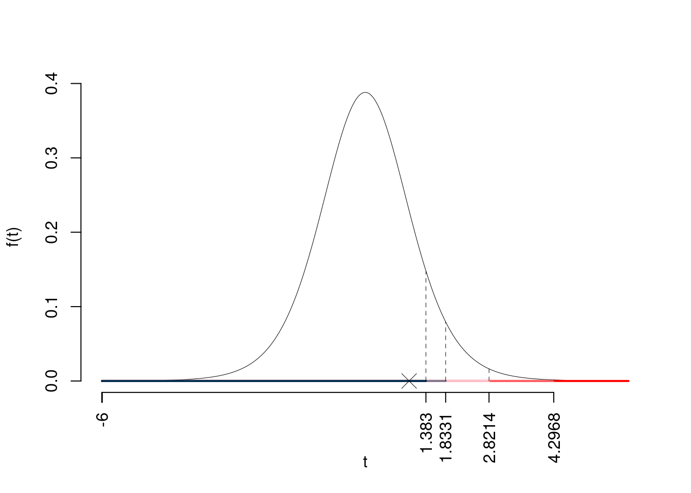
Il \(p_{\text{value}}\) è
\[ p_{\text{value}} = P(T_{10-1}>1)=0.171718 \]
Attenzione il calcolo del \(p_\text{value}\) con la \(T\) è puramente illustrativo e non può essere riprodotto senza una calcolatrice statistica adeguata.\[ 0.1 < p_\text{value}= 0.171718 \leq 1 \]
Esercizio 6
In uno studio sul reddito, in un campione di \(n=50\) individui, sono state analizzati il livello di istruzione (in anni di studio, \(X\)) e il reddito annuale (in migliaia di euro, \(Y\)).
Si osservano le seguenti statistiche, \(\sum_{i=1}^{50}x_i=521\), \(\sum_{i=1}^{50}y_i=1809\), \(\sum_{i=1}^{50}x_i^2=5985\), \(\sum_{i=1}^{50}y_i^2=68735\) e \(\sum_{i=1}^{50}x_iy_i=19904\).
6.a (Punti 14/105 \(\rightarrow\) 4.13/31) Stimare il modello di regressione dove \(Y\) viene spiegata da \(X\) e prevedere il reddito per un individuo con 12 anni di studio.
\[\begin{eqnarray*} \bar x &=&\frac 1 n\sum_{i=1}^n x_i = \frac {1}{ 50 } 521 = 10.42 \\ \bar y &=&\frac 1 n\sum_{i=1}^n y_i = \frac {1}{ 50 } 1809 = 36.18 \\ \hat\sigma_X^2&=&\frac 1 n\sum_{i=1}^n x_i^2-\bar x^2=\frac {1}{ 50 } 5985 - 10.42 ^2= 11.12 \\ \hat\sigma_Y^2&=&\frac 1 n\sum_{i=1}^n y_i^2-\bar y^2=\frac {1}{ 50 } 68735 - 36.18 ^2= 65.71 \\ \text{cov}(X,Y)&=&\frac 1 n\sum_{i=1}^n x_i~y_i-\bar x\bar y=\frac {1}{ 50 } 19904 - 10.42 \cdot 36.18 = 21.09 \\ \hat\beta_1 &=& \frac{\text{cov}(X,Y)}{\hat\sigma_X^2} \\ &=& \frac{ 21.09 }{ 11.12 } = 1.896 \\ \hat\beta_0 &=& \bar y - \hat\beta_1 \bar x\\ &=& 36.18 - 1.896 \times 10.42 = 16.42 \end{eqnarray*}\]\[\hat y_{X= 12 }=\hat\beta_0+\hat\beta_1 x= 16.42 + 1.896 \times 12 = 39.18 \]
6.b (Punti 3/105 \(\rightarrow\) 0.89/31) Qual è la percentuale di varianza spiegata dal modello?
\[\begin{eqnarray*} r&=&\frac{\text{cov}(X,Y)}{\sigma_X\sigma_Y}=\frac{ 21.09 }{ 3.335 \times 8.106 }= 0.7801 \\r^2&=& 0.6085 < 0.75 \end{eqnarray*}\] Il modello non si adatta bene ai dati.
6.c (Punti 2/105 \(\rightarrow\) 0.59/31) Stimare lo Standard Error di \(\hat\beta_1\).
\[\begin{eqnarray*} \hat{\sigma_\varepsilon}^2&=&(1-r^2)\hat\sigma_Y^2\\ &=& (1- 0.6085 )\times 65.71 \\ &=& 25.72 \\ S_\varepsilon^2 &=& \frac{n} {n-2} \hat{\sigma_\varepsilon}^2\\ &=& \frac{ 50 } { 50 -2} \hat{\sigma_\varepsilon}^2 \\ &=& \frac{ 50 } { 50 -2} \times 25.72 = 26.79 \end{eqnarray*}\]
E quindi\[\begin{eqnarray*} V(\hat\beta_{1}) &=& \frac{\sigma_{\varepsilon}^{2}} {n \hat{\sigma}^{2}_{X}} \\ \widehat{V(\hat\beta_{1})} &=& \frac{S_{\varepsilon}^{2}} {n \hat{\sigma}^{2}_{X}} \\ &=& \frac{ 26.79 } { 50 \times 11.12 } = 0.04817 \\ \widehat{SE(\hat\beta_{1})} &=& \sqrt{ 0.04817 }\\ &=& 0.2195 \end{eqnarray*}\]
6.d (Punti 2/105 \(\rightarrow\) 0.59/31) Definire i punti di leva.
6.e (Punti 2/105 \(\rightarrow\) 0.59/31) Se in un modello di regressione sappiamo che \(\hat\sigma_X=0.5\), \(\hat\sigma_Y=1.2\) e \(r=0.8\), quanto varrà \(\hat\beta_1\), il coefficiente angolare del modello di regressione dove \(Y\) viene spiegata da \(X\)?
Prova di Statistica 2023/07/23-2
Esercizio 1
Su un campione di \(200\) famiglie della provincia di Modena è stata rilevata la quantità mensile di ore dedicate all’utilizzo di servizi di streaming. Di seguito è riportata la distribuzione delle frequenze percentuali:
| \([\text{x}_j,\) | \(\text{x}_{j+1})\) | \(f_{j\%}\) |
|---|---|---|
| 0 | 2 | 7.5 |
| 2 | 5 | 19.5 |
| 5 | 10 | 22.0 |
| 10 | 20 | 29.0 |
| 20 | 50 | 22.0 |
| 100.0 |
1.a (Punti 14/105 \(\rightarrow\) 4.13/31) Individuare la classe modale.
| \([\text{x}_j,\) | \(\text{x}_{j+1})\) | \(n_j\) | \(f_j\) | \(b_j\) | \(h_j\) | \(F_j\) |
|---|---|---|---|---|---|---|
| 0 | 2 | 15 | 0.075 | 2 | 3.7500 | 0.075 |
| 2 | 5 | 39 | 0.195 | 3 | 6.5000 | 0.270 |
| 5 | 10 | 44 | 0.220 | 5 | 4.4000 | 0.490 |
| 10 | 20 | 58 | 0.290 | 10 | 2.9000 | 0.780 |
| 20 | 50 | 44 | 0.220 | 30 | 0.7333 | 1.000 |
| 200 | 1.000 | 50 |
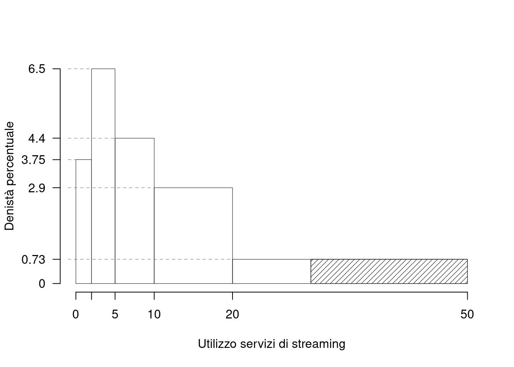
1.b (Punti 3/105 \(\rightarrow\) 0.89/31) Qual è il numero di famiglie che consuma più di 30 ore di streaming?
\[\begin{eqnarray*} p &=& 0.5 , \text{essendo }F_{ 4 }= 0.78 > 0.5 \Rightarrow j_{ 0.5 }= 4 \\ x_{ 0.5 } &=& x_{\text{inf}; 4 } + \frac{ { 0.5 } - F_{ 3 }} {f_{ 4 }} \cdot b_{ 4 } \\ &=& 10 + \frac {{ 0.5 } - 0.49 } { 0.29 } \cdot 10 \\ &=& 10.34 \end{eqnarray*}\] \[\begin{eqnarray*} \%(X> 30 ) &=&( 50 - 30 )\times h_1 \\ &=& 20 \times 0.7333 \\ &=& 0.1467 \times(100)\\ \#(X> 30 ) &\approx& 29 \end{eqnarray*}\]
1.c (Punti 2/105 \(\rightarrow\) 0.59/31) la media aritmetica è pari a 14.7934, in base al punto 1a che relazione dobbiamo attenderci tra media, mediana e moda?
1.d (Punti 2/105 \(\rightarrow\) 0.59/31) Si considerino i seguenti dati
\[ \{x_1=1.2,x_2=2.3,x_3=6.7\} \]
Per quale valore di \(x\) \[ f(x)=|x_1-x|+|x_2-x|+|x_3-x| \] \(f\) è minima?
Esercizio 2
Siano \(X\) e \(Y\) due variabili casuali che rappresentano rispettivamente il tempo di manutenzione per due tipi di macchinari diversi in un’azienda manifatturiera. Si sa che \(X\sim N(15,1.5)\) e \(Y\sim N(12,1.5)\). L’azienda ha definito due eventi \(A=\{X< 14\}\) e \(B=\{Y<13\}\) Si suppone inoltre che i tempi di manutenzione dei due macchinari siano indipendenti tra loro.
2.a (Punti 14/105 \(\rightarrow\) 4.13/31) Calcola la probabilità che almeno uno dei due eventi sia vero (\(A \cup B\)).
\[\begin{eqnarray*} P( X < 14 ) &=& P\left( \frac { X - \mu_X }{ \sigma_X } < \frac { 14 - 15 }{\sqrt{ 1.5 }} \right) \\ &=& P\left( Z < -0.82 \right) \\ &=& 1-\Phi( 0.82 ) \\ &=& 0.2061 \end{eqnarray*}\]\[\begin{eqnarray*} P( Y < 13 ) &=& P\left( \frac { Y - \mu_Y }{ \sigma_Y } < \frac { 13 - 12 }{\sqrt{ 1.5 }} \right) \\ &=& P\left( Z < 0.82 \right) \\ &=& \Phi( 0.82 ) \\ &=& 0.7939 \end{eqnarray*}\] \[\begin{eqnarray*} P(A\cup B) &=& P(A)+P(B)-P(A\cap B)\\ &=& 0.2071+0.7929-0.1642\\ &=& 0.8358 \end{eqnarray*}\]
2.b (Punti 3/105 \(\rightarrow\) 0.89/31) Quando il tempo di manutenzione del macchinario \(X\) è inferiore a 14 ore (\(A=\{X< 14\}\)), la perdita economica dell’azienda è di €100. Mentre quando è superiore a 14 la perdita è di 500€.
Quando il tempo di manutenzione del macchinario \(Y\) è inferiore a 12 ore (\(B=\{Y< 12\}\)), l’azienda subisce una perdita economica di €70, mentre quando è superiore a 12 il danno economico è di 600€.
Calcolare la probabilità che l’azienda abbia una perdita economica totale superiore ai 600€.
\[ \begin{array}{ r|rrrr } & 70 &\color{blue}{ 0.7929 } & 600 &\color{blue}{ 0.2071 }\\ \hline 100 ~~\color{blue}{ 0.2071 }& 170;& \color{red}{0.1642}& 570;& \color{red}{0.6287}\\ 500 ~~\color{blue}{ 0.7929 }& 700;& \color{red}{0.0429}& 1100;& \color{red}{0.1642}\\ \end{array} \]
E ricaviamo la distribuzione di, X
\[ \begin{array}{ r|rrrr } X & 170& 570& 700& 1100 \\ \hline P(X) & 0.1642& 0.6287& 0.0429& 0.1642 \\ \end{array} \] [1] 0.2071
2.c (Punti 2/105 \(\rightarrow\) 0.59/31) Siano \(Z_1\sim N(0,1)\), \(Z_2\sim N(0,1)\), \(Z_3\sim N(0,1)\), tre VC normali standard indipendenti. Come si distribuisce \[ Y=Z_1^2+Z_2^2+Z_3^3~~~? \]
2.d (Punti 2/105 \(\rightarrow\) 0.59/31) Se \(A\) e \(B\) sono due eventi tali che \(A\cap B\ne\emptyset\), \(A\) e \(B\) sono indipendenti? (scegliere tra sempre, mai, dipende e motivare la risposta)
Esercizio 3
3.a (Punti 14/105 \(\rightarrow\) 4.13/31) Un’urna contiene le seguenti palline numerate {3,4,5,6,7,11}. Si vine se esce un numero pari. Si estrae con reintroduzione per \(n=81\) volte. Calcolare la probabilità di vincere più di 30 volte.
\[\pi=\frac 13\] Teorema del Limite Centrale (somma di Bernoulli)
Siano \(X_1\),…,\(X_n\), \(n=81\) VC IID, tc \(X_i\sim\text{Ber}(\pi=0.3333)\)\(,\forall i\), posto: \[ S_n = X_1 + ... + X_n \] allora:\[\begin{eqnarray*} S_n & \mathop{\sim}\limits_{a}& N(n\pi,n\pi(1-\pi)) \\ &\sim & N(81\cdot0.3333,81\cdot0.3333\cdot(1-0.3333)) \\ &\sim & N(27,18) \end{eqnarray*}\]\[\begin{eqnarray*} P( S_n > 30 ) &=& P\left( \frac { S_n - n\pi }{ \sqrt{n\pi(1-\pi)} } > \frac { 30 - 27 }{\sqrt{ 18 }} \right) \\ &=& P\left( Z > 0.71 \right) \\ &=& 1-P(Z< 0.71 )\\ &=& 1-\Phi( 0.71 ) \\ &=& 0.2389 \end{eqnarray*}\]
Esercizio 4
4.a (Punti 3/105 \(\rightarrow\) 0.89/31) Sia \(\hat \beta_1\) lo stimatore dei minimi quadrati di \(\beta_1\) del modello di regressione lineare. \[\begin{eqnarray*} \hat\beta_1 &=& \frac{\text{cov}(X,Y)}{\hat\sigma_X^2}\\ \end{eqnarray*}\] Dimostrare la consistenza di \(\hat\beta_1\).
4.b (Punti 3/105 \(\rightarrow\) 0.89/31) Come si distribuiscono gli stimatori di massima verosimiglianze asintoticamente?
4.c (Punti 3/105 \(\rightarrow\) 0.89/31) Definire la potenza di un test.
4.d (Punti 3/105 \(\rightarrow\) 0.89/31) Un sociologo sta conducendo uno studio sull’associazione tra l’orientamento politico e l’atteggiamento nei confronti del cambiamento climatico. Ha somministrato un questionario a 500 partecipanti, chiedendo loro di indicare il proprio orientamento politico (Conservatore, Progressista, Indipendente) e l’atteggiamento nei confronti del cambiamento climatico (Molto, poco, per nulla) preoccupato. L’obiettivo è determinare se c’è un’associazione significativa tra l’orientamento politico e l’atteggiamento nei confronti del cambiamento climatico.
|
Preoccupato per i cambiamenti climatici
|
|||
|---|---|---|---|
| Molto | Poco | Per nulla | |
| Orientamento politico | |||
| Conservatore | 50 | 80 | 50 |
| Progressista | 60 | 80 | 40 |
| Indipendente | 40 | 50 | 50 |
Eseguito il test del \(\chi^2\) per verificare l’indipendenza tra l’orientamento politico e la preoccupazione sui cambiamenti climatici il sociologo ottiene un \(p_\text{value}=0.09114\). Quali conclusioni può trarne?
Esercizio 5
5.a (Punti 14/105 \(\rightarrow\) 4.13/31) In uno studio clinico per valutare l’efficacia di un nuovo farmaco, sono stati selezionati 80 pazienti con una particolare condizione medica. Tra questi, 48 pazienti hanno mostrato un miglioramento utilizzando il nuovo farmaco. Testare usando il \(p_\text{value}\) che il farmaco sia maggiormente efficace rispetto al trattamento esistente che una proporzione pari a \(\pi_0 = 0.5\)
Test \(Z\) per una proporzione
La stima \[\hat\pi=\frac { 48 } { 80 }= 0.6 \]
\(\fbox{A}\) FORMULAZIONE DELLE IPOTESI
\[\begin{cases} H_0: \pi = \pi_0=0.5 \\ H_1: \pi > \pi_0=0.5 \end{cases}\]
\(\fbox{B}\) SCELTA E CALCOLO STATISTICA-TEST, \(Z\) Test Binomiale per \(n\) grande: \(\Rightarrow\) z-Test.
\[\begin{eqnarray*} \frac{\hat\pi - \pi_{0}} {\sqrt {\pi_0(1-\pi_0)/\,n}}&\sim&N(0,1)\\ z_{\text{obs}} &=& \frac{ ( 0.6 - 0.5 )} {\sqrt{ 0.5 (1- 0.5 )/ 80 }} = 1.789 \,. \end{eqnarray*}\]
\(\fbox{C}\) CONCLUSIONE
Il \(p_{\text{value}}\) è
\[ p_{\text{value}} = P(Z>1.79)=0.036819 \]
\[ 0.01 < p_\text{value}= 0.036819 \leq 0.05 \]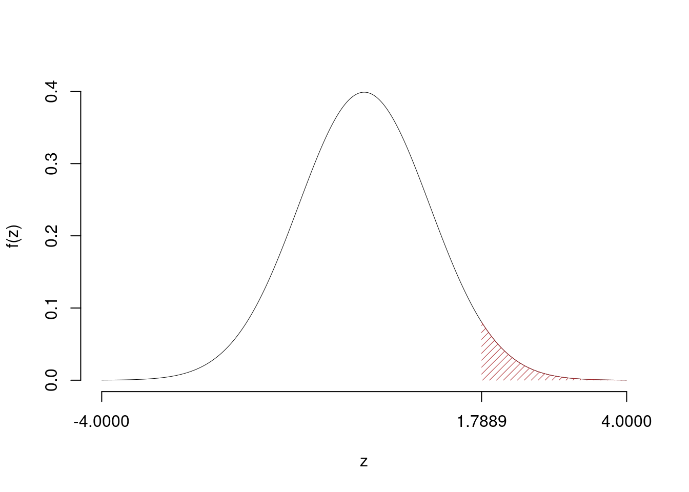
Rifiuto \(H_0\) al 5%,
\(0.01<p_\text{value}<0.05\), significativo \(\fbox{*}\).
Esercizio 6
In uno studio sul reddito, in un campione di \(n=50\) individui, sono state analizzati il livello di istruzione (in anni di studio, \(X\)) e il reddito annuale (in migliaia di euro, \(Y\)). Si osservano le seguenti statistiche, \(\sum_{i=1}^{50}x_i=546\), \(\sum_{i=1}^{50}y_i=1579\), \(\sum_{i=1}^{50}x_i^2=6654\), \(\sum_{i=1}^{50}y_i^2=52221\) e \(\sum_{i=1}^{50}x_iy_i=18216\).
6.a (Punti 14/105 \(\rightarrow\) 4.13/31) Si è osservato \(x_3=10\) e \(y_3=31.84\), stimare il modello di regressione dove \(Y\) viene spiegata da \(X\) e calcolare il residuo per il punto \(i=3\).
\[\begin{eqnarray*} \bar x &=&\frac 1 n\sum_{i=1}^n x_i = \frac {1}{ 50 } 546 = 10.92 \\ \bar y &=&\frac 1 n\sum_{i=1}^n y_i = \frac {1}{ 50 } 1579 = 31.58 \\ \hat\sigma_X^2&=&\frac 1 n\sum_{i=1}^n x_i^2-\bar x^2=\frac {1}{ 50 } 6654 - 10.92 ^2= 13.83 \\ \hat\sigma_Y^2&=&\frac 1 n\sum_{i=1}^n y_i^2-\bar y^2=\frac {1}{ 50 } 52221 - 31.58 ^2= 47.12 \\ \text{cov}(X,Y)&=&\frac 1 n\sum_{i=1}^n x_i~y_i-\bar x\bar y=\frac {1}{ 50 } 18216 - 10.92 \cdot 31.58 = 19.47 \\ \hat\beta_1 &=& \frac{\text{cov}(X,Y)}{\hat\sigma_X^2} \\ &=& \frac{ 19.47 }{ 13.83 } = 1.407 \\ \hat\beta_0 &=& \bar y - \hat\beta_1 \bar x\\ &=& 31.58 - 1.4073 \times 10.92 = 16.21 \end{eqnarray*}\]\[\begin{eqnarray*} \hat y_i &=&\hat\beta_0+\hat\beta_1 x_i=\\ &=& 16.21 + 1.4073 \times 10 = 30.29 \\ \hat \varepsilon_i &=& y_i-\hat y_i\\ &=& 31.84 - 30.29 = 1.555 \end{eqnarray*}\]
6.b (Punti 3/105 \(\rightarrow\) 0.89/31) Il modello si adatta bene ai dati?
\[\begin{eqnarray*} r&=&\frac{\text{cov}(X,Y)}{\sigma_X\sigma_Y}=\frac{ 19.47 }{ 3.719 \times 6.865 }= 0.7625 \\r^2&=& 0.5814 < 0.75 \end{eqnarray*}\] Il modello non si adatta bene ai dati.
6.c (Punti 2/105 \(\rightarrow\) 0.59/31) Stimare lo Standard Error di \(\hat\beta_0\).
\[\begin{eqnarray*} \hat{\sigma_\varepsilon}^2&=&(1-r^2)\hat\sigma_Y^2\\ &=& (1- 0.5814 )\times 47.12 \\ &=& 19.73 \\ S_\varepsilon^2 &=& \frac{n} {n-2} \hat{\sigma_\varepsilon}^2\\ &=& \frac{ 50 } { 50 -2} \hat{\sigma_\varepsilon}^2 \\ &=& \frac{ 50 } { 50 -2} \times 19.73 = 20.55 \end{eqnarray*}\]
E quindi\[\begin{eqnarray*} V(\hat\beta_{0}) &=& \sigma_{\varepsilon}^{2} \left( \frac{1} {n} + \frac{\bar{x}^{2}} {n \hat{\sigma}^{2}_{X}} \right)\\ \widehat{V(\hat\beta_{0})} &=& S_{\varepsilon}^{2}\left( \frac{1} {n} + \frac{\bar{x}^{2}} {n \hat{\sigma}^{2}_{X}} \right)\ \\ &=& 20.55 \times\left( \frac{1} { 50 } + \frac{ 10.92 ^{2}} { 50 \times 13.83 } \right)\\ \widehat{SE(\hat\beta_{0})} &=& \sqrt{ 3.954 }\\ &=& 1.988 \end{eqnarray*}\]
6.d (Punti 2/105 \(\rightarrow\) 0.59/31) Definire il qq-plot.
6.e (Punti 2/105 \(\rightarrow\) 0.59/31) Se in un modello di regressione \(r=0.35\), \(\hat\sigma_X=1.2\) e \(\hat\sigma_X=0.5\), quanto varrà \(\hat\beta_1\), il coefficiente angolare della retta di regressione in cui \(Y\) è spiegata da \(X\)?
Prova di Statistica 2023/07/23-3
Esercizio 1
Su un campione di \(200\) individui è stata rilevata la spesa mensile in euro per abbigliamento. Di seguito sono riportate la densità percentuali:
| \([\text{x}_j,\) | \(\text{x}_{j+1})\) | \(h_j\) |
|---|---|---|
| 0 | 100 | 0.4000 |
| 100 | 300 | 0.2000 |
| 300 | 600 | 0.0500 |
| 600 | 1000 | 0.0125 |
1.a (Punti 14/91 \(\rightarrow\) 4.77/31) Ricavare il valore approssimato della mediana.
| \([\text{x}_j,\) | \(\text{x}_{j+1})\) | \(n_j\) | \(f_j\) | \(b_j\) | \(h_j\) | \(F_j\) |
|---|---|---|---|---|---|---|
| 0 | 100 | 80 | 0.40 | 100 | 0.4000 | 0.40 |
| 100 | 300 | 80 | 0.40 | 200 | 0.2000 | 0.80 |
| 300 | 600 | 30 | 0.15 | 300 | 0.0500 | 0.95 |
| 600 | 1000 | 10 | 0.05 | 400 | 0.0125 | 1.00 |
| 200 | 1.00 | 1000 |
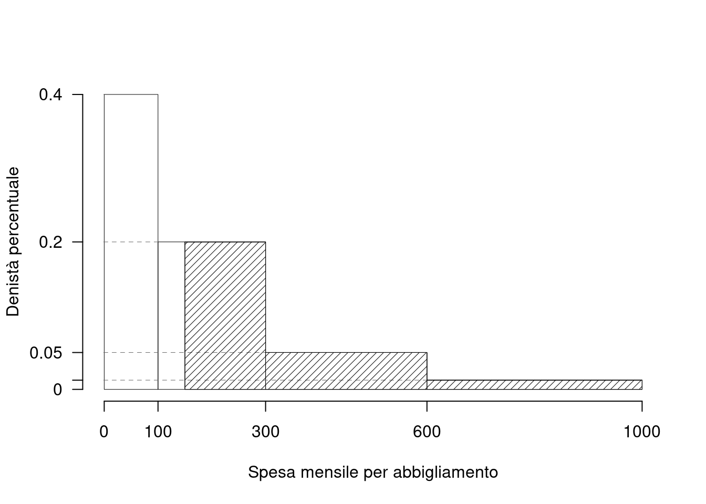\[\begin{eqnarray*} p &=& 0.5 , \text{essendo }F_{ 2 }= 0.8 > 0.5 \Rightarrow j_{ 0.5 }= 2 \\ x_{ 0.5 } &=& x_{\text{inf}; 2 } + \frac{ { 0.5 } - F_{ 1 }} {f_{ 2 }} \cdot b_{ 2 } \\ &=& 100 + \frac {{ 0.5 } - 0.4 } { 0.4 } \cdot 200 \\ &=& 150 \end{eqnarray*}\]
1.b (Punti 3/91 \(\rightarrow\) 1.02/31) Qual è il numero di individui che spende più di 150€ al mese?
\[\begin{eqnarray*} \%(X> 150 ) &=& ( 300 - 150 )\times h_{ 2 }+ f_{ 3 }\times 100+f_{ 4 }\times 100 \\ &=& ( 150 )\times 0.2 + ( 0.15 )\times 100+( 0.05 )\times 100 \\ &=& 0.5 \times(100)\\ \#(X> 150 ) &\approx& 100 \end{eqnarray*}\]
1.c (Punti 2/91 \(\rightarrow\) 0.68/31) Individuare la classe modale, metterla in relazione con la mediana e indicare la loro relazione con la media.
1.d (Punti 2/91 \(\rightarrow\) 0.68/31) Michele ha sostenuto tre esami e ha la media del 26, al quarto esame ha preso 28. Qual è la media calcolata sui 4 esami?
\[\begin{eqnarray*} \bar x &=&\frac {26\times 3+28}{3+1}\\ &=& \frac {106}{4}\\ &=& 26.5 \end{eqnarray*}\]
Esercizio 2
Supponiamo di avere due urne, urna A e urna B, contenenti palline di due colori: rosse e blu. Nell’urna A, ci sono 10 palline di cui 4 rosse e 6 blu. Nell’urna B, ci sono 20 palline di cui 8 rosse e 12 blu. Estraiamo con reintroduzione 5 palline da ciascuna urna in modo indipendente. Definiamo gli eventi:
- \(A=\) “l’estrazione dall’urna A dà al massimo una pallina rossa (1 pallina rossa o meno)”.
- \(B=\) “L’estrazione dall’urna B dà come risultato almeno 4 palline blu (4 o più palline blu)”.
(Punti 14) Calcola la probabilità che almeno uno dei due eventi sia vero, ovvero la probabilità di \(A \cup B\).
\[\begin{eqnarray*} P( X \leq 1 ) &=& \binom{ 5 }{ 0 } 0.3333 ^{ 0 }(1- 0.3333 )^{ 5 - 0 }+\binom{ 5 }{ 1 } 0.3333 ^{ 1 }(1- 0.3333 )^{ 5 - 1 } \\ &=& 0.1317+0.3293 \\ &=& 0.461 \end{eqnarray*}\] \[\begin{eqnarray*} P( Y \geq 4 ) &=& \binom{ 5 }{ 4 } 0.6667 ^{ 4 }(1- 0.6667 )^{ 5 - 4 }+\binom{ 5 }{ 5 } 0.6667 ^{ 5 }(1- 0.6667 )^{ 5 - 5 } \\ &=& 0.3293+0.1317 \\ &=& 0.461 \end{eqnarray*}\] \[\begin{eqnarray*} P(A\cup B) &=& P(A)+P(B)-P(A\cap B)\\ &=& 0.4609+0.4609-0.2124\\ &=& 0.7094 \end{eqnarray*}\]
2.a (Punti 3/91 \(\rightarrow\) 1.02/31) Qual è la probabilità di avere esattamente uno solo due eventi sia vera?
\[\begin{eqnarray*} P(A) &=& 0.4609\\ P(B) &=& 0.4609\\ P(\text{Solo uno dei due vero}) &=& P(A\cap\bar B)+P(\bar A\cap B)\\ &=& 0.4609\times (1 - 0.4609)+(1-0.4609)\times 0.4609\\ &=& 0.4969 \end{eqnarray*}\]
2.b (Punti 2/91 \(\rightarrow\) 0.68/31) Siano \(X_1\sim N(5,1)\) e \(X_2\sim N(5,1)\), \(X_1\) e \(X_2\) indipendenti. Come si distribuisce \[ \bar X = \frac 12 (X_1+X_2) ~~~? \]
2.c (Punti 2/91 \(\rightarrow\) 0.68/31) Siano \(A\) e \(B\) due eventi tali che \(P(A)=0.3\) e \(P(B)=0.3\). \(A\) e \(B\) possono essere incompatibili? (scegliere tra sempre, mai, dipende e motivare la risposta)
Esercizio 3
3.a (Punti 14/91 \(\rightarrow\) 4.77/31) Un’urna contiene le seguenti palline numerate {3,4,5,6,7,12}. Si vine se esce un numero pari. Si estrae con reintroduzione per \(n=81\) volte. Calcolare la probabilità che la proporzione di vincite sia minore più di 0.55.
\[\pi=\frac 12\] Teorema del Limite Centrale (proporzione)
Siano \(X_1\),…,\(X_n\), \(n=81\) VC IID, tc \(X_i\sim\text{Ber}(\pi=0.5)\)\(,\forall i\), posto: \[ \hat\pi=\frac{S_n}n = \frac{X_1 + ... + X_n}n \] allora:\[\begin{eqnarray*} \hat\pi & \mathop{\sim}\limits_{a}& N(\pi,\pi(1-\pi)/n) \\ &\sim & N\left(0.5,\frac{0.5\cdot(1-0.5)}{81}\right) \\ &\sim & N(0.5,0.003086) \end{eqnarray*}\]\[\begin{eqnarray*} P( \hat\pi < 0.55 ) &=& P\left( \frac { \hat\pi - \pi }{ \sqrt{\pi(1-\pi)/n} } < \frac { 0.55 - 0.5 }{\sqrt{ 0.003086 }} \right) \\ &=& P\left( Z < 0.9 \right) \\ &=& \Phi( 0.9 ) \\ &=& 0.8159 \end{eqnarray*}\]
Esercizio 4
4.a (Punti 3/91 \(\rightarrow\) 1.02/31) Sia \(\hat \beta_0\) lo stimatore dei minimi quadrati di \(\beta_0\) del modello di regressione lineare. \[\begin{eqnarray*} \hat\beta_0 &=&\bar y- \hat\beta_1\bar x\\ \end{eqnarray*}\] Dimostrare la consistenza di \(\hat\beta_0\).
4.b (Punti 3/91 \(\rightarrow\) 1.02/31) Cosa significa che gli stimatori di massima verosimiglianza sono asintoticamente a massima efficienza?
4.c (Punti 3/91 \(\rightarrow\) 1.02/31) Definire gli errori di primo e secondo tipo.
4.d (Punti 3/91 \(\rightarrow\) 1.02/31) Un sociologo sta conducendo uno studio sull’associazione tra l’orientamento politico e l’atteggiamento nei confronti del cambiamento climatico. Ha somministrato un questionario a 520 partecipanti, chiedendo loro di indicare il proprio orientamento politico (Conservatore, Progressista, Indipendente) e l’atteggiamento nei confronti del cambiamento climatico (Molto, poco, per nulla) preoccupato. L’obiettivo è determinare se c’è un’associazione significativa tra l’orientamento politico e l’atteggiamento nei confronti del cambiamento climatico.
|
Preoccupato per i cambiamenti climatici
|
|||
|---|---|---|---|
| Molto | Poco | Per nulla | |
| Orientamento politico | |||
| Conservatore | 50 | 80 | 50 |
| Progressista | 60 | 100 | 40 |
| Indipendente | 40 | 50 | 50 |
Eseguito il test del \(\chi^2\) per verificare l’indipendenza tra l’orientamento politico e la preoccupazione sui cambiamenti climatici il sociologo ottiene un \(p_\text{value}=0.02061\). Quali conclusioni può trarne?
Esercizio 5
5.a (Punti 14/91 \(\rightarrow\) 4.77/31) In uno studio clinico per valutare l’efficacia di un nuovo farmaco, sono stati selezionati 160 pazienti con una particolare condizione medica. Tra questi, 80 sono stati trattati con un farmaco sperimentale e 80 col placebo. Tra i trattati, 48 pazienti hanno mostrato un miglioramento utilizzando il nuovo farmaco, mentre sono 40 quelli che hanno assunto il placebo e hanno mostrato miglioramenti. Testare l’ipotesi, usando il il \(p_\text{value}\), che il farmaco sia maggiormente efficace rispetto al placebo.
Test \(Z\) per due proporzioni
\(\fbox{A}\) FORMULAZIONE DELLE IPOTESI
\[\begin{cases} H_0: \pi_\text{F} = \pi_\text{P} \\ H_1: \pi_\text{F} > \pi_\text{P} \end{cases}\]
\(\fbox{B}\) SCELTA E CALCOLO STATISTICA-TEST, \(Z\)
\[\hat\pi_\text{ F }=\frac{s_\text{ F }}{n_\text{ F }}=\frac{ 48 }{ 80 }= 0.6 \qquad \hat\pi_\text{ P }=\frac{s_\text{ P }}{n_\text{ P }}=\frac{ 40 }{ 80 }= 0.5 \]Calcoliamo la proporzione comune sotto \(H_0\) \[ \pi_C=\frac{s_\text{ F }+s_\text{ P }}{n_\text{ F }+n_\text{ P }}= \frac{ 88 }{ 160 }= 0.55 \]\[\begin{eqnarray*} \frac{\hat\pi_\text{ F } - \hat\pi_\text{ P }} {\sqrt{\frac {\pi_C(1-\pi_C)}{n_\text{ F }}+\frac {\pi_C(1-\pi_C)}{n_\text{ P }}}}&\sim&N(0,1)\\ z_{\text{obs}} &=& \frac{ ( 0.6 - 0.5 )} {\sqrt{\frac{ 0.55 (1- 0.55 )}{ 80 }+\frac{ 0.55 (1- 0.55 )}{ 80 }}} = 1.271 \, . \end{eqnarray*}\]
\(\fbox{C}\) CONCLUSIONE
Il \(p_{\text{value}}\) è
\[ p_{\text{value}} = P(Z>1.27)=0.101814 \]
\[ 0.1 < p_\text{value}= 0.101814 \leq 1 \]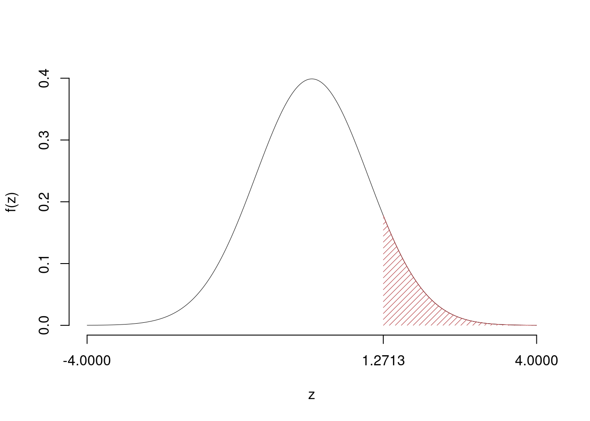
Non rifiuto \(H_0\) a nessun livello di significatività,
\(p_\text{value}>0.1\), non significativo
Esercizio 6
In uno studio sul reddito, in un campione di \(n=50\) individui, sono state analizzati il livello di istruzione (in anni di studio, \(X\)) e il reddito annuale (in migliaia di euro, \(Y\)). Si osservano le seguenti statistiche, \(\sum_{i=1}^{50}x_i=524\), \(\sum_{i=1}^{50}y_i=1699\), \(\sum_{i=1}^{50}x_i^2=6210\), \(\sum_{i=1}^{50}y_i^2=61955\) e \(\sum_{i=1}^{50}x_iy_i=19306\).
6.a (Punti 14/91 \(\rightarrow\) 4.77/31) Si è osservato \(x_3=7\) e \(y_3=22\), stimare il modello di regressione dove \(Y\) viene spiegata da \(X\) e calcolare il residuo per il punto \(i=3\).
\[\begin{eqnarray*} \bar x &=&\frac 1 n\sum_{i=1}^n x_i = \frac {1}{ 50 } 524 = 10.48 \\ \bar y &=&\frac 1 n\sum_{i=1}^n y_i = \frac {1}{ 50 } 1699 = 33.98 \\ \hat\sigma_X^2&=&\frac 1 n\sum_{i=1}^n x_i^2-\bar x^2=\frac {1}{ 50 } 6210 - 10.48 ^2= 14.37 \\ \hat\sigma_Y^2&=&\frac 1 n\sum_{i=1}^n y_i^2-\bar y^2=\frac {1}{ 50 } 61955 - 33.98 ^2= 84.46 \\ \text{cov}(X,Y)&=&\frac 1 n\sum_{i=1}^n x_i~y_i-\bar x\bar y=\frac {1}{ 50 } 19306 - 10.48 \cdot 33.98 = 30.01 \\ \hat\beta_1 &=& \frac{\text{cov}(X,Y)}{\hat\sigma_X^2} \\ &=& \frac{ 30.01 }{ 14.37 } = 2.088 \\ \hat\beta_0 &=& \bar y - \hat\beta_1 \bar x\\ &=& 33.98 - 2.0884 \times 10.48 = 12.09 \end{eqnarray*}\]\[\begin{eqnarray*} \hat y_i &=&\hat\beta_0+\hat\beta_1 x_i=\\ &=& 12.09 + 2.0884 \times 7 = 26.71 \\ \hat \varepsilon_i &=& y_i-\hat y_i\\ &=& 22 - 26.71 = -4.712 \end{eqnarray*}\]
6.b (Punti 3/91 \(\rightarrow\) 1.02/31) Scrivere la scomposizione della varianza e calcolarla per i dati in esame.
\[\begin{eqnarray*} TSS &=& n\hat\sigma^2_Y\\ &=& 50 \times 84.46 \\ &=& 4223 \\ ESS &=& R^2\cdot TSS\\ &=& 0.742 \cdot 4223 \\ &=& 3134 \\ RSS &=& (1-R^2)\cdot TSS\\ &=& (1- 0.742 )\cdot 4223 \\ &=& 1089 \\ TSS &=& ESS+RSS \\ 4223 &=& 3134 + 1089 \end{eqnarray*}\]
6.c (Punti 2/91 \(\rightarrow\) 0.68/31) Stimare \(\sigma^2_\varepsilon\).
\[\begin{eqnarray*} \hat{\sigma_\varepsilon}^2&=&(1-r^2)\hat\sigma_Y^2\\ &=& (1-0.742)\times84.4596\\ &=& 21.7873\\ S_\varepsilon^2 &=& \frac{n} {n-2} \hat{\sigma_\varepsilon}^2\\ &=& \frac{50} {50-2} \hat{\sigma_\varepsilon}^2 \\ &=& \frac{50} {50-2} \times 21.7873 = 22.6951 \end{eqnarray*}\]
6.d (Punti 2/91 \(\rightarrow\) 0.68/31) Definire i punti influenti.
6.e (Punti 2/91 \(\rightarrow\) 0.68/31) Se in un modello di regressione \(r=0.35\), \(\hat\sigma_X=1.2\) e \(\hat\beta_1=0.5\), quanto varrà \(\hat\sigma_Y\), la standard deviation di \(Y\)?